2. Der Spring 4-Server
 |
In der oben dargestellten Architektur befassen wir uns nun mit der Erstellung des Webdienstes /JSON, der mit dem Spring 4-Framework aufgebaut ist. Wir werden ihn in mehreren Schritten implementieren:
- zunächst die Schichten [métier] und [DAO] (Data Access Object). Hier verwenden wir Spring Data;
- dann den Webdienst JSON ohne Authentifizierung. Hier verwenden wir Spring MVC;
- anschließend fügen wir den Authentifizierungsteil mit Spring Security hinzu.
Zunächst erläutern wir die Struktur der der Anwendung zugrunde liegenden Datenbank.
2.1. Die Datenbank
 |
Die im Folgenden als [dbrdvmedecins] bezeichnete Datenbank ist eine MySQL5-Datenbank mit den folgenden Tabellen:
 |
Die Termine werden über die folgenden Tabellen verwaltet:
- [medecins]: enthält die Liste der Ärzte der Praxis;
- [clients]: enthält die Liste der Patienten der Praxis;
- [creneaux]: enthält die Zeitfenster der einzelnen Ärzte;
- [rv]: enthält die Liste der Termine der Ärzte.
Die Tabellen [roles], [users] und [users_roles] sind Tabellen, die mit der Authentifizierung zusammenhängen. Diese werden wir vorerst nicht behandeln.
Die Beziehungen zwischen den Tabellen, die die Termine verwalten, sind wie folgt:
 |
- Ein Terminfenster gehört zu einem Arzt – ein Arzt hat 0 oder mehrere Terminfenster;
- ein Termin verbindet einen Kunden und einen Arzt über einen Zeitblock des Arztes;
- Ein Kunde hat 0 oder mehrere Termine;
- einem Zeitfenster sind 0 oder mehrere Termine (an verschiedenen Tagen) zugeordnet.
2.1.1. Die Tabelle [MEDECINS]
Sie enthält Informationen zu den Ärzten, die von der Anwendung [RdvMedecins] verwaltet werden.
 |  |
- ID: Nummer zur Identifizierung des Arztes – Primärschlüssel der Tabelle
- VERSION: Nummer zur Identifizierung der Zeilenversion in der Tabelle. Diese Nummer wird bei jeder Änderung an der Zeile um 1 erhöht.
- NOM: Name des Arztes
- PRENOM: sein Vorname
- TITRE: sein Titel (Fräulein, Frau, Herr)
2.1.2. Die Tabelle [CLIENTS]
Die Patienten der verschiedenen Ärzte sind in der Tabelle [CLIENTS] gespeichert:
 |  |
- ID: Nummer zur Identifizierung des Kunden – Primärschlüssel der Tabelle
- VERSION: Nummer zur Identifizierung der Zeilenversion in der Tabelle. Diese Nummer wird bei jeder Änderung an der Zeile um 1 erhöht.
- NOM: Name des Kunden
- PRENOM: sein Vorname
- TITRE: seine Anrede (Fräulein, Frau, Herr)
2.1.3. Die Tabelle [CRENEAUX]
Sie listet die Zeitfenster auf, in denen RV möglich sind:
 |
 |
- ID: Nummer zur Identifizierung des Zeitfensters – Primärschlüssel der Tabelle (Zeile 8)
- VERSION: Nummer zur Identifizierung der Version der Zeile in der Tabelle. Diese Nummer wird bei jeder Änderung an der Zeile um 1 erhöht.
- ID_MEDECIN: Nummer zur Identifizierung des Arztes, zu dem dieses Zeitfenster gehört – Fremdschlüssel auf die Spalte MEDECINS (ID).
- HDEBUT: Startzeit des Zeitfensters
- MDEBUT: Startminute des Zeitfensters
- HFIN: Endzeit des Zeitfensters
- MFIN: Minuten des Zeitfensterschlusses
Die zweite Zeile der Tabelle [CRENEAUX] (siehe [1] oben) gibt beispielsweise an, dass der Termin Nr. 2 um 8:20 Uhr beginnt und um 8:40 Uhr endet und der Ärztin Nr. 1 (Frau Marie PELISSIER).
2.1.4. Die Tabelle [RV]
Sie listet die für jeden Arzt vergebenen RV auf:
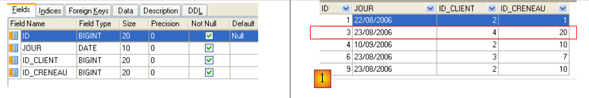 |
- ID: Nummer, die den RV eindeutig identifiziert – Primärschlüssel
- JOUR: Tag des RV
- ID_CRENEAU: Zeitfenster von RV – Fremdschlüssel auf dem Feld [ID] der Tabelle [CRENEAUX] – legt sowohl das Zeitfenster als auch den zuständigen Arzt fest.
- ID_CLIENT: Kundennummer, für die die Reservierung vorgenommen wird – Fremdschlüssel auf das Feld [ID] der Tabelle [CLIENTS]
Diese Tabelle verfügt über eine Eindeutigkeits für die Werte der verknüpften Spalten (JOUR, ID_CRENEAU):
Wenn eine Zeile der Tabelle [RV] den Wert (JOUR1, ID_CRENEAU1) für die Spalten (JOUR, ID_CRENEAU) aufweist, darf dieser Wert nirgendwo anders vorkommen. Andernfalls würde dies bedeuten, dass zwei RV gleichzeitig für denselben Arzt erfasst wurden. Aus Sicht der Java-Programmierung löst der Treiber JDBC der Datenbank in diesem Fall einen SQLException aus.
Die Zeile mit dem Wert 3 für id (siehe [1] oben) bedeutet, dass am 23.08.2006 ein RV für den Terminblock Nr. 20 und den Kunden Nr. 4 gebucht wurde. Aus der Tabelle [CRENEAUX] geht hervor, dass der Termin Nr. 20 dem Zeitfenster 16:20 – 16:40 Uhr entspricht und der Ärztin Nr. 1 (Frau Marie PELISSIER) zugeordnet ist. Aus der Tabelle [CLIENTS] geht hervor, dass es sich bei Patient Nr. 4 um Frau Brigitte BISTROU handelt.
2.2. Einführung in Spring Data
Wir werden die Schicht [DAO] des Projekts mit Spring Data, einem Teil des Spring-Ökosystems, implementieren.
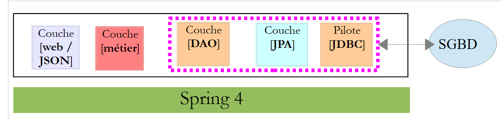 |
Auf der Spring-Website gibt es zahlreiche Tutorials für den Einstieg in Spring [http://spring.io/guides]. Wir werden eines davon nutzen, um Spring Data vorzustellen. Dazu verwenden wir die Spring Tool Suite (STS).
 |
- In [1] importieren wir eines der Tutorials aus [spring.io/guides];
 |
- in [2] wählen wir das Tutorial [Accessing Data Jpa] aus, das zeigt, wie man mit Spring Data auf eine Datenbank zugreift;
- in [3] wählen wir ein von Maven konfiguriertes Projekt aus;
- In [4] kann das Tutorial in zwei Formen bereitgestellt werden: [initial], eine leere Version, die man gemäß dem Tutorial ausfüllt, oder [complete], die endgültige Version des Tutorials. Wir wählen Letzteres;
- In [5] kann man das Tutorial in einem Browser anzeigen lassen;
- bei [6] das fertige Projekt.
2.2.1. Die Maven-Konfiguration des Projekts
Die Maven-Abhängigkeiten des Projekts werden in der Datei [pom.xml] konfiguriert:
<groupId>org.springframework</groupId>
<artifactId>gs-accessing-data-jpa</artifactId>
<version>0.1.0</version>
<parent>
<groupId>org.springframework.boot</groupId>
<artifactId>spring-boot-starter-parent</artifactId>
<version>1.0.2.RELEASE</version>
</parent>
<dependencies>
<dependency>
<groupId>org.springframework.boot</groupId>
<artifactId>spring-boot-starter-data-jpa</artifactId>
</dependency>
<dependency>
<groupId>com.h2database</groupId>
<artifactId>h2</artifactId>
</dependency>
</dependencies>
<properties>
<!-- verwenden Sie UTF-8 für alles -->
<project.build.sourceEncoding>UTF-8</project.build.sourceEncoding>
<project.reporting.outputEncoding>UTF-8</project.reporting.outputEncoding>
<start-class>hello.Application</start-class>
</properties>
- Zeilen 5–9: Definieren ein übergeordnetes Maven-Projekt. Dieses legt den Großteil der Projektabhängigkeiten fest. Entweder sind diese bereits ausreichend, sodass keine weiteren hinzugefügt werden müssen, oder es fehlen noch Abhängigkeiten, die dann ergänzt werden müssen;
- Zeilen 12–15: definieren eine Abhängigkeit von [spring-boot-starter-data-jpa]. Dieses Artefakt enthält die Spring-Data-Klassen;
- Zeilen 16–19: definieren eine Abhängigkeit von SGBD und H2, mit denen In-Memory-Datenbanken erstellt und verwaltet werden können.
Sehen wir uns die Klassen an, die durch diese Abhängigkeiten bereitgestellt werden:
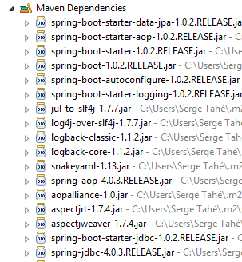 | 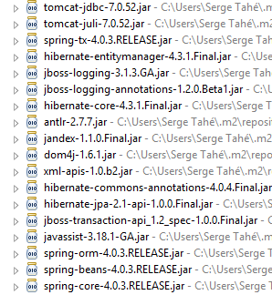 | 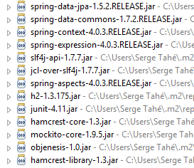 |
Es sind sehr viele:
- Einige gehören zum Spring-Ökosystem (diejenigen, die mit „spring“ beginnen);
- andere gehören zum Hibernate-Ökosystem (hibernate, jboss), von dem wir hier die Implementierung JPA verwenden;
- wieder andere sind Testbibliotheken (junit, hamcrest);
- wieder andere sind Logging-Bibliotheken (log4j, logback, slf4j);
Wir werden sie alle beibehalten. Für eine Anwendung im Produktivbetrieb sollten jedoch nur die notwendigen Bibliotheken beibehalten werden.
In Zeile 26 der Datei [pom.xml] findet sich die Zeile:
<start-class>hello.Application</start-class>
Diese Zeile steht in Zusammenhang mit den folgenden Zeilen:
<build>
<plugins>
<plugin>
<artifactId>maven-compiler-plugin</artifactId>
</plugin>
<plugin>
<groupId>org.springframework.boot</groupId>
<artifactId>spring-boot-maven-plugin</artifactId>
</plugin>
</plugins>
</build>
In den Zeilen 6–9 ermöglicht das Plugin [spring-boot-maven-plugin] die Generierung der ausführbaren JAR-Datei der Anwendung. Zeile 26 der Datei [pom.xml] bezeichnet dann die ausführbare Klasse dieser JAR-Datei.
2.2.2. Die Schicht [JPA]
Der Zugriff auf die Datenbank erfolgt über eine Schicht [JPA], Java Persistence API:
 |
 |
Die Anwendung ist einfach aufgebaut und verwaltet Kunden [Customer]. Die Klasse [Customer] ist Teil der Schicht [JPA] und sieht wie folgt aus:
package hello;
import javax.persistence.Entity;
import javax.persistence.GeneratedValue;
import javax.persistence.GenerationType;
import javax.persistence.Id;
@Entity
public class Customer {
@Id
@GeneratedValue(strategy = GenerationType.AUTO)
private long id;
private String firstName;
private String lastName;
protected Customer() {
}
public Customer(String firstName, String lastName) {
this.firstName = firstName;
this.lastName = lastName;
}
@Override
public String toString() {
return String.format("Customer[id=%d, firstName='%s', lastName='%s']", id, firstName, lastName);
}
}
Ein Kunde hat eine ID [id], einen Vornamen [firstName] und einen Nachnamen [lastName]. Jede Instanz [Customer] repräsentiert eine Zeile einer Datenbanktabelle.
- Zeile 8: Annotation JPA, die bewirkt, dass die Persistenz der Instanzen [Customer] (Create, Read, Update, Delete) durch eine Implementierung JPA verwaltet wird. Den Maven-Abhängigkeiten zufolge wird die Implementierung JPA / Hibernate verwendet;
- Zeilen 11–12: Annotationen JPA, die das Feld [id] mit dem Primärschlüssel der Tabelle [Customer] verknüpfen. Zeile 12 gibt an, dass die Implementierung JPA die für das verwendete SGBD spezifische Methode zur Primärschlüsselgenerierung verwendet, in diesem Fall H2;
Es gibt keine weiteren Anmerkungen zu JPA. In diesem Fall werden Standardwerte verwendet:
- Die Tabelle [Customer] erhält den Namen der Klasse, d. h. [Customer];
- die Spalten dieser Tabelle tragen die Namen der Felder der Klasse: [id, firstName, lastName], wobei bei den Namen von Tabellenspalten die Groß-/Kleinschreibung nicht berücksichtigt wird;
Es ist zu beachten, dass die verwendete Implementierung JPA zu keinem Zeitpunkt namentlich genannt wird.
2.2.3. Die Schicht [DAO]
 |
 |
Die Klasse [CustomerRepository] implementiert die Schicht [DAO]. Ihr Code lautet wie folgt:
package hello;
import java.util.List;
import org.springframework.data.repository.CrudRepository;
public interface CustomerRepository extends CrudRepository<Customer, Long> {
List<Customer> findByLastName(String lastName);
}
Es handelt sich also um eine Schnittstelle und nicht um eine Klasse (Zeile 7). Sie erweitert die Schnittstelle [CrudRepository], eine Schnittstelle von Spring Data (Zeile 5). Diese Schnittstelle wird durch zwei Typen parametrisiert: Der erste ist der Typ der verwalteten Elemente, hier der Typ [Customer], der zweite der Typ des Primärschlüssels der verwalteten Elemente, hier ein Typ [Long]. Die Schnittstelle [CrudRepository] lautet wie folgt:
package org.springframework.data.repository;
import java.io.Serializable;
@NoRepositoryBean
public interface CrudRepository<T, ID extends Serializable> extends Repository<T, ID> {
<S extends T> S save(S entity);
<S extends T> Iterable<S> save(Iterable<S> entities);
T findOne(ID id);
boolean exists(ID id);
Iterable<T> findAll();
Iterable<T> findAll(Iterable<ID> ids);
long count();
void delete(ID id);
void delete(T entity);
void delete(Iterable<? extends T> entities);
void deleteAll();
}
Diese Schnittstelle definiert die Operationen CRUD (Create – Read – Update – Delete), die auf einem Typ JPA T durchgeführt werden können:
- Zeile 8: Die Methode „save“ ermöglicht es, eine Entität vom Typ T in der Datenbank zu speichern. Sie speichert die Entität unter dem Primärschlüssel, der ihr von SGBD zugewiesen wurde. Außerdem ermöglicht sie die Aktualisierung einer Entität vom Typ T, die durch ihren Primärschlüssel „id“ identifiziert wird. Die Wahl der einen oder anderen Aktion hängt vom Wert des Primärschlüssels „id“ ab: Ist dieser null, wird die Persistenzoperation ausgeführt, andernfalls die Aktualisierungsoperation;
- Zeile 10: dasselbe, jedoch für eine Liste von Entitäten;
- Zeile 12: Die Methode findOne ermöglicht es, eine Entität T abzurufen, die durch ihren Primärschlüssel id identifiziert wird;
- Zeile 22: Mit der Methode „delete“ kann eine Entität T gelöscht werden, die durch ihren Primärschlüssel „id“ identifiziert wird;
- Zeilen 24–28: Varianten der Methode [delete];
- Zeile 16: Mit der Methode [findAll] lassen sich alle persistenten Entitäten T abrufen;
- Zeile 18: dasselbe, jedoch beschränkt auf Entitäten, für die eine Liste von Identifikatoren übergeben wurde;
Kehren wir zur Schnittstelle [CustomerRepository] zurück:
package hello;
import java.util.List;
import org.springframework.data.repository.CrudRepository;
public interface CustomerRepository extends CrudRepository<Customer, Long> {
List<Customer> findByLastName(String lastName);
}
- Zeile 9 ermöglicht es, ein [Customer] anhand seines Namens [lastName] abzurufen;
Und das war’s auch schon für die Schicht [DAO]. Es gibt keine Implementierungsklasse für die vorherige Schnittstelle. Diese wird zur Laufzeit von [Spring Data] generiert. Die Methoden der Schnittstelle [CrudRepository] werden automatisch implementiert. Bei den Methoden, die in der Schnittstelle [CustomerRepository] hinzugefügt wurden, kommt es darauf an. Kehren wir zur Definition von [Customer] zurück:
private long id;
private String firstName;
private String lastName;
Die Methode in Zeile 9 wird automatisch von [Spring Data] implementiert, da sie auf das Feld [lastName] (Zeile 3) von [Customer] verweist. Wenn Spring Data in der zu implementierenden Schnittstelle auf eine Methode [findBySomething] stößt, implementiert es diese mithilfe der folgenden JPQL-Abfrage (Java Persistence Query Language):
Der Typ T muss daher ein Feld mit dem Namen [something] besitzen. Somit lautet die Methode
wird durch einen Code implementiert, der in etwa wie folgt aussieht:
return [em].createQuery("select c from Customer c where c.lastName=:value").setParameter("value",lastName).getResultList()
wobei [em] den Persistenzkontext JPA bezeichnet. Dies ist nur möglich, wenn die Klasse [Customer] ein Feld namens [lastName] besitzt, was der Fall ist.
Zusammenfassend lässt sich sagen, dass Spring Data es uns in einfachen Fällen ermöglicht, die Schicht [DAO] mit einer einfachen Schnittstelle zu implementieren.
2.2.4. Die Schicht [console]
 |
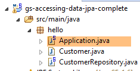 |
Die Klasse [Application] sieht wie folgt aus:
package hello;
import java.util.List;
import org.springframework.boot.SpringApplication;
import org.springframework.boot.autoconfigure.EnableAutoConfiguration;
import org.springframework.context.ConfigurableApplicationContext;
import org.springframework.context.annotation.Configuration;
@Configuration
@EnableAutoConfiguration
public class Application {
public static void main(String[] args) {
ConfigurableApplicationContext context = SpringApplication.run(Application.class);
CustomerRepository repository = context.getBean(CustomerRepository.class);
// einige Kunden speichern
repository.save(new Customer("Jack", "Bauer"));
repository.save(new Customer("Chloe", "O'Brian"));
repository.save(new Customer("Kim", "Bauer"));
repository.save(new Customer("David", "Palmer"));
repository.save(new Customer("Michelle", "Dessler"));
// alle Kunden abrufen
Iterable<Customer> customers = repository.findAll();
System.out.println("Customers found with findAll():");
System.out.println("-------------------------------");
for (Customer customer : customers) {
System.out.println(customer);
}
System.out.println();
// einen einzelnen Kunden über ID abrufen
Customer customer = repository.findOne(1L);
System.out.println("Customer found with findOne(1L):");
System.out.println("--------------------------------");
System.out.println(customer);
System.out.println();
// Kunden nach Nachnamen abrufen
List<Customer> bauers = repository.findByLastName("Bauer");
System.out.println("Customer found with findByLastName('Bauer'):");
System.out.println("--------------------------------------------");
for (Customer bauer : bauers) {
System.out.println(bauer);
}
context.close();
}
}
- Zeile 10: gibt an, dass die Klasse zur Konfiguration von Spring dient. Neuere Versionen von Spring können tatsächlich in Java statt in XML konfiguriert werden. Beide Methoden können gleichzeitig verwendet werden. Im Code einer Klasse mit der Annotation [Configuration] finden sich normalerweise Spring-Beans, d. h. Definitionen von Klassen, die instanziiert werden sollen. Hier ist kein Bean definiert. An dieser Stelle sei daran erinnert, dass bei der Arbeit mit einem SGBD verschiedene Spring-Beans definiert werden müssen:
- ein [EntityManagerFactory], das die zu verwendende Implementierung JPA definiert,
- ein [DataSource], das die zu verwendende Datenquelle definiert,
- ein [TransactionManager], das den zu verwendenden Transaktionsmanager definiert;
Hier ist keines dieser Beans definiert.
- Zeile 11: Die Annotation [EnableAutoConfiguration] stammt aus dem Projekt [Spring Boot] (Zeilen 5–6). Diese Annotation weist Spring Boot über die Klasse [SpringApplication] (Zeile 16) an, die Anwendung entsprechend den im Classpath gefundenen Bibliotheken zu konfigurieren. Da sich die Hibernate-Bibliotheken im Classpath befinden, wird die Bean [entityManagerFactory] mit Hibernate implementiert. Da sich die Bibliothek SGBD im Classpath befindet, wird die Bean H2 mit [dataSource] implementiert. In der Bean [dataSource] müssen außerdem der Benutzer und sein Passwort definiert werden. Hier verwendet Spring Boot den Standardadministrator von H2, der kein Passwort hat. Da sich die Bibliothek [spring-tx] im Classpath befindet, wird der Transaktionsmanager von Spring verwendet.
Außerdem wird der Ordner, in dem sich die Klasse [Application] befindet, nach Beans durchsucht, die von Spring implizit erkannt oder explizit durch Spring-Annotationen definiert wurden. Somit werden die Klassen [Customer] und [CustomerRepository] überprüft. Da die erste Klasse die Annotation [@Entity] trägt, wird sie als von Hibernate zu verwaltende Entität katalogisiert. Da die zweite Klasse die Schnittstelle [CrudRepository] erweitert, wird sie als Spring-Bean registriert.
Betrachten wir die Zeilen 16–17 des Codes:
ConfigurableApplicationContext context = SpringApplication.run(Application.class);
CustomerRepository repository = context.getBean(CustomerRepository.class);
- Zeile 1: Die statische Methode [run] der Klasse [SpringApplication] aus dem Spring-Boot-Projekt wird ausgeführt. Ihr Parameter ist die Klasse, die eine Annotation [Configuration] oder [EnableAutoConfiguration] trägt. Anschließend läuft alles ab, was zuvor erläutert wurde. Das Ergebnis ist ein Spring-Anwendungskontext, d. h. eine Sammlung von Beans, die von Spring verwaltet werden;
- Zeile 17: Von diesem Spring-Kontext wird ein Bean angefordert, der die Schnittstelle [CustomerRepository] implementiert. Hier wird die von Spring Data generierte Klasse zur Implementierung dieser Schnittstelle abgerufen.
Die folgenden Operationen nutzen lediglich die Methoden des Beans, der die Schnittstelle [CustomerRepository] implementiert. In Zeile 50 ist zu beachten, dass der Kontext geschlossen wird. Die Konsolenausgaben lauten wie folgt:
- Zeilen 1–8: das Logo des Spring-Boot-Projekts;
- Zeile 9: Die Klasse „[hello.Application]“ wird ausgeführt;
- Zeile 10: [AnnotationConfigApplicationContext] ist eine Klasse, die die Spring-Schnittstelle [ApplicationContext] implementiert. Es handelt sich um einen Bean-Container;
- Zeile 11: Die Bean [entityManagerFactory] wird durch die Klasse [LocalContainerEntityManagerFactory] implementiert, eine Spring-Klasse;
- Zeile 12: Hier taucht [hibernate] auf. Es wurde diese Implementierung JPA ausgewählt;
- Zeile 19: Als Hibernate-Dialekt wird die Variante SQL zur Verwendung mit SGBD festgelegt. Hier zeigt der Dialekt [H2Dialect], dass Hibernate mit den Dialekten SGBD und H2 arbeiten wird;
- Zeilen 22–24: Die Tabelle [CUSTOMER] wird angelegt. Das bedeutet, dass Hibernate so konfiguriert wurde, dass es die Tabellen anhand der Definitionen JPA generiert, in diesem Fall anhand der Definition JPA der Klasse [Customer];
- Zeilen 27–32: Hibernate-Protokolle, die das Einfügen von Zeilen in die Tabelle [CUSTOMER] zeigen. Das bedeutet, dass Hibernate so konfiguriert wurde, dass Protokolle generiert werden;
- Zeilen 35–39: die fünf eingefügten Kunden;
- Zeilen 42–44: Ergebnis der Methode [findOne] der Schnittstelle;
- Zeilen 47–50: Ergebnisse der Methode [findByLastName];
- Zeilen 51 ff.: Protokolle zum Schließen des Spring-Kontexts.
2.2.5. Manuelle Konfiguration des Spring-Data-Projekts
Wir duplizieren das vorherige Projekt in das Projekt [gs-accessing-data-jpa-2]:
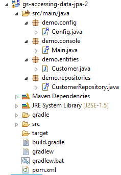 |
In diesem neuen Projekt verlassen wir uns nicht auf die automatische Konfiguration durch Spring Boot. Wir nehmen die Konfiguration manuell vor. Dies kann nützlich sein, wenn uns die Standardkonfigurationen nicht zusagen.
Zunächst legen wir die erforderlichen Abhängigkeiten in der Datei [pom.xml] fest:
<dependencies>
<!-- Spring Core -->
<dependency>
<groupId>org.springframework</groupId>
<artifactId>spring-core</artifactId>
<version>4.0.5.RELEASE</version>
</dependency>
<dependency>
<groupId>org.springframework</groupId>
<artifactId>spring-context</artifactId>
<version>4.0.5.RELEASE</version>
</dependency>
<dependency>
<groupId>org.springframework</groupId>
<artifactId>spring-beans</artifactId>
<version>4.0.5.RELEASE</version>
</dependency>
<!-- Spring-Transaktionen -->
<dependency>
<groupId>org.springframework</groupId>
<artifactId>spring-aop</artifactId>
<version>4.0.5.RELEASE</version>
</dependency>
<dependency>
<groupId>org.springframework</groupId>
<artifactId>spring-tx</artifactId>
<version>4.0.5.RELEASE</version>
</dependency>
<!-- Spring Data -->
<dependency>
<groupId>org.springframework.data</groupId>
<artifactId>spring-data-jpa</artifactId>
<version>1.5.2.RELEASE</version>
</dependency>
<!-- Spring Boot -->
<dependency>
<groupId>org.springframework.boot</groupId>
<artifactId>spring-boot</artifactId>
<version>1.0.2.RELEASE</version>
</dependency>
<!-- Hibernate -->
<dependency>
<groupId>org.hibernate</groupId>
<artifactId>hibernate-entitymanager</artifactId>
<version>4.3.4.Final</version>
</dependency>
<!-- H2 Datenbank -->
<dependency>
<groupId>com.h2database</groupId>
<artifactId>h2</artifactId>
<version>1.4.178</version>
</dependency>
<!-- Commons DBCP -->
<dependency>
<groupId>commons-dbcp</groupId>
<artifactId>commons-dbcp</artifactId>
<version>1.4</version>
</dependency>
<dependency>
<groupId>commons-pool</groupId>
<artifactId>commons-pool</artifactId>
<version>1.6</version>
</dependency>
</dependencies>
- Zeilen 3–17: die Spring-Basisbibliotheken;
- Zeilen 19–28: die Spring-Bibliotheken zur Verwaltung von Transaktionen mit einer Datenbank;
- Zeilen 30–34: Spring Data für den Zugriff auf die Datenbank;
- Zeilen 36–40: Spring Boot zum Starten der Anwendung;
- Zeilen 48–52: SGBD H2;
- Zeilen 54–63: Datenbanken werden häufig mit Pools offener Verbindungen verwendet, wodurch das wiederholte Öffnen und Schließen von Verbindungen vermieden wird. Hier wird die Implementierung von [commons-dbcp] verwendet;
Ebenfalls in [pom.xml] wird der Name der ausführbaren Klasse geändert:
<properties>
...
<start-class>demo.console.Main</start-class>
</properties>
Im neuen Projekt bleiben die Entität [Customer] und die Schnittstelle [CustomerRepository] unverändert. Die Klasse [Application] wird in zwei Klassen aufgeteilt:
- [Config], die als Konfigurationsklasse dient:
- [Main], die als ausführbare Klasse dient;
 |
Die ausführbare Klasse [Main] entspricht der vorherigen, jedoch ohne die Konfigurationsanmerkungen:
package demo.console;
import java.util.List;
import org.springframework.boot.SpringApplication;
import org.springframework.context.ConfigurableApplicationContext;
import demo.config.Config;
import demo.entities.Customer;
import demo.repositories.CustomerRepository;
public class Main {
public static void main(String[] args) {
ConfigurableApplicationContext context = SpringApplication.run(Config.class);
CustomerRepository repository = context.getBean(CustomerRepository.class);
...
context.close();
}
}
- Zeile 12: Die Klasse [Main] enthält keine Konfigurationsannotationen mehr;
- Zeile 16: Die Anwendung wird mit Spring Boot gestartet. Der Parameter [Config.class] ist die neue Konfigurationsklasse des Projekts;
Die Klasse [Config], die das Projekt konfiguriert, lautet wie folgt:
package demo.config;
import javax.persistence.EntityManagerFactory;
import javax.sql.DataSource;
import org.apache.commons.dbcp.BasicDataSource;
import org.springframework.context.annotation.Bean;
import org.springframework.context.annotation.Configuration;
import org.springframework.data.jpa.repository.config.EnableJpaRepositories;
import org.springframework.orm.jpa.JpaTransactionManager;
import org.springframework.orm.jpa.JpaVendorAdapter;
import org.springframework.orm.jpa.LocalContainerEntityManagerFactoryBean;
import org.springframework.orm.jpa.vendor.Database;
import org.springframework.orm.jpa.vendor.HibernateJpaVendorAdapter;
import org.springframework.transaction.PlatformTransactionManager;
import org.springframework.transaction.annotation.EnableTransactionManagement;
//@ComponentScan(basePackages = { "demo" })
//@EntityScan(basePackages = { "demo.entities" })
@EnableTransactionManagement
@EnableJpaRepositories(basePackages = { "demo.repositories" })
@Configuration
public class Config {
// die Datenquelle H2
@Bean
public DataSource dataSource() {
BasicDataSource dataSource = new BasicDataSource();
dataSource.setDriverClassName("org.h2.Driver");
dataSource.setUrl("jdbc:h2:./demo");
dataSource.setUsername("sa");
dataSource.setPassword("");
return dataSource;
}
// der Provider JPA
@Bean
public JpaVendorAdapter jpaVendorAdapter() {
HibernateJpaVendorAdapter hibernateJpaVendorAdapter = new HibernateJpaVendorAdapter();
hibernateJpaVendorAdapter.setShowSql(false);
hibernateJpaVendorAdapter.setGenerateDdl(true);
hibernateJpaVendorAdapter.setDatabase(Database.H2);
return hibernateJpaVendorAdapter;
}
// EntityManagerFactory
@Bean
public EntityManagerFactory entityManagerFactory(JpaVendorAdapter jpaVendorAdapter, DataSource dataSource) {
LocalContainerEntityManagerFactoryBean factory = new LocalContainerEntityManagerFactoryBean();
factory.setJpaVendorAdapter(jpaVendorAdapter);
factory.setPackagesToScan("demo.entities");
factory.setDataSource(dataSource);
factory.afterPropertiesSet();
return factory.getObject();
}
// Transaktionsmanager
@Bean
public PlatformTransactionManager transactionManager(EntityManagerFactory entityManagerFactory) {
JpaTransactionManager txManager = new JpaTransactionManager();
txManager.setEntityManagerFactory(entityManagerFactory);
return txManager;
}
}
- Zeile 22: Die Annotation [@Configuration] macht die Klasse [Config] zu einer Spring-Konfigurationsklasse;
- Zeile 21: Die Annotation [@EnableJpaRepositories] ermöglicht es, die Verzeichnisse anzugeben, in denen sich die Spring-Data-Schnittstellen [CrudRepository] befinden. Diese Schnittstellen werden zu Spring-Komponenten und stehen in diesem Kontext zur Verfügung;
- Zeile 20: Die Annotation [@EnableTransactionManagement] gibt an, dass die Methoden der Schnittstellen [CrudRepository] innerhalb einer Transaktion ausgeführt werden müssen;
- Zeile 19: Die Annotation [@EntityScan] ermöglicht es, die Verzeichnisse anzugeben, in denen nach den Entitäten JPA gesucht werden soll. Hier wurde sie auskommentiert, da diese Information bereits explizit in Zeile 50 angegeben wurde. Diese Annotation sollte vorhanden sein, wenn der Modus [@EnableAutoConfiguration] verwendet wird und sich die Entitäten JPA nicht im selben Ordner wie die Konfigurationsklasse befinden;
- Zeile 18: Die Annotation [@ComponentScan] ermöglicht es, die Ordner aufzulisten, in denen nach Spring-Komponenten gesucht werden soll. Spring-Komponenten sind Klassen, die mit Spring-Annotationen wie @Service, @Component, @Controller usw. versehen sind. Hier gibt es keine anderen als die, die innerhalb der Klasse [Config] definiert sind, daher wurde die Annotation auskommentiert;
- Zeilen 25–33: Definieren die Datenquelle, die Datenbank H2. Die Annotation @Bean in Zeile 25 sorgt dafür, dass das durch diese Methode erstellte Objekt zu einer von Spring verwalteten Komponente wird. Der Name der Methode kann hier beliebig gewählt werden. Sie muss jedoch [dataSource] heißen, wenn die Methode EntityManagerFactory aus Zeile 47 fehlt und per Autokonfiguration definiert wird;
- Zeile 29: Die Datenbank wird den Namen [demo] tragen und im Projektordner generiert;
- Zeilen 36–43: Definieren die verwendete Implementierung JPA, in diesem Fall eine Hibernate-Implementierung. Der Name der Methode kann hier beliebig gewählt werden;
- Zeile 39: keine Protokolle für SQL;
- Zeile 30: Die Datenbank wird angelegt, falls sie noch nicht existiert;
- Zeilen 46–54: Definieren die Methode EntityManagerFactory, die die Persistenz von JPA verwaltet. Die Methode muss zwingend [entityManagerFactory] heißen;
- Zeile 47: Die Methode erhält zwei Parameter vom Typ der beiden zuvor definierten Beans. Diese werden dann instanziiert und von Spring als Parameter der Methode injiziert;
- Zeile 49: Legt die verwendete Implementierung JPA fest;
- Zeile 50: Legt die Verzeichnisse fest, in denen die Entitäten JPA zu finden sind;
- Zeile 51: Legt die zu verwaltende Datenquelle fest;
- Zeilen 57–62: der Transaktionsmanager. Die Methode muss zwingend den Namen [transactionManager] tragen. Sie erhält als Parameter die Bean aus den Zeilen 46–54;
- Zeile 60: Der Transaktionsmanager wird mit EntityManagerFactory verknüpft;
Die vorangegangenen Methoden können in beliebiger Reihenfolge definiert werden.
Die Ausführung des Projekts liefert die gleichen Ergebnisse. Im Projektordner erscheint eine neue Datei, nämlich die Datenbankdatei H2:
 |
Schließlich kann man auch auf Spring Boot verzichten. Man erstellt eine zweite ausführbare Klasse [Main2]:
 |
Die Klasse [Main2] enthält den folgenden Code:
package demo.console;
import java.util.List;
import org.springframework.context.annotation.AnnotationConfigApplicationContext;
import demo.config.Config;
import demo.entities.Customer;
import demo.repositories.CustomerRepository;
public class Main2 {
public static void main(String[] args) {
AnnotationConfigApplicationContext context = new AnnotationConfigApplicationContext(Config.class);
CustomerRepository repository = context.getBean(CustomerRepository.class);
....
context.close();
}
}
- Zeile 15: Die Konfigurationsklasse [Config] wird nun von der Spring-Klasse [AnnotationConfigApplicationContext] genutzt. In Zeile 5 ist zu sehen, dass nun keine Abhängigkeit mehr von Spring Boot besteht.
Die Ausführung liefert dieselben Ergebnisse wie zuvor.
2.2.6. Erstellung eines ausführbaren Archivs
Um ein ausführbares Archiv des Projekts zu erstellen, kann man wie folgt vorgehen:
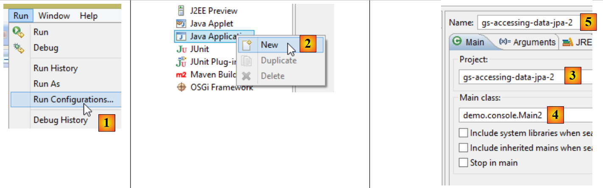 |
- in [1]: Es wird eine Ausführungskonfiguration angelegt;
- in [2]: vom Typ [Java Application]
- in [3]: gibt das auszuführende Projekt an (verwenden Sie die Schaltfläche Browse);
- in [4]: gibt die auszuführende Klasse an;
- in [5]: der Name der Ausführungskonfiguration – kann beliebig sein;
 |
- in [6]: Das Projekt wird exportiert;
- in [7]: in Form eines ausführbaren JAR-Archivs;
- in [8]: gibt den Pfad und den Namen der zu erstellenden ausführbaren Datei an;
- in [9]: den Namen der in [5] erstellten Ausführungskonfiguration;
Anschließend öffnen wir eine Konsole in dem Ordner, der das ausführbare Archiv enthält:
Das Archiv wird wie folgt ausgeführt:
.....\dist>java -jar gs-accessing-data-jpa-2.jar
Die in der Konsole angezeigten Ergebnisse lauten wie folgt:
2.2.7. Ein neues Spring-Data-Projekt erstellen
Um ein Spring-Data-Projektgerüst zu erstellen, kann man wie folgt vorgehen:
 |
- In [1] wird ein neues Projekt erstellt;
- in [2]: vom Typ [Spring Starter Project];
- Das generierte Projekt ist ein Maven-Projekt. In [3] gibt man den Namen der Projektgruppe an;
- in [4]: Geben Sie den Namen des Artefakts (hier eine JAR-Datei) an, das beim Erstellen des Projekts generiert wird;
- in [5]: Geben Sie das Paket der ausführbaren Klasse an, die im Projekt erstellt wird;
- in [6]: der Eclipse-Name des Projekts – kann beliebig sein (muss nicht mit [4] übereinstimmen);
- in [7]: Es wird angegeben, dass ein Projekt mit einer Ebene [JPA] erstellt werden soll. Die für ein solches Projekt erforderlichen Abhängigkeiten werden dann in die Datei [pom.xml] aufgenommen;
 |
- in [8]: das erstellte Projekt;
Die Datei „[pom.xml]“ enthält die für ein Projekt „JPA“ erforderlichen Abhängigkeiten:
<parent>
<groupId>org.springframework.boot</groupId>
<artifactId>spring-boot-starter-parent</artifactId>
<version>1.1.0.RELEASE</version>
<relativePath/> <!-- Übergeordnetes Element aus dem Repository abrufen -->
</parent>
<dependencies>
<dependency>
<groupId>org.springframework.boot</groupId>
<artifactId>spring-boot-starter-data-jpa</artifactId>
</dependency>
<dependency>
<groupId>org.springframework.boot</groupId>
<artifactId>spring-boot-starter-test</artifactId>
<scope>test</scope>
</dependency>
</dependencies>
- Zeilen 9–12: Die für JPA erforderlichen Abhängigkeiten – beinhalten [Spring Data];
- Zeilen 13–17: Die erforderlichen Abhängigkeiten für die in Spring integrierten Tests JUnit;
Die ausführbare Klasse [Application] führt keine Aktion aus, ist jedoch vorkonfiguriert:
package istia.st;
import org.springframework.boot.SpringApplication;
import org.springframework.boot.autoconfigure.EnableAutoConfiguration;
import org.springframework.context.annotation.ComponentScan;
import org.springframework.context.annotation.Configuration;
@Configuration
@ComponentScan
@EnableAutoConfiguration
public class Application {
public static void main(String[] args) {
SpringApplication.run(Application.class, args);
}
}
Die Testklasse [ApplicationTests] führt keine Aktion aus, ist jedoch vorkonfiguriert:
package istia.st;
import org.junit.Test;
import org.junit.runner.RunWith;
import org.springframework.boot.test.SpringApplicationConfiguration;
import org.springframework.test.context.junit4.SpringJUnit4ClassRunner;
@RunWith(SpringJUnit4ClassRunner.class)
@SpringApplicationConfiguration(classes = Application.class)
public class ApplicationTests {
@Test
public void contextLoads() {
}
}
- Zeile 9: Die Annotation [@SpringApplicationConfiguration] ermöglicht die Nutzung der Konfigurationsdatei [Application]. Die Testklasse profitiert somit von allen Beans, die in dieser Datei definiert sind;
- Zeile 8: Die Annotation [@RunWith] ermöglicht die Integration von Spring mit JUnit: Die Klasse kann somit als JUnit-Test ausgeführt werden. [@RunWith] ist eine Annotation JUnit (Zeile 4), während die Klasse [SpringJUnit4ClassRunner] eine Spring-Klasse ist (Zeile 6);
Da wir nun über ein Anwendungsgerüst JPA verfügen, können wir es vervollständigen, um die Persistenzschicht unseres Terminverwaltungs-Projekts zu implementieren.
2.3. Das Eclipse-Projekt des Servers
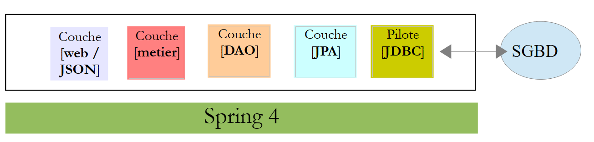 |
 |
Die wichtigsten Elemente des Projekts sind folgende:
- [pom.xml]: Maven-Konfigurationsdatei des Projekts;
- [rdvmedecins.entities]: die Entitäten JPA;
- [rdvmedecins.repositories]: die Spring-Data-Schnittstellen für den Zugriff auf die Entitäten JPA;
- [rdvmedecins.metier]: die Schicht [métier];
- [rdvmedecins.domain]: die von der Schicht verarbeiteten Entitäten [métier];
- [rdvmdecins.config]: die Konfigurationsklassen der Persistenzschicht;
- [rdvmedecins.boot]: eine einfache Konsolenanwendung;
2.4. Die Maven-Konfiguration
 |  |  |
Die Datei [pom.xml] des Projekts sieht wie folgt aus:
<?xml version="1.0" encoding="UTF-8"?>
<project xmlns="http://maven.apache.org/POM/4.0.0" xsi:schemaLocation="http://maven.apache.org/POM/4.0.0 http://maven.apache.org/maven-v4_0_0.xsd"
xmlns:xsi="http://www.w3.org/2001/XMLSchema-instance">
<modelVersion>4.0.0</modelVersion>
<groupId>istia.st.spring4.rdvmedecins</groupId>
<artifactId>rdvmedecins-metier-dao</artifactId>
<version>0.0.1-SNAPSHOT</version>
<parent>
<groupId>org.springframework.boot</groupId>
<artifactId>spring-boot-starter-parent</artifactId>
<version>1.0.0.RELEASE</version>
</parent>
<dependencies>
<dependency>
<groupId>org.springframework.boot</groupId>
<artifactId>spring-boot-starter-data-jpa</artifactId>
</dependency>
<dependency>
<groupId>org.springframework.boot</groupId>
<artifactId>spring-boot-starter-test</artifactId>
<scope>test</scope>
</dependency>
<dependency>
<groupId>mysql</groupId>
<artifactId>mysql-connector-java</artifactId>
</dependency>
<dependency>
<groupId>commons-dbcp</groupId>
<artifactId>commons-dbcp</artifactId>
</dependency>
<dependency>
<groupId>commons-pool</groupId>
<artifactId>commons-pool</artifactId>
</dependency>
<dependency>
<groupId>com.fasterxml.jackson.core</groupId>
<artifactId>jackson-databind</artifactId>
</dependency>
<dependency>
<groupId>com.google.guava</groupId>
<artifactId>guava</artifactId>
<version>16.0.1</version>
</dependency>
</dependencies>
<properties>
<!-- Verwende UTF-8 für alles -->
<project.build.sourceEncoding>UTF-8</project.build.sourceEncoding>
<project.reporting.outputEncoding>UTF-8</project.reporting.outputEncoding>
<start-class>istia.st.spring.data.main.Application</start-class>
</properties>
<build>
<plugins>
<plugin>
<artifactId>maven-compiler-plugin</artifactId>
</plugin>
<plugin>
<groupId>org.springframework.boot</groupId>
<artifactId>spring-boot-maven-plugin</artifactId>
</plugin>
</plugins>
</build>
<repositories>
<repository>
<id>spring-milestones</id>
<name>Spring Milestones</name>
<url>http://repo.spring.io/libs-milestone</url>
<snapshots>
<enabled>false</enabled>
</snapshots>
</repository>
<repository>
<id>org.jboss.repository.releases</id>
<name>JBoss Maven Release Repository</name>
<url>https://repository.jboss.org/nexus/content/repositories/releases</url>
<snapshots>
<enabled>false</enabled>
</snapshots>
</repository>
</repositories>
<pluginRepositories>
<pluginRepository>
<id>spring-milestones</id>
<name>Spring Milestones</name>
<url>http://repo.spring.io/libs-milestone</url>
<snapshots>
<enabled>false</enabled>
</snapshots>
</pluginRepository>
</pluginRepositories>
</project>
- Zeilen 8–12: Das Projekt basiert auf dem übergeordneten Projekt [spring-boot-starter-parent]. Für Abhängigkeiten, die bereits im übergeordneten Projekt vorhanden sind, wird keine Version angegeben. Es wird die im übergeordneten Projekt definierte Version verwendet. Die übrigen Abhängigkeiten werden wie gewohnt deklariert;
- Zeilen 14–17: für Spring Data;
- Zeilen 18–22: für die Tests JUnit;
- Zeilen 23–26: Treiber JDBC für SGBD und MySQL5;
- Zeilen 27–34: Commons-Verbindungspool DBCP;
- Zeilen 35–38: Jackson-Bibliothek zur Verwaltung von JSON;
- Zeilen 39–43: Google-Bibliothek zur Verwaltung von Sammlungen;
Die Version 1.1.0.RC1 von [spring-boot-starter-parent] verwendet die folgenden Versionen der Bibliotheken:
2.5. Die Entitäten JPA
 |
Die Entitäten JPA sind die Objekte, die die Zeilen der Datenbanktabellen kapseln werden.
 |
Die Klasse [AbstractEntity] ist die übergeordnete Klasse der Entitäten [Personne, Creneau, Rv]. Ihre Definition lautet wie folgt:
package rdvmedecins.entities;
import java.io.Serializable;
import javax.persistence.GeneratedValue;
import javax.persistence.GenerationType;
import javax.persistence.Id;
import javax.persistence.MappedSuperclass;
import javax.persistence.Version;
@MappedSuperclass
public class AbstractEntity implements Serializable {
private static final long serialVersionUID = 1L;
@Id
@GeneratedValue(strategy = GenerationType.AUTO)
protected Long id;
@Version
protected Long version;
@Override
public int hashCode() {
int hash = 0;
hash += (id != null ? id.hashCode() : 0);
return hash;
}
// Initialisierung
public AbstractEntity build(Long id, Long version) {
this.id = id;
this.version = version;
return this;
}
@Override
public boolean equals(Object entity) {
String class1 = this.getClass().getName();
String class2 = entity.getClass().getName();
if (!class2.equals(class1)) {
return false;
}
AbstractEntity other = (AbstractEntity) entity;
return this.id == other.id;
}
// Getter und Setter
..
}
- Zeile 11: Die Annotation [@MappedSuperclass] gibt an, dass die annotierte Klasse die übergeordnete Klasse der Entitäten JPA und [@Entity] ist;
- Zeilen 15–17: Definieren den Primärschlüssel [id] für jede Entität. Durch die Annotation [@Id] wird das Feld [id] zum Primärschlüssel. Die Anmerkung [@GeneratedValue(strategy = GenerationType.AUTO)] gibt an, dass der Wert dieses Primärschlüssels durch SGBD generiert wird und dass kein Generierungsmodus vorgeschrieben ist;
- Zeilen 18–19: Definieren die Version jeder Entität. Die Implementierung JPA erhöht diese Versionsnummer jedes Mal, wenn die Entität geändert wird. Diese Nummer dient dazu, die gleichzeitige Aktualisierung der Entität durch zwei verschiedene Benutzer zu verhindern: Zwei Benutzer, U1 und U2, lesen die Entität E mit einer Versionsnummer gleich V1. U1 ändert E und speichert diese Änderung in der Datenbank: Die Versionsnummer ändert sich daraufhin zu V1+1. U2 ändert seinerseits E und speichert diese Änderung in der Datenbank: Es wird eine Ausnahme ausgelöst, da seine Versionsnummer (V1) von der in der Datenbank gespeicherten (V1+1) abweicht;
- Zeilen 29–33: Die Methode [build] dient dazu, die beiden Felder von [AbstractEntity] zu initialisieren. Diese Methode gibt die Referenz der so initialisierten Instanz [AbstractEntity] zurück;
- Zeilen 36–44: Die Methode [equals] der Klasse wird neu definiert: Zwei Entitäten gelten als gleich, wenn sie denselben Klassennamen und dieselbe ID haben;
Die Entität [Personne] ist die übergeordnete Klasse der Entitäten [Medecin] und [Client]:
package rdvmedecins.entities;
import javax.persistence.Column;
import javax.persistence.MappedSuperclass;
@MappedSuperclass
public class Personne extends AbstractEntity {
private static final long serialVersionUID = 1L;
// Attribute einer Person
@Column(length = 5)
private String titre;
@Column(length = 20)
private String nom;
@Column(length = 20)
private String prenom;
// Standardkonstruktor
public Personne() {
}
// Konstruktor mit Parametern
public Personne(String titre, String nom, String prenom) {
this.titre = titre;
this.nom = nom;
this.prenom = prenom;
}
// toString
public String toString() {
return String.format("Personne[%s, %s, %s, %s, %s]", id, version, titre, nom, prenom);
}
// Getter und Setter
...
}
- Zeile 6: Die Annotation [@MappedSuperclass] gibt an, dass die annotierte Klasse die übergeordnete Klasse der Entitäten JPA und [@Entity] ist;
- Zeilen 10–15: Eine Person hat einen Titel (Melle), einen Vornamen (Jacqueline) und einen Nachnamen (Tatou). Zu den Spalten der Tabelle werden keine Angaben gemacht. Sie tragen daher standardmäßig dieselben Namen wie die Felder;
Die Entität [Medecin] lautet wie folgt:
package rdvmedecins.entities;
import javax.persistence.Entity;
import javax.persistence.Table;
@Entity
@Table(name = "medecins")
public class Medecin extends Personne {
private static final long serialVersionUID = 1L;
// Standardkonstruktor
public Medecin() {
}
// Konstruktor mit Parametern
public Medecin(String titre, String nom, String prenom) {
super(titre, nom, prenom);
}
public String toString() {
return String.format("Medecin[%s]", super.toString());
}
}
- Zeile 6: Die Klasse ist eine Entität JPA;
- Zeile 7: zugeordnet zur Tabelle [MEDECINS] in der Datenbank;
- Zeile 8: Die Entität [Medecin] leitet sich von der Entität [Personne] ab;
Ein Arzt könnte wie folgt initialisiert werden:
Wenn man ihm darüber hinaus eine Kennung und eine Version zuweisen möchte, kann man schreiben:
wobei die Methode [build] die in [AbstractEntity] definierte ist.
Die Entität [Client] lautet wie folgt:
package rdvmedecins.entities;
import javax.persistence.Entity;
import javax.persistence.Table;
@Entity
@Table(name = "clients")
public class Client extends Personne {
private static final long serialVersionUID = 1L;
// Standardkonstruktor
public Client() {
}
// Konstruktor mit Parametern
public Client(String titre, String nom, String prenom) {
super(titre, nom, prenom);
}
// Identität
public String toString() {
return String.format("Client[%s]", super.toString());
}
}
- Zeile 6: Die Klasse ist eine Entität JPA;
- Zeile 7: zugeordnet zur Tabelle [CLIENTS] der Datenbank;
- Zeile 8: Die Entität [Client] leitet sich von der Entität [Personne] ab;
Die Entität [Creneau] lautet wie folgt:
package rdvmedecins.entities;
import javax.persistence.Column;
import javax.persistence.Entity;
import javax.persistence.FetchType;
import javax.persistence.JoinColumn;
import javax.persistence.ManyToOne;
import javax.persistence.Table;
@Entity
@Table(name = "creneaux")
public class Creneau extends AbstractEntity {
private static final long serialVersionUID = 1L;
// Merkmale eines Termins von RV
private int hdebut;
private int mdebut;
private int hfin;
private int mfin;
// Ein Termin ist mit einem Arzt verknüpft
@ManyToOne(fetch = FetchType.LAZY)
@JoinColumn(name = "id_medecin")
private Medecin medecin;
// Fremdschlüssel
@Column(name = "id_medecin", insertable = false, updatable = false)
private long idMedecin;
// Standardkonstruktor
public Creneau() {
}
// Konstruktor mit Parametern
public Creneau(Medecin medecin, int hdebut, int mdebut, int hfin, int mfin) {
this.medecin = medecin;
this.hdebut = hdebut;
this.mdebut = mdebut;
this.hfin = hfin;
this.mfin = mfin;
}
// toString
public String toString() {
return String.format("Créneau[%d, %d, %d, %d:%d, %d:%d]", id, version, idMedecin, hdebut, mdebut, hfin, mfin);
}
// Fremdschlüssel
public long getIdMedecin() {
return idMedecin;
}
// Setter – Getter
...
}
- Zeile 10: Die Klasse ist eine Entität JPA;
- Zeile 11: zugeordnet zur Tabelle [CRENEAUX] der Datenbank;
- Zeile 12: Die Entität [Creneau] leitet sich von der Entität [AbstractEntity] ab und erbt somit die Kennung [id] und die Version [version];
- Zeile 16: Startzeit des Zeitfensters (14);
- Zeile 17: Startminute des Zeitfensters (20);
- Zeile 18: Endzeit des Zeitfensters (14);
- Zeile 19: Endminuten des Zeitfensters (40);
- Zeilen 22–24: der Arzt, dem der Terminblock gehört. Die Tabelle [CRENEAUX] hat einen Fremdschlüssel auf die Tabelle [MEDECINS]. Diese Beziehung wird durch die Zeilen 22–24 dargestellt;
- Zeile 22: Die Anmerkung [@ManyToOne] kennzeichnet eine Beziehung von mehreren (Terminfenstern) zu einem (Arzt). Das Attribut [fetch=FetchType.LAZY] gibt an, dass bei einer Abfrage einer Entität [Creneau] aus dem Persistenzkontext, die in der Datenbank gesucht werden muss, die Entität [Medecin] nicht mitgeliefert wird. Der Vorteil dieses Modus besteht darin, dass die Entität [Medecin] nur dann abgerufen wird, wenn der Entwickler dies anfordert. Dadurch wird Speicherplatz gespart und die Leistung gesteigert;
- Zeile 23: gibt den Namen der Fremdschlüsselspalte in der Tabelle [CRENEAUX] an;
- Zeilen 27–28: Der Fremdschlüssel in der Tabelle [MEDECINS];
- Zeile 27: Die Spalte [ID_MEDECIN] wurde bereits in Zeile 23 verwendet. Das bedeutet, dass sie auf zwei verschiedene Arten geändert werden kann, was der Standard JPA nicht zulässt. Daher werden die Attribute [insertable = false, updatable = false] hinzugefügt, wodurch die Spalte nur noch gelesen werden kann;
Die Entität [Rv] lautet wie folgt:
package rdvmedecins.entities;
import java.util.Date;
import javax.persistence.Column;
import javax.persistence.Entity;
import javax.persistence.FetchType;
import javax.persistence.JoinColumn;
import javax.persistence.ManyToOne;
import javax.persistence.Table;
import javax.persistence.Temporal;
import javax.persistence.TemporalType;
@Entity
@Table(name = "rv")
public class Rv extends AbstractEntity {
private static final long serialVersionUID = 1L;
// Eigenschaften eines Rv
@Temporal(TemporalType.DATE)
private Date jour;
// Ein RV ist mit einem Kunden verknüpft
@ManyToOne(fetch = FetchType.LAZY)
@JoinColumn(name = "id_client")
private Client client;
// Ein RV ist mit einem Termin verbunden
@ManyToOne(fetch = FetchType.LAZY)
@JoinColumn(name = "id_creneau")
private Creneau creneau;
// Fremdschlüssel
@Column(name = "id_client", insertable = false, updatable = false)
private long idClient;
@Column(name = "id_creneau", insertable = false, updatable = false)
private long idCreneau;
// Standardhersteller
public Rv() {
}
// mit Parametern
public Rv(Date jour, Client client, Creneau creneau) {
this.jour = jour;
this.client = client;
this.creneau = creneau;
}
// toString
public String toString() {
return String.format("Rv[%d, %s, %d, %d]", id, jour, client.id, creneau.id);
}
// Fremdschlüssel
public long getIdCreneau() {
return idCreneau;
}
public long getIdClient() {
return idClient;
}
// Getter und Setter
...
}
- Zeile 14: Die Klasse ist eine Entität JPA;
- Zeile 15: zugeordnet zur Tabelle [RV] der Datenbank;
- Zeile 16: Die Entität [Rv] leitet sich von der Entität [AbstractEntity] ab und erbt somit die Kennung [id] und die Version [version];
- Zeile 21: das Datum des Termins;
- Zeile 20: Der Java-Typ [Date] enthält sowohl ein Datum als auch eine Uhrzeit. Hier wird festgelegt, dass nur das Datum verwendet wird;
- Zeilen 24–26: der Kunde, für den dieser Termin vereinbart wurde. Die Tabelle [RV] verfügt über einen Fremdschlüssel auf die Tabelle [CLIENTS]. Diese Beziehung wird durch die Zeilen 24–26 dargestellt;
- Zeilen 29–31: das Zeitfenster des Termins. Die Tabelle [RV] verfügt über einen Fremdschlüssel auf die Tabelle [CRENEAUX]. Diese Beziehung wird durch die Zeilen 29–31 dargestellt;
- Zeilen 34–35: der Fremdschlüssel [idClient];
- Zeilen 36–37: der Fremdschlüssel [idCreneau];
2.6. Die Ebene [DAO]
 |
Wir werden die Schicht [DAO] mit Spring Data implementieren:
 |
Die Schicht [DAO] wird mit vier Spring-Data-Schnittstellen implementiert:
- [ClientRepository]: ermöglicht den Zugriff auf die Entitäten JPA und [Client];
- [CreneauRepository]: gewährt Zugriff auf die Entitäten JPA und [Creneau];
- [MedecinRepository]: gewährt Zugriff auf die Entitäten JPA und [Medecin];
- [RvRepository]: gewährt Zugriff auf die Entitäten JPA und [Rv];
Die Schnittstelle [MedecinRepository] sieht wie folgt aus:
package rdvmedecins.repositories;
import org.springframework.data.repository.CrudRepository;
import rdvmedecins.entities.Medecin;
public interface MedecinRepository extends CrudRepository<Medecin, Long> {
}
- Zeile 7: Die Schnittstelle [MedecinRepository] übernimmt lediglich die Methoden der Schnittstelle [CrudRepository], ohne weitere hinzuzufügen;
Die Schnittstelle [ClientRepository] lautet wie folgt:
package rdvmedecins.repositories;
import org.springframework.data.repository.CrudRepository;
import rdvmedecins.entities.Client;
public interface ClientRepository extends CrudRepository<Client, Long> {
}
- Zeile 7: Die Schnittstelle [ClientRepository] übernimmt lediglich die Methoden der Schnittstelle [CrudRepository], ohne weitere hinzuzufügen;
Die Schnittstelle [CreneauRepository] lautet wie folgt:
package rdvmedecins.repositories;
import org.springframework.data.jpa.repository.Query;
import org.springframework.data.repository.CrudRepository;
import rdvmedecins.entities.Creneau;
public interface CreneauRepository extends CrudRepository<Creneau, Long> {
// Liste der Sprechzeiten eines Arztes
@Query("select c from Creneau c where c.medecin.id=?1")
Iterable<Creneau> getAllCreneaux(long idMedecin);
}
- Zeile 8: Die Schnittstelle [CreneauRepository] erbt die Methoden der Schnittstelle [CrudRepository];
- Zeilen 10–11: Die Methode [getAllCreneaux] ermöglicht es, die Terminfenster eines Arztes abzurufen;
- Zeile 11: Der Parameter ist die ID des Arztes. Das Ergebnis ist eine Liste der Zeitfenster in Form eines Objekts vom Typ [Iterable<Creneau>];
- Zeile 10: Mit der Anmerkung [@Query] lässt sich die Abfrage JPQL (Java Persistence Query Language) angeben, die die Methode implementiert. Der Parameter [?1] wird durch den Parameter [idMedecin] der Methode ersetzt;
Die Schnittstelle [RvRepository] lautet wie folgt:
package rdvmedecins.repositories;
import java.util.Date;
import org.springframework.data.jpa.repository.Query;
import org.springframework.data.repository.CrudRepository;
import rdvmedecins.entities.Rv;
public interface RvRepository extends CrudRepository<Rv, Long> {
@Query("select rv from Rv rv left join fetch rv.client c left join fetch rv.creneau cr where cr.medecin.id=?1 and rv.jour=?2")
Iterable<Rv> getRvMedecinJour(long idMedecin, Date jour);
}
- Zeile 10: Die Schnittstelle [RvRepository] erbt die Methoden der Schnittstelle [CrudRepository];
- Zeilen 12–13: Mit der Methode [getRvMedecinJour] lassen sich die Termine eines Arztes für einen bestimmten Tag abrufen;
- Zeile 13: Die Parameter sind die ID des Arztes und der Tag. Das Ergebnis ist eine Liste von Terminen in Form eines Objekts vom Typ [Iterable<Rv>];
- Zeile 12: Mit der Anmerkung [@Query] lässt sich die Abfrage JPQL angeben, die die Methode implementiert. Der Parameter [?1] wird durch den Parameter [idMedecin] der Methode ersetzt, und der Parameter [?2] wird durch den Parameter [jour] der Methode ersetzt. Die folgende Abfrage JPQL reicht nicht aus:
da die Felder der Klasse Rv vom Typ [Client] und [Creneau] im Modus [FetchType.LAZY] abgerufen werden, was bedeutet, dass sie explizit angefordert werden müssen, um abgerufen zu werden. Dies geschieht in der Abfrage JPQL mit der Syntax [left join fetch entité], die eine Verknüpfung mit der Tabelle anfordert, auf die der Fremdschlüssel verweist, um die betreffende Entität abzurufen;
2.7. Die Ebene [métier]
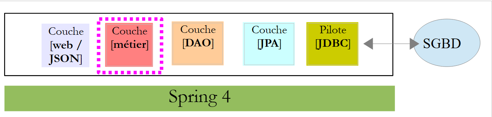 |
 |
- [IMetier] ist die Schnittstelle der Schicht [métier], und [Metier] ist deren Implementierung;
- [AgendaMedecinJour] und [CreneauMedecinJour] sind zwei Geschäftseinheiten;
2.7.1. Die Entitäten
Die Entität [CreneauMedecinJour] verknüpft ein Zeitfenster mit dem gegebenenfalls in diesem Zeitfenster vereinbarten Termin:
package rdvmedecins.domain;
import java.io.Serializable;
import rdvmedecins.entities.Creneau;
import rdvmedecins.entities.Rv;
public class CreneauMedecinJour implements Serializable {
private static final long serialVersionUID = 1L;
// Felder
private Creneau creneau;
private Rv rv;
// Konstruktoren
public CreneauMedecinJour() {
}
public CreneauMedecinJour(Creneau creneau, Rv rv) {
this.creneau=creneau;
this.rv=rv;
}
// toString
@Override
public String toString() {
return String.format("[%s %s]", creneau, rv);
}
// Getter und Setter
...
}
- Zeile 12: das Zeitfenster;
- Zeile 13: der eventuelle Termin – andernfalls null;
Die Entität [AgendaMedecinJour] ist der Terminkalender eines Arztes für einen bestimmten Tag, d. h. die Liste seiner Termine:
package rdvmedecins.domain;
import java.io.Serializable;
import java.text.SimpleDateFormat;
import java.util.Date;
import rdvmedecins.entities.Medecin;
public class AgendaMedecinJour implements Serializable {
private static final long serialVersionUID = 1L;
// Felder
private Medecin medecin;
private Date jour;
private CreneauMedecinJour[] creneauxMedecinJour;
// Konstruktoren
public AgendaMedecinJour() {
}
public AgendaMedecinJour(Medecin medecin, Date jour, CreneauMedecinJour[] creneauxMedecinJour) {
this.medecin = medecin;
this.jour = jour;
this.creneauxMedecinJour = creneauxMedecinJour;
}
public String toString() {
StringBuffer str = new StringBuffer("");
for (CreneauMedecinJour cr : creneauxMedecinJour) {
str.append(" ");
str.append(cr.toString());
}
return String.format("Agenda[%s,%s,%s]", medecin, new SimpleDateFormat("dd/MM/yyyy").format(jour), str.toString());
}
// Getter und Setter
...
}
- Zeile 13: der Arzt;
- Zeile 14: der Tag im Terminkalender;
- Zeile 15: seine Zeitfenster mit oder ohne Termine;
2.7.2. Der Dienst
Die Schnittstelle der Schicht [métier] sieht wie folgt aus:
package rdvmedecins.metier;
import java.util.Date;
import java.util.List;
import rdvmedecins.domain.AgendaMedecinJour;
import rdvmedecins.entities.Client;
import rdvmedecins.entities.Creneau;
import rdvmedecins.entities.Medecin;
import rdvmedecins.entities.Rv;
public interface IMetier {
// Kundenliste
public List<Client> getAllClients();
// Liste der Ärzte
public List<Medecin> getAllMedecins();
// Liste der Terminfenster eines Arztes
public List<Creneau> getAllCreneaux(long idMedecin);
// Liste der Termine eines Arztes an einem bestimmten Tag
public List<Rv> getRvMedecinJour(long idMedecin, Date jour);
// einen Kunden anhand seiner ID suchen
public Client getClientById(long id);
// einen Kunden anhand seiner ID suchen
public Medecin getMedecinById(long id);
// einen Termin anhand seiner ID suchen
public Rv getRvById(long id);
// einen Terminblock anhand seiner ID suchen
public Creneau getCreneauById(long id);
// einen RV hinzufügen
public Rv ajouterRv(Date jour, Creneau créneau, Client client);
// einen RV löschen
public void supprimerRv(Rv rv);
// Beruf
public AgendaMedecinJour getAgendaMedecinJour(long idMedecin, Date jour);
}
Die Kommentare erläutern die Funktion der einzelnen Methoden.
Die Implementierung der Schnittstelle [IMetier] erfolgt durch die folgende Klasse [Metier]:
package rdvmedecins.metier;
import java.util.Date;
import java.util.Hashtable;
import java.util.List;
import java.util.Map;
import org.springframework.beans.factory.annotation.Autowired;
import org.springframework.stereotype.Service;
import rdvmedecins.domain.AgendaMedecinJour;
import rdvmedecins.domain.CreneauMedecinJour;
import rdvmedecins.entities.Client;
import rdvmedecins.entities.Creneau;
import rdvmedecins.entities.Medecin;
import rdvmedecins.entities.Rv;
import rdvmedecins.repositories.ClientRepository;
import rdvmedecins.repositories.CreneauRepository;
import rdvmedecins.repositories.MedecinRepository;
import rdvmedecins.repositories.RvRepository;
import com.google.common.collect.Lists;
@Service("métier")
public class Metier implements IMetier {
// Repositorys
@Autowired
private MedecinRepository medecinRepository;
@Autowired
private ClientRepository clientRepository;
@Autowired
private CreneauRepository creneauRepository;
@Autowired
private RvRepository rvRepository;
// Implementierung der Schnittstelle
@Override
public List<Client> getAllClients() {
return Lists.newArrayList(clientRepository.findAll());
}
@Override
public List<Medecin> getAllMedecins() {
return Lists.newArrayList(medecinRepository.findAll());
}
@Override
public List<Creneau> getAllCreneaux(long idMedecin) {
return Lists.newArrayList(creneauRepository.getAllCreneaux(idMedecin));
}
@Override
public List<Rv> getRvMedecinJour(long idMedecin, Date jour) {
return Lists.newArrayList(rvRepository.getRvMedecinJour(idMedecin, jour));
}
@Override
public Client getClientById(long id) {
return clientRepository.findOne(id);
}
@Override
public Medecin getMedecinById(long id) {
return medecinRepository.findOne(id);
}
@Override
public Rv getRvById(long id) {
return rvRepository.findOne(id);
}
@Override
public Creneau getCreneauById(long id) {
return creneauRepository.findOne(id);
}
@Override
public Rv ajouterRv(Date jour, Creneau créneau, Client client) {
return rvRepository.save(new Rv(jour, client, créneau));
}
@Override
public void supprimerRv(Rv rv) {
rvRepository.delete(rv.getId());
}
public AgendaMedecinJour getAgendaMedecinJour(long idMedecin, Date jour) {
...
}
}
- Zeile 24: Die Annotation [@Service] ist eine Spring-Annotation, die die annotierte Klasse zu einer von Spring verwalteten Komponente macht. Eine Komponente kann benannt werden oder auch nicht. Diese trägt den Namen [métier];
- Zeile 25: Die Klasse [Metier] implementiert die Schnittstelle [IMetier];
- Zeile 28: Die Annotation [@Autowired] ist eine Spring-Annotation. Der Wert des so annotierten Feldes wird von Spring mit der Referenz einer Spring-Komponente des angegebenen Typs oder Namens initialisiert (injiziert). Hier gibt die Annotation [@Autowired] keinen Namen an. Es erfolgt daher eine Typinjektion;
- Zeile 29: Das Feld [medecinRepository] wird mit der Referenz einer Spring-Komponente vom Typ [MedecinRepository] initialisiert. Dabei handelt es sich um die Referenz der von Spring Data generierten Klasse zur Implementierung der Schnittstelle [MedecinRepository], die wir bereits vorgestellt haben;
- Zeilen 30–35: Dieser Vorgang wird für die drei anderen untersuchten Schnittstellen wiederholt;
- Zeilen 39–41: Implementierung der Methode [getAllClients];
- Zeile 40: Wir verwenden die Methode [findAll] der Schnittstelle [ClientRepository]. Diese Methode gibt einen Typ [Iterable<Client>] zurück, den wir mit der statischen Methode [Lists.newArrayList] in [List<Client>] umwandeln. Die Klasse [Lists] ist in der Google Guava-Bibliothek definiert. In [pom.xml] wurde diese Abhängigkeit importiert:
<dependency>
<groupId>com.google.guava</groupId>
<artifactId>guava</artifactId>
<version>16.0.1</version>
</dependency>
- Zeilen 38–86: Die Methoden der Schnittstelle [IMetier] werden mithilfe der Klassen der Schicht [DAO] implementiert;
Nur die Methode in Zeile 88 ist spezifisch für die Schicht [métier]. Sie wurde hier platziert, da sie eine fachliche Verarbeitung durchführt, die über einen einfachen Datenzugriff hinausgeht. Ohne diese Methode hätte es keinen Grund gegeben, eine Schicht [métier] anzulegen. Die Methode [getAgendaMedecinJour] lautet wie folgt:
public AgendaMedecinJour getAgendaMedecinJour(long idMedecin, Date jour) {
// Liste der Terminfenster des Arztes
List<Creneau> creneauxHoraires = getAllCreneaux(idMedecin);
// Liste der Termine dieses Arztes für denselben Tag
List<Rv> reservations = getRvMedecinJour(idMedecin, jour);
// Es wird ein Wörterbuch aus den vereinbarten Terminen erstellt
Map<Long, Rv> hReservations = new Hashtable<Long, Rv>();
for (Rv resa : reservations) {
hReservations.put(resa.getCreneau().getId(), resa);
}
// Der Terminkalender für den gewünschten Tag wird erstellt
AgendaMedecinJour agenda = new AgendaMedecinJour();
// Der Arzt
agenda.setMedecin(getMedecinById(idMedecin));
// der Tag
agenda.setJour(jour);
// die Terminfenster
CreneauMedecinJour[] creneauxMedecinJour = new CreneauMedecinJour[creneauxHoraires.size()];
agenda.setCreneauxMedecinJour(creneauxMedecinJour);
// Füllen der Terminfenster
for (int i = 0; i < creneauxHoraires.size(); i++) {
// Zeile i im Terminkalender
creneauxMedecinJour[i] = new CreneauMedecinJour();
// Zeitfenster
Creneau créneau = creneauxHoraires.get(i);
long idCreneau = créneau.getId();
creneauxMedecinJour[i].setCreneau(créneau);
// Ist das Zeitfenster frei oder reserviert?
if (hReservations.containsKey(idCreneau)) {
// Der Termin ist belegt – die Reservierung wird vermerkt
Rv resa = hReservations.get(idCreneau);
creneauxMedecinJour[i].setRv(resa);
}
}
// Das Ergebnis wird zurückgegeben
return agenda;
}
Der Leser wird gebeten, die Kommentare zu lesen. Der Algorithmus lautet wie folgt:
- Es werden alle Zeitfenster des angegebenen Arztes abgerufen;
- man ruft alle seine Termine für den angegebenen Tag ab;
- Anhand dieser beiden Informationen lässt sich feststellen, ob ein Zeitfenster frei oder belegt ist;
2.8. Die Projektkonfiguration
 |
Die Klasse [DomainAndPersitenceConfig] konfiguriert das gesamte Projekt:
package rdvmedecins.config;
import javax.sql.DataSource;
import org.apache.commons.dbcp.BasicDataSource;
import org.springframework.boot.autoconfigure.EnableAutoConfiguration;
import org.springframework.boot.orm.jpa.EntityScan;
import org.springframework.context.annotation.Bean;
import org.springframework.context.annotation.ComponentScan;
import org.springframework.data.jpa.repository.config.EnableJpaRepositories;
import org.springframework.orm.jpa.JpaVendorAdapter;
import org.springframework.orm.jpa.vendor.Database;
import org.springframework.orm.jpa.vendor.HibernateJpaVendorAdapter;
import org.springframework.transaction.annotation.EnableTransactionManagement;
@EnableJpaRepositories(basePackages = { "rdvmedecins.repositories" })
@EnableAutoConfiguration
@ComponentScan(basePackages = { "rdvmedecins" })
@EntityScan(basePackages = { "rdvmedecins.entities" })
@EnableTransactionManagement
public class DomainAndPersistenceConfig {
// die Datenquelle MySQL
@Bean
public DataSource dataSource() {
BasicDataSource dataSource = new BasicDataSource();
dataSource.setDriverClassName("com.mysql.jdbc.Driver");
dataSource.setUrl("jdbc:mysql://localhost:3306/dbrdvmedecins");
dataSource.setUsername("root");
dataSource.setPassword("");
return dataSource;
}
// Der Provider JPA – nicht erforderlich, wenn die von Spring Boot verwendeten Standardwerte ausreichend sind
// hier wird er definiert, um die Protokolle zu aktivieren/deaktivieren SQL
@Bean
public JpaVendorAdapter jpaVendorAdapter() {
HibernateJpaVendorAdapter hibernateJpaVendorAdapter = new HibernateJpaVendorAdapter();
hibernateJpaVendorAdapter.setShowSql(false);
hibernateJpaVendorAdapter.setGenerateDdl(false);
hibernateJpaVendorAdapter.setDatabase(Database.MYSQL);
return hibernateJpaVendorAdapter;
}
// EntityManagerFactory und TransactionManager werden von Spring Boot mit Standardwerten definiert
}
- Zeile 45: Wir werden die Beans [EntityManagerFactory] und [TransactionManager] nicht definieren. Stattdessen nutzen wir die Spring-Boot-Annotation [@EnableAutoConfiguration] (Zeile 17);
- Zeilen 24–32: Hier wird die Datenquelle MySQL5 definiert. Es handelt sich um eine Bean, die von Spring Boot in der Regel nicht automatisch erkannt werden kann;
- Zeilen 36–43: Wir konfigurieren außerdem die Implementierung JPA, um das Hibernate-Attribut [showSql] auf „false“ zu setzen (Zeile 39). Standardmäßig ist es auf „true“ gesetzt;
- Derzeit werden von Spring nur die Beans in den Zeilen 25 und 37 sowie die Beans [EntityManagerFactory] und [TransactionManager] per Autokonfiguration verwaltet. Wir müssen die Beans der Schichten [métier] und [DAO] hinzufügen;
- Zeile 16 fügt dem Spring-Kontext die Schnittstellen des Pakets [rdvmdecins.repositories] hinzu, die von der Schnittstelle [CrudRepository] erben;
- Zeile 18 fügt dem Spring-Kontext alle Klassen des Pakets [rdvmedecins] und deren Unterklassen hinzu, die eine Spring-Annotation aufweisen. Im Paket [rdvmdecins.metier] wird die Klasse [Metier] mit ihrer Annotation [@Service] gefunden und dem Spring-Kontext hinzugefügt;
- Zeile 45: Eine Bean namens [entityManagerFactory] wird standardmäßig von Spring Boot definiert. Dieser Bean muss angegeben werden, wo sich die Entitäten JPA befinden, die sie verwalten soll. Dies geschieht in Zeile 19;
- Zeile 20: gibt an, dass die Methoden der Schnittstellen, die von der Schnittstelle [CrudRepository] erben, innerhalb einer Transaktion ausgeführt werden müssen;
2.9. Die Tests der Schicht [métier]
Die Klasse [rdvmedecins.tests.Metier] ist eine Spring-/JUnit-Testklasse 4:
package rdvmedecins.tests;
import java.text.ParseException;
import java.util.Date;
import java.util.List;
import org.junit.Assert;
import org.junit.Test;
import org.junit.runner.RunWith;
import org.springframework.beans.factory.annotation.Autowired;
import org.springframework.boot.test.SpringApplicationConfiguration;
import org.springframework.test.context.junit4.SpringJUnit4ClassRunner;
import rdvmedecins.config.DomainAndPersistenceConfig;
import rdvmedecins.domain.AgendaMedecinJour;
import rdvmedecins.entities.Client;
import rdvmedecins.entities.Creneau;
import rdvmedecins.entities.Medecin;
import rdvmedecins.entities.Rv;
import rdvmedecins.metier.IMetier;
@SpringApplicationConfiguration(classes = DomainAndPersistenceConfig.class)
@RunWith(SpringJUnit4ClassRunner.class)
public class Metier {
@Autowired
private IMetier métier;
@Test
public void test1(){
// Kundenanzeige
List<Client> clients = métier.getAllClients();
display("Liste des clients :", clients);
// Anzeige der Ärzte
List<Medecin> medecins = métier.getAllMedecins();
display("Liste des médecins :", medecins);
// Anzeige der Termine eines Arztes
Medecin médecin = medecins.get(0);
List<Creneau> creneaux = métier.getAllCreneaux(médecin.getId());
display(String.format("Liste des créneaux du médecin %s", médecin), creneaux);
// Liste der Termine eines Arztes an einem bestimmten Tag
Date jour = new Date();
display(String.format("Liste des rv du médecin %s, le [%s]", médecin, jour), métier.getRvMedecinJour(médecin.getId(), jour));
// einen Termin hinzufügen RV
Rv rv = null;
Creneau créneau = creneaux.get(2);
Client client = clients.get(0);
System.out.println(String.format("Ajout d'un Rv le [%s] dans le créneau %s pour le client %s", jour, créneau,
client));
rv = métier.ajouterRv(jour, créneau, client);
// Überprüfung
Rv rv2 = métier.getRvById(rv.getId());
Assert.assertEquals(rv, rv2);
display(String.format("Liste des Rv du médecin %s, le [%s]", médecin, jour), métier.getRvMedecinJour(médecin.getId(), jour));
// Hinzufügen eines RV im selben Terminfenster desselben Tages
// muss eine Ausnahme auslösen
System.out.println(String.format("Ajout d'un Rv le [%s] dans le créneau %s pour le client %s", jour, créneau,
client));
Boolean erreur = false;
try {
rv = métier.ajouterRv(jour, créneau, client);
System.out.println("Rv ajouté");
} catch (Exception ex) {
Throwable th = ex;
while (th != null) {
System.out.println(ex.getMessage());
th = th.getCause();
}
// Der Fehler wird vermerkt
erreur = true;
}
// Es wird überprüft, ob ein Fehler aufgetreten ist
Assert.assertTrue(erreur);
// Liste der RV
display(String.format("Liste des Rv du médecin %s, le [%s]", médecin, jour), métier.getRvMedecinJour(médecin.getId(), jour));
// Kalender anzeigen
AgendaMedecinJour agenda = métier.getAgendaMedecinJour(médecin.getId(), jour);
System.out.println(agenda);
Assert.assertEquals(rv, agenda.getCreneauxMedecinJour()[2].getRv());
// einen RV löschen
System.out.println("Suppression du Rv ajouté");
métier.supprimerRv(rv);
// Überprüfung
rv2 = métier.getRvById(rv.getId());
Assert.assertNull(rv2);
display(String.format("Liste des Rv du médecin %s, le [%s]", médecin, jour), métier.getRvMedecinJour(médecin.getId(), jour));
}
// Hilfsfunktion – zeigt die Elemente einer Sammlung an
private void display(String message, Iterable<?> elements) {
System.out.println(message);
for (Object element : elements) {
System.out.println(element);
}
}
}
- Zeile 22: Die Annotation [@SpringApplicationConfiguration] ermöglicht die Nutzung der zuvor behandelten Konfigurationsdatei [DomainAndPersistenceConfig]. Die Testklasse profitiert somit von allen in dieser Datei definierten Beans;
- Zeile 23: Die Annotation [@RunWith] ermöglicht die Integration von Spring mit JUnit: Die Klasse kann nun als JUnit-Test ausgeführt werden. [@RunWith] ist eine Annotation JUnit (Zeile 9), während die Klasse [SpringJUnit4ClassRunner] eine Spring-Klasse ist (Zeile 12);
- Zeilen 26–27: Einfügen einer Referenz auf die Schicht [métier] in die Testklasse;
- Viele Tests sind lediglich visuelle Tests:
- Zeilen 32–33: Liste der Kunden;
- Zeilen 35–36: Liste der Ärzte;
- Zeilen 39–40: Liste der Termine eines Arztes;
- Zeile 43: Liste der Termine eines Arztes;
- Zeile 50: Hinzufügen eines neuen Termins. Die Methode [ajouterRv] gibt den Termin mit einer zusätzlichen Information zurück, nämlich seinem Primärschlüssel „id“;
- Zeile 53: Dieser Primärschlüssel wird verwendet, um den Termin in der Datenbank zu suchen;
- Zeile 54: Es wird überprüft, ob der gesuchte und der gefundene Termin identisch sind. Zur Erinnerung: Die Methode [equals] der Entität [Rv] wurde neu definiert: Zwei Termine sind gleich, wenn sie dieselbe ID haben. Hier zeigt sich, dass der hinzugefügte Termin tatsächlich in die Datenbank übernommen wurde;
- Zeilen 61–73: Es wird versucht, denselben Termin ein zweites Mal hinzuzufügen. Dies muss von SGBD abgelehnt werden, da eine Eindeutigkeitsbeschränkung besteht:
CREATE TABLE IF NOT EXISTS `rv` (
`ID` bigint(20) NOT NULL AUTO_INCREMENT,
`JOUR` date NOT NULL,
`ID_CLIENT` bigint(20) NOT NULL,
`ID_CRENEAU` bigint(20) NOT NULL,
`VERSION` int(11) NOT NULL DEFAULT '0',
PRIMARY KEY (`ID`),
UNIQUE KEY `UNQ1_RV` (`JOUR`,`ID_CRENEAU`),
KEY `FK_RV_ID_CRENEAU` (`ID_CRENEAU`),
KEY `FK_RV_ID_CLIENT` (`ID_CLIENT`)
) ENGINE=InnoDB DEFAULT CHARSET=utf8 COLLATE=utf8_swedish_ci AUTO_INCREMENT=60 ;
Zeile 8 oben gibt an, dass die Kombination [JOUR, ID_CRENEAU] eindeutig sein muss, was verhindert, dass zwei Termine am selben Tag in denselben Zeitblock eingefügt werden.
- Zeile 73: Es wird überprüft, ob tatsächlich eine Ausnahme aufgetreten ist;
- Zeile 77: Der Terminkalender des Arztes, für den gerade ein Termin hinzugefügt wurde, wird abgefragt;
- Zeile 79: Es wird überprüft, ob der hinzugefügte Termin tatsächlich im Terminkalender des Arztes vorhanden ist;
- Zeile 82: Der hinzugefügte Termin wird gelöscht;
- Zeile 84: Der gelöschte Termin wird aus der Datenbank abgerufen;
- Zeile 85: Es wird überprüft, ob ein Zeiger null abgerufen wurde, was darauf hindeutet, dass der gesuchte Termin nicht existiert;
Der Test wurde erfolgreich ausgeführt:
 |
2.10. Das Programm gibt Folgendes in der Konsole aus
 |
Das Konsolenprogramm ist einfach aufgebaut. Es veranschaulicht, wie ein fremder Schlüssel abgerufen wird:
package rdvmedecins.boot;
import java.text.SimpleDateFormat;
import java.util.Date;
import org.springframework.boot.SpringApplication;
import org.springframework.context.ConfigurableApplicationContext;
import rdvmedecins.config.DomainAndPersistenceConfig;
import rdvmedecins.entities.Client;
import rdvmedecins.entities.Creneau;
import rdvmedecins.entities.Rv;
import rdvmedecins.metier.IMetier;
public class Boot {
// Der Bootvorgang
public static void main(String[] args) {
// Konfiguration vorbereiten
SpringApplication app = new SpringApplication(DomainAndPersistenceConfig.class);
app.setLogStartupInfo(false);
// Start der Konfiguration
ConfigurableApplicationContext context = app.run(args);
// Geschäftsprozess
IMetier métier = context.getBean(IMetier.class);
try {
// ein RV hinzufügen
Date jour = new Date();
System.out.println(String.format("Ajout d'un Rv le [%s] dans le créneau 1 pour le client 1", new SimpleDateFormat("dd/MM/yyyy").format(jour)));
Client client = (Client) new Client().build(1L, 1L);
Creneau créneau = (Creneau) new Creneau().build(1L, 1L);
Rv rv = métier.ajouterRv(jour, créneau, client);
System.out.println(String.format("Rv ajouté = %s", rv));
// Überprüfung
créneau = métier.getCreneauById(1L);
long idMedecin = créneau.getIdMedecin();
display("Liste des rendez-vous", métier.getRvMedecinJour(idMedecin, jour));
} catch (Exception ex) {
System.out.println("Exception : " + ex.getCause());
}
// Spring-Kontext schließen
context.close();
}
// Hilfsmethode – zeigt die Elemente einer Sammlung an
private static <T> void display(String message, Iterable<T> elements) {
System.out.println(message);
for (T element : elements) {
System.out.println(element);
}
}
}
Das Programm fügt einen Termin hinzu und überprüft anschließend, ob dieser hinzugefügt wurde.
- Zeile 19: Die Klasse [SpringApplication] nutzt die Konfigurationsklasse [DomainAndPersistenceConfig];
- Zeile 20: Die Startprotokolle der Anwendung werden entfernt;
- Zeile 22: Die Klasse [SpringApplication] wird ausgeführt. Sie gibt einen Spring-Kontext zurück, d. h. die Liste der registrierten Beans;
- Zeile 24: Es wird eine Referenz auf das Bean abgerufen, das die Schnittstelle [IMetier] implementiert. Es handelt sich also um eine Referenz auf die Schicht [métier];
- Zeilen 27–31: Hinzufügen eines neuen Termins für heute für den Kunden Nr. 1 im Zeitfenster Nr. 1. Der Kunde und das Zeitfenster wurden eigens erstellt, um zu zeigen, dass ausschließlich die Identifikatoren verwendet werden. Hier wurde die Version initialisiert, man hätte jedoch beliebige Werte eingeben können. Sie wird hier nicht verwendet;
- Zeile 34: Wir möchten wissen, welcher Arzt den Terminblock Nr. 1 hat. Dazu müssen wir den Terminblock Nr. 1 aus der Datenbank abrufen. Da wir uns im Modus [FetchType.LAZY] befinden, wird der Arzt nicht zusammen mit dem Terminblock zurückgegeben. Allerdings haben wir dafür gesorgt, dass in der Entität [Creneau] ein Feld [idMedecin] vorgesehen ist, um den Primärschlüssel des Arztes abzurufen;
- Zeile 35: Die Primär-ID des Arztes wird abgerufen;
- Zeile 36: Die Liste der Termine des Arztes wird angezeigt;
Die Konsolenausgabe lautet wie folgt:
2.11. Einführung in Spring MVC
 |
Wir wenden uns nun dem Aufbau der Webschicht zu. Diese besteht hauptsächlich aus Methoden, die bestimmte URL verarbeiten und mit einer Textzeile im Format JSON (JavaScript Object Notation) antworten. Diese Webschicht ist eine Webschnittstelle, die manchmal als API-Web bezeichnet wird. Wir werden diese Schnittstelle mit Spring MVC implementieren, einem weiteren Zweig des Spring-Ökosystems. Zunächst sehen wir uns einen der auf [http://spring.io] verfügbaren Leitfäden an.
2.11.1. Das Demonstrationsprojekt
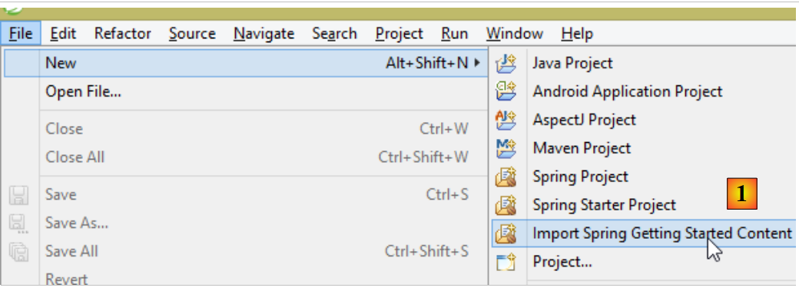 |
- in [1] importieren wir eine der Spring-Anleitungen;
 |
- in [2] wählen wir das Beispiel [Rest Service] aus;
- in [3] wählen wir das Maven-Projekt aus;
- in [4] wählen wir die endgültige Version der Anleitung;
- in [5] bestätigen wir;
- in [6] das importierte Projekt;
Webdienste, die über Standard-URL erreichbar sind und Text liefern, werden oft als REST-Dienste (REpresentational State Transfer) bezeichnet. In diesem Dokument werde ich den Dienst, den wir erstellen werden, einfach als Webdienst / JSON bezeichnen. Ein Dienst wird als RESTful bezeichnet, wenn er bestimmte Regeln einhält. Ich habe nicht versucht, diese einzuhalten.
Sehen wir uns nun das importierte Projekt an, zunächst seine Maven-Konfiguration.
2.11.2. Maven-Konfiguration
Die Datei [pom.xml] sieht wie folgt aus:
<?xml version="1.0" encoding="UTF-8"?>
<project xmlns="http://maven.apache.org/POM/4.0.0" xmlns:xsi="http://www.w3.org/2001/XMLSchema-instance"
xsi:schemaLocation="http://maven.apache.org/POM/4.0.0 http://maven.apache.org/xsd/maven-4.0.0.xsd">
<modelVersion>4.0.0</modelVersion>
<groupId>org.springframework</groupId>
<artifactId>gs-rest-service</artifactId>
<version>0.1.0</version>
<parent>
<groupId>org.springframework.boot</groupId>
<artifactId>spring-boot-starter-parent</artifactId>
<version>1.1.0.RELEASE</version>
</parent>
<dependencies>
<dependency>
<groupId>org.springframework.boot</groupId>
<artifactId>spring-boot-starter-web</artifactId>
</dependency>
<dependency>
<groupId>com.fasterxml.jackson.core</groupId>
<artifactId>jackson-databind</artifactId>
</dependency>
</dependencies>
<properties>
<start-class>hello.Application</start-class>
</properties>
<build>
<plugins>
<plugin>
<artifactId>maven-compiler-plugin</artifactId>
</plugin>
<plugin>
<groupId>org.springframework.boot</groupId>
<artifactId>spring-boot-maven-plugin</artifactId>
</plugin>
</plugins>
</build>
<repositories>
<repository>
<id>spring-releases</id>
<url>http://repo.spring.io/release</url>
</repository>
</repositories>
<pluginRepositories>
<pluginRepository>
<id>spring-releases</id>
<url>http://repo.spring.io/release</url>
</pluginRepository>
</pluginRepositories>
</project>
- Zeilen 10–14: Wie im Projekt [Spring Data] findet sich hier das übergeordnete Projekt [Spring Boot];
- Zeilen 17–20: Das Artefakt [spring-boot-starter-web] enthält die für ein Spring-Projekt MVC erforderlichen Bibliotheken. Insbesondere enthält es einen eingebetteten Tomcat-Server. Auf diesem Server wird die Anwendung ausgeführt;
- Zeilen 21–24: Die Jackson-Bibliothek verwaltet die Umwandlung eines Java-Objekts in eine Zeichenkette und umgekehrt;
Diese Konfiguration umfasst eine Vielzahl von Bibliotheken:
 |  |
Oben sind die drei Archive des Tomcat-Servers zu sehen.
2.11.3. Die Architektur eines Spring-Dienstes REST
Spring MVC implementiert das sogenannte MVC-Architekturmodell (Model-View-Controller) wie folgt:
 |
Die Bearbeitung einer Client-Anfrage läuft wie folgt ab:
- Anfrage – die angeforderten URL haben die Form http://machine:port/contexte/Action/param1/param2/....?p1=v1&p2=v2&... [Dispatcher Servlet] ist die Spring-Klasse, die eingehende URL verarbeitet. Sie „leitet“ die URL an die Aktion weiter, die sie verarbeiten soll. Diese Aktionen sind Methoden bestimmter Klassen, die [Contrôleurs] heißen. Das C in MVC ist hier die Zeichenkette [Dispatcher Servlet, Contrôleur, Action]. Wenn keine Aktion zur Verarbeitung des eingehenden URL konfiguriert wurde, antwortet das Servlet [Dispatcher Servlet], dass das angeforderte URL nicht gefunden wurde (Fehler 404 NOT FOUND);
- Verarbeitung
- Die ausgewählte Aktion kann die Parameter parami nutzen, die ihr das Servlet [Dispatcher Servlet] übermittelt hat. Diese können aus verschiedenen Quellen stammen:
- aus dem Pfad [/param1/param2/...] des URL,
- aus den Parametern [p1=v1&p2=v2] des URL,
- aus Parametern, die der Browser mit seiner Anfrage übermittelt hat;
- Bei der Bearbeitung der Benutzeranfrage benötigt die Aktion möglicherweise die Schichten [metier] und [2b]. Sobald die Anfrage des Clients bearbeitet wurde, kann dies verschiedene Antworten auslösen. Ein klassisches Beispiel ist:
- eine Fehlerseite, wenn die Anfrage nicht korrekt verarbeitet werden konnte
- ansonsten eine Bestätigungsseite
- die Aktion fordert die Anzeige einer bestimmten Ansicht an: [3]. Diese Ansicht zeigt Daten an, die als Modell der Ansicht bezeichnet werden. Das ist das M in MVC. Die Aktion erstellt dieses Modell M [2c] und fordert eine Ansicht V auf, sich anzuzeigen [3];
- Antwort – die ausgewählte Ansicht V verwendet die von der Aktion erstellte Vorlage M, um die dynamischen Teile der Antwort HTML zu initialisieren, die sie an den Client senden muss, und sendet diese Antwort anschließend.
Bei einem Webdienst / JSON wird die vorstehende Architektur leicht modifiziert:
 |
- In [4a] wird das Modell, bei dem es sich um eine Java-Klasse handelt, durch eine Bibliothek JSON in eine Zeichenkette JSON umgewandelt;
- in [4b] wird diese Zeichenfolge JSON an den Browser gesendet;
2.11.4. Der Controller C
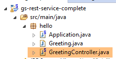 |
Die importierte Anwendung verfügt über den folgenden Controller:
package hello;
import java.util.concurrent.atomic.AtomicLong;
import org.springframework.stereotype.Controller;
import org.springframework.web.bind.annotation.RequestMapping;
import org.springframework.web.bind.annotation.RequestParam;
import org.springframework.web.bind.annotation.ResponseBody;
@Controller
public class GreetingController {
private static final String template = "Hello, %s!";
private final AtomicLong counter = new AtomicLong();
@RequestMapping("/greeting")
public @ResponseBody
Greeting greeting(@RequestParam(value = "name", required = false, defaultValue = "World") String name) {
return new Greeting(counter.incrementAndGet(), String.format(template, name));
}
}
- Zeile 9: Die Annotation [@Controller] macht die Klasse [GreetingController] zu einem Spring-Controller, d. h., ihre Methoden werden für die Verarbeitung von URL registriert;
- Zeile 15: Die Annotation [@RequestMapping] gibt das URL an, das von der Methode verarbeitet wird, in diesem Fall das URL [/greeting]. Wir werden später sehen, dass diese URL konfiguriert werden kann und dass es möglich ist, diese Parameter abzurufen;
- Zeile 16: Die Anmerkung [@ResponseBody] gibt an, dass die Methode kein Template für eine Ansicht (JSP, JSF, Thymeleaf, …) erzeugt, das anschließend an den Client-Browser gesendet wird, sondern erzeugt selbst die Antwort an den Browser. Hier erzeugt sie ein Objekt vom Typ [Greeting] (Zeile 18). Auch wenn dies hier nicht ersichtlich ist, wird dieses Objekt zunächst in JSON umgewandelt, bevor es an den Browser gesendet wird. Das Vorhandensein einer Bibliothek namens JSON in den Projektabhängigkeiten führt dazu, dass Spring Boot das Projekt durch Autokonfiguration auf diese Weise einrichtet;
- Zeile 17: Die Methode [greeting] hat einen Parameter [String name]. Die Annotation [@RequestParam(value = "name", required = false, defaultValue = "World"] gibt an, dass dieser Parameter mit einem Parameter namens [name](@RequestParam(value = "name")) initialisiert werden muss. Dieser kann der Parameter eines GET oder eines POST sein. Dieser Parameter ist nicht obligatorisch (required = false). Im letzteren Fall wird der Parameter [name] der Methode mit dem Wert [World] initialisiert (defaultValue = „World“).
2.11.5. Das Modell M
Das durch die vorherige Methode erzeugte M-Modell ist das folgende Objekt [Greeting]:
 |
package hello;
public class Greeting {
private final long id;
private final String content;
public Greeting(long id, String content) {
this.id = id;
this.content = content;
}
public long getId() {
return id;
}
public String getContent() {
return content;
}
}
Die Transformation JSON dieses Objekts erzeugt die Zeichenkette {"id":n,"content":"text"}. Letztendlich hat die vom Controller erzeugte Zeichenkette JSON folgende Form:
oder
2.11.6. Projektkonfiguration
 |
Das Projekt wird durch die folgende Klasse [Application] konfiguriert:
package hello;
import org.springframework.boot.autoconfigure.EnableAutoConfiguration;
import org.springframework.boot.SpringApplication;
import org.springframework.context.annotation.ComponentScan;
@ComponentScan
@EnableAutoConfiguration
public class Application {
public static void main(String[] args) {
SpringApplication.run(Application.class, args);
}
}
- Zeile 11: Seltsamerweise wird diese Klasse mit einer für Konsolenanwendungen spezifischen Methode namens [main] ausgeführt. Das ist tatsächlich der Fall. Die Klasse [SpringApplication] in Zeile 12 startet den in den Abhängigkeiten enthaltenen Tomcat-Server und stellt den Dienst REST darauf bereit;
- Zeile 4: Man sieht, dass die Klasse „[SpringApplication]“ zum Projekt „[Spring Boot]“ gehört;
- Zeile 12: Der erste Parameter ist die Klasse, die das Projekt konfiguriert, der zweite enthält eventuelle Parameter;
- Zeile 8: Die Annotation [@EnableAutoConfiguration] weist Spring Boot an, die Projektkonfiguration vorzunehmen;
- Zeile 7: Die Annotation [@ComponentScan] bewirkt, dass der Ordner, der die Klasse [Application] enthält, nach Spring-Komponenten durchsucht wird. Es wird eine gefunden, nämlich die Klasse [GreetingController], die die Annotation [@Controller] trägt, wodurch sie zu einer Spring-Komponente wird;
2.11.7. Ausführung des Projekts
Führen wir das Projekt aus:
 |
Es werden die folgenden Konsolenprotokolle ausgegeben:
____ _ __ _ _
- Zeile 12: Der Tomcat-Server startet auf Port 8080 (Zeile 11);
- Zeile 16: Das Servlet [DispatcherServlet] ist vorhanden;
- Zeile 19: Die Methode [GreetingController.greeting] wurde erkannt;
Um die Webanwendung zu testen, rufen wir die Methode URL [http://localhost:8080/greeting] auf:
 |  |
Man erhält tatsächlich die erwartete Zeichenfolge JSON. Es kann interessant sein, die vom Server gesendeten Header HTTP zu betrachten. Dazu verwenden wir das Chrome-Plugin namens [Advanced Rest Client] (siehe Anhänge):
 |
- in [1], das angeforderte URL;
- in [2] wird die Methode GET verwendet;
- in [3] die Antwort JSON;
- in [4] hat der Server angegeben, dass er eine Antwort im Format JSON sendet;
- in [5] wird dieselbe URL angefordert, diesmal jedoch mit einer POST;
- In [7] werden die Informationen in der Form [urlencoded] an den Server gesendet;
- in [6] den Parameter „name“ mit seinem Wert;
- bei [8] teilt der Browser dem Server mit, dass er ihm Informationen in der Form [urlencoded] sendet;
- in [9] die Antwort JSON des Servers;
2.11.8. Erstellung eines ausführbaren Archivs
Es ist möglich, ein ausführbares Archiv außerhalb von Eclipse zu erstellen. Die erforderliche Konfiguration befindet sich in der Datei [pom.xml]:
<properties>
<project.build.sourceEncoding>UTF-8</project.build.sourceEncoding>
<start-class>istia.st.Application</start-class>
<java.version>1.7</java.version>
</properties>
<build>
<plugins>
<plugin>
<groupId>org.springframework.boot</groupId>
<artifactId>spring-boot-maven-plugin</artifactId>
</plugin>
</plugins>
</build>
- Die Zeilen 9–12 definieren das Plugin, das das ausführbare Archiv erstellen wird;
- Zeile 3 definiert die ausführbare Klasse des Projekts;
So gehen Sie vor:
 |
- in [1]: Es wird ein Maven-Ziel ausgeführt;
- in [2]: Es gibt zwei Ziele (Goals): [clean] zum Löschen des Ordners [target] aus dem Maven-Projekt und [package] zum erneuten Erstellen dieses Ordners;
- in [3]: Der generierte Ordner [target] wird in diesem Ordner erstellt;
- in [4]: Das Ziel wird generiert;
In den Protokollen, die in der Konsole angezeigt werden, muss unbedingt das Plugin [spring-boot-maven-plugin] erscheinen. Dieses Plugin generiert das ausführbare Archiv.
Wechseln Sie in einer Konsole in den erstellten Ordner:
- Zeile 5: das generierte Archiv;
Dieses Archiv wird wie folgt ausgeführt:
Nachdem die Webanwendung nun gestartet ist, kann man sie mit einem Browser aufrufen:
 |
2.11.9. Bereitstellung der Anwendung auf einem Tomcat-Server
Spring Boot erweist sich zwar im Entwicklungsmodus als sehr praktisch, doch ist es wahrscheinlich, dass eine Anwendung in der Produktion auf einem echten Tomcat-Server bereitgestellt wird. So gehen Sie vor:
Bearbeiten Sie die Datei [pom.xml] wie folgt:
<?xml version="1.0" encoding="UTF-8"?>
<project xmlns="http://maven.apache.org/POM/4.0.0" xmlns:xsi="http://www.w3.org/2001/XMLSchema-instance"
xsi:schemaLocation="http://maven.apache.org/POM/4.0.0 http://maven.apache.org/xsd/maven-4.0.0.xsd">
<modelVersion>4.0.0</modelVersion>
<groupId>org.springframework</groupId>
<artifactId>gs-rest-service</artifactId>
<version>0.1.0</version>
<packaging>war</packaging>
<parent>
<groupId>org.springframework.boot</groupId>
<artifactId>spring-boot-starter-parent</artifactId>
<version>1.1.0.RELEASE</version>
</parent>
<dependencies>
<dependency>
<groupId>org.springframework.boot</groupId>
<artifactId>spring-boot-starter-web</artifactId>
</dependency>
<dependency>
<groupId>com.fasterxml.jackson.core</groupId>
<artifactId>jackson-databind</artifactId>
</dependency>
<dependency>
<groupId>org.springframework.boot</groupId>
<artifactId>spring-boot-starter-tomcat</artifactId>
<scope>provided</scope>
</dependency>
</dependencies>
<properties>
<start-class>hello.Application</start-class>
</properties>
....
</project>
Die Änderungen müssen an zwei Stellen vorgenommen werden:
- Zeile 9: Es muss angegeben werden, dass ein WAR-Archiv (Web ARchive) generiert werden soll;
- Zeilen 26–30: Es muss eine Abhängigkeit zum Artefakt [spring-boot-starter-tomcat] hinzugefügt werden. Dieses Artefakt fügt alle Tomcat-Klassen in die Projektabhängigkeiten ein;
- Zeile 29: Dieses Artefakt ist [provided], d. h., die entsprechenden Archive werden nicht in die generierte WAR-Datei aufgenommen. Diese Archive befinden sich nämlich auf dem Tomcat-Server, auf dem die Anwendung ausgeführt wird;
Außerdem muss die Webanwendung konfiguriert werden. Da die Datei [web.xml] fehlt, erfolgt dies über eine Klasse, die von [SpringBootServletInitializer] erbt:
 |
Die Klasse [ApplicationInitializer] sieht wie folgt aus:
package hello;
import org.springframework.boot.builder.SpringApplicationBuilder;
import org.springframework.boot.context.web.SpringBootServletInitializer;
public class ApplicationInitializer extends SpringBootServletInitializer {
@Override
protected SpringApplicationBuilder configure(SpringApplicationBuilder application) {
return application.sources(Application.class);
}
}
- Zeile 6: Die Klasse [ApplicationInitializer] erweitert die Klasse [SpringBootServletInitializer];
- Zeile 9: Die Methode [configure] wird neu definiert (Zeile 8);
- Zeile 10: Es wird die Klasse angegeben, die das Projekt konfiguriert;
Um das Projekt auszuführen, kann man wie folgt vorgehen:
 |
- in [1]: Das Projekt wird auf einem der in IDE Eclipse registrierten Server ausgeführt;
- In [2] wählt man [tc Server Developer] aus, das standardmäßig vorhanden ist. Es handelt sich um eine Variante von Tomcat;
Anschließend kann man URL [http://localhost:8080/gs-rest-service/greeting/?name=Mitchell] in einem Browser aufrufen:
 |
Wir wissen nun, wie man ein WAR-Archiv erstellt. Im weiteren Verlauf werden wir weiterhin mit Spring Boot und dessen ausführbarem JAR-Archiv arbeiten.
2.11.10. Ein neues Webprojekt erstellen
Um ein neues Webprojekt zu erstellen, können wir wie folgt vorgehen:
 |
- in [1]: „Datei“ / „Neu“ / „Spring Starter-Projekt“
- in [2]: Wählen Sie [Web] aus. Es werden keine View-Bibliotheken ausgewählt, da es in einem Webservice / JSON keine Views gibt;
- das erstellte Projekt wird ein Maven-Projekt sein. In [3] geben Sie die Gruppe des zu erstellenden Maven-Artefakts ein, in [4] den Namen des Artefakts;
- In [5] geben wir den Namen eines Pakets an, in dem Spring die Konfigurationsklasse des Projekts ablegen wird;
- in [6] wird dem Eclipse-Projekt ein Name gegeben – dieser kann sich von [4] unterscheiden;
 |
2.12. Die Ebene [web]
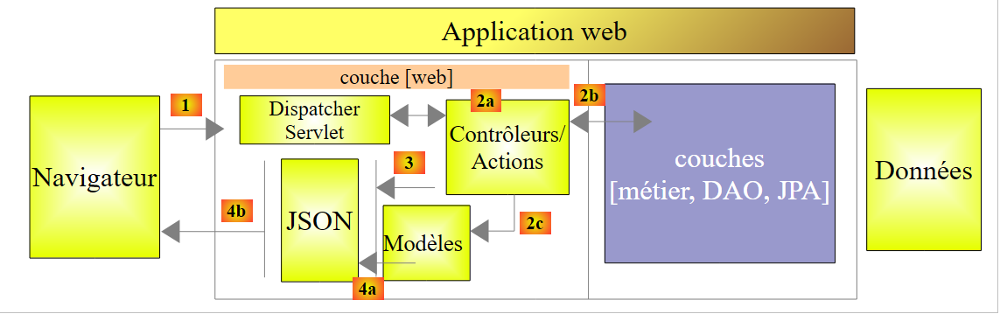 |
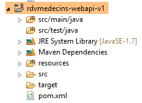 |
Wir werden die Webschicht in mehreren Schritten aufbauen:
- Schritt 1: eine funktionsfähige Webschicht ohne Authentifizierung;
- Schritt 2: Einrichtung der Authentifizierung mit Spring Security;
- Schritt 3: Einrichtung von CORS und [Cross-origin resource sharing (CORS) is a mechanism that allows many resources (e.g. fonts, JavaScript, etc.) on a web page to be requested from another domain outside the domain the resource originated from. (Wikipedia)]. Der Client unseres Webdienstes wird ein Angular-Webclient sein, der nicht unbedingt zur selben Domain wie unser Webdienst gehört. Standardmäßig kann er daher nicht darauf zugreifen, es sei denn, der Webdienst erteilt ihm die Berechtigung dazu. Wir werden sehen, wie das geht;
2.12.1. Maven-Konfiguration
Die Datei [pom.xml] des Projekts sieht wie folgt aus:
<modelVersion>4.0.0</modelVersion>
<groupId>istia.st.spring4.mvc</groupId>
<artifactId>rdvmedecins-webapi-v1</artifactId>
<version>0.0.1-SNAPSHOT</version>
<name>rdvmedecins-webapi-v1</name>
<description>Gestion de RV Médecins</description>
<parent>
<groupId>org.springframework.boot</groupId>
<artifactId>spring-boot-starter-parent</artifactId>
<version>1.0.0.RELEASE</version>
</parent>
<dependencies>
<dependency>
<groupId>org.springframework.boot</groupId>
<artifactId>spring-boot-starter-web</artifactId>
</dependency>
<dependency>
<groupId>istia.st.spring4.rdvmedecins</groupId>
<artifactId>rdvmedecins-metier-dao</artifactId>
<version>0.0.1-SNAPSHOT</version>
</dependency>
</dependencies>
- Zeilen 7–11: das übergeordnete Maven-Projekt;
- Zeilen 13–16: die Abhängigkeiten für ein Spring-Projekt MVC;
- Zeilen 17–21: die Abhängigkeiten zum Schichtprojekt [métier, DAO, JPA];
2.12.2. Die Schnittstelle des Webdienstes
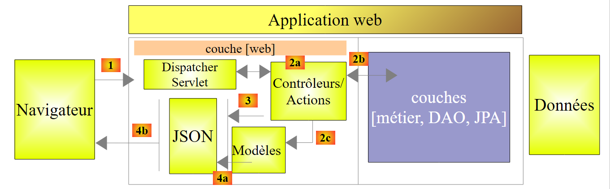 |
- in [1] (siehe oben) kann der Browser nur eine begrenzte Anzahl von URL mit einer bestimmten Syntax abfragen;
- in [4] erhält er eine Antwort JSON;
Die Antworten unseres Webdienstes haben alle dieselbe Form, die der Umwandlung JSON eines Objekts vom Typ [Reponse] entspricht:
package rdvmedecins.web.models;
public class Reponse {
// ----------------- Eigenschaften
// Status der Transaktion
private int status;
// die Antwort JSON
private Object data;
// ---------------Hersteller
public Reponse() {
}
public Reponse(int status, Object data) {
this.status = status;
this.data = data;
}
// Methoden
public void incrStatusBy(int increment) {
status += increment;
}
// ----------------------Getter und Setter
...
}
- Zeile 7: Fehlercode der Antwort 0: OK, sonst: KO;
- Zeile 9: Der Antworttext;
Im Folgenden zeigen wir Screenshots, die die Benutzeroberfläche des Webdienstes / JSON veranschaulichen:
Liste aller Patienten der Arztpraxis [/getAllClients]
 |
Liste aller Ärzte der Arztpraxis [/getAllMedecins]
 |
Liste der Terminfenster eines Arztes [/getAllCreneaux/{idMedecin}]
 |
Liste der Arzttermine [/getRvMedecinJour/{idMedecin}/{jjjj-mm-tt}
 |
Terminkalender eines Arztes [/getAgendaMedecinJour/{idMedecin}/{aaaa-mm-jj}]
 |
Um einen Termin hinzuzufügen oder zu löschen, verwenden wir das Chrome-Erweiterung [Advanced Rest Client], da diese Vorgänge mit einem POST durchgeführt werden.
Termin hinzufügen [/ajouterRv]
 |
- in [0], das URL des Webdienstes;
- in [1] wird die Methode POST verwendet;
- in [2] der Text JSON der an den Webdienst übermittelten Informationen in der Form {Tag, idClient, idCreneau};
- in [3] teilt der Client dem Webdienst mit, dass er ihm Informationen im Format JSON sendet;
Die Antwort lautet dann wie folgt:
 |
- in [4]: Der Client sendet den Header, der angibt, dass die von ihm gesendeten Daten im Format JSON vorliegen;
- in [5]: Der Webdienst antwortet, dass er ebenfalls JSON sendet;
- in [6]: die Antwort JSON des Webdienstes. Das Feld [data] enthält die Form JSON des hinzugefügten Termins;
Das Vorhandensein des neuen Termins kann überprüft werden:
 |
Einen Termin löschen [/supprimerRv]
 |
- in [1] wird der Webdienst URL verwendet;
- in [2] wird die Methode POST verwendet;
- in [3] der Text JSON der an den Webdienst in der Form {idRv} übermittelten Informationen;
- Bei [4] teilt der Client dem Webdienst mit, dass er ihm Informationen JSON sendet;
Die Antwort lautet dann wie folgt:
 |
- in [5]: Das Feld [status] ist auf 0 gesetzt, was anzeigt, dass der Vorgang erfolgreich war;
Die Löschung des Termins kann überprüft werden:
 |
Oben ist der Termin des Patienten [Mme GERMAN] nicht mehr vorhanden.
Der Webdienst ermöglicht es außerdem, Entitäten anhand ihrer Kennung abzurufen:
 |
 |
 |
 |
Alle diese URL werden vom Controller [RdvMedecinsController] verarbeitet, den wir nun vorstellen.
2.12.3. Das Grundgerüst des Controllers [RdvMedecinsController]
 |
Der Controller [RdvMedecinsController] sieht wie folgt aus:
package rdvmedecins.web.controllers;
import java.text.ParseException;
...
@RestController
public class RdvMedecinsController {
@Autowired
private ApplicationModel application;
private List<String> messages;
@PostConstruct
public void init() {
// Fehlermeldungen der Anwendung
messages = application.getMessages();
}
// Liste der Ärzte
@RequestMapping(value = "/getAllMedecins", method = RequestMethod.GET)
public Reponse getAllMedecins() {
...
}
// Liste der Kunden
@RequestMapping(value = "/getAllClients", method = RequestMethod.GET)
public Reponse getAllClients() {
...
}
// Liste der Termine eines Arztes
@RequestMapping(value = "/getAllCreneaux/{idMedecin}", method = RequestMethod.GET)
public Reponse getAllCreneaux(@PathVariable("idMedecin") long idMedecin) {
...
}
// Liste der Termine eines Arztes
@RequestMapping(value = "/getRvMedecinJour/{idMedecin}/{jour}", method = RequestMethod.GET)
public Reponse getRvMedecinJour(@PathVariable("idMedecin") long idMedecin,
@PathVariable("jour") String jour) {
...
}
@RequestMapping(value = "/getClientById/{id}", method = RequestMethod.GET)
public Reponse getClientById(@PathVariable("id") long id) {
...
}
@RequestMapping(value = "/getMedecinById/{id}", method = RequestMethod.GET)
public Reponse getMedecinById(@PathVariable("id") long id) {
...
}
@RequestMapping(value = "/getRvById/{id}", method = RequestMethod.GET)
public Reponse getRvById(@PathVariable("id") long id) {
...
}
@RequestMapping(value = "/getCreneauById/{id}", method = RequestMethod.GET)
public Reponse getCreneauById(@PathVariable("id") long id) {
...
}
@RequestMapping(value = "/ajouterRv", method = RequestMethod.POST, consumes = "application/json; charset=UTF-8")
public Reponse ajouterRv(@RequestBody PostAjouterRv post) {
...
}
@RequestMapping(value = "/supprimerRv", method = RequestMethod.POST, consumes = "application/json; charset=UTF-8")
public Reponse supprimerRv(@RequestBody PostSupprimerRv post) {
...
}
@RequestMapping(value = "/getAgendaMedecinJour/{idMedecin}/{jour}", method = RequestMethod.GET)
public Reponse getAgendaMedecinJour(
@PathVariable("idMedecin") long idMedecin,
@PathVariable("jour") String jour) {
...
}
}
- Zeile 6: Die Annotation [@RestController] macht die Klasse [RdvMedecinsController] zu einem Spring-Controller. Außerdem bewirkt sie, dass die Methoden, die URL verarbeiten, eine Antwort generieren, die automatisch in JSON umgewandelt wird;
- Zeilen 9–10: Hier wird von Spring ein Objekt vom Typ [ApplicationModel] injiziert;
- Zeile 13: Die Annotation [@PostConstruct] kennzeichnet eine Methode, die unmittelbar nach der Instanziierung der Klasse ausgeführt werden soll. Wenn diese ausgeführt wird, stehen die von Spring injizierten Objekte zur Verfügung;
- Alle Methoden geben ein Objekt vom Typ [Reponse] zurück, das wie folgt aussieht:
package rdvmedecins.web.models;
public class Reponse {
// ----------------- Eigenschaften
// Status des Vorgangs
private int status;
// die Antwort
private Object data;
...
}
Dieses Objekt wird in JSON serialisiert, bevor es an den Client-Browser gesendet wird;
- Zeile 20: Die Annotation [@RequestMapping] legt die Bedingungen für den Aufruf der Methode fest. Hier verarbeitet die Methode eine Anfrage GET vom URL [/getAllMedecins]. Würde diese URL von einer POST angefordert, würde sie abgelehnt und Spring MVC würde einen Fehlercode HTTP an den Web-Client senden;
- Zeile 32: URL wird durch {idMedecin} konfiguriert. Dieser Parameter wird mit der Anmerkung [@PathVariable] in Zeile 33 abgerufen;
- Zeile 33: Der einzige Parameter [long idMedecin] erhält seinen Wert vom Parameter {idMedecin} aus URL [@PathVariable("idMedecin")]. Der Parameter in URL und der der Methode können unterschiedliche Namen haben. Hierbei ist zu beachten, dass [@PathVariable("idMedecin")] vom Typ String ist (das gesamte URL ist ein String), während der Parameter [long idMedecin] vom Typ [long] ist. Die Typumwandlung erfolgt automatisch. Wenn diese Typumwandlung fehlschlägt, wird der Fehlercode HTTP zurückgegeben;
- Zeile 65: Die Anmerkung [@RequestBody] bezeichnet den Hauptteil der Anfrage. In einer Anfrage vom Typ GET gibt es so gut wie nie einen Hauptteil (es ist jedoch möglich, einen anzugeben). In einer Anfrage vom Typ POST ist meist ein Hauptteil vorhanden (es ist jedoch möglich, keinen anzugeben). Für die Anfragen URL und [ajouterRv] sendet der Webclient in seiner Anfrage POST die folgende Zeichenfolge:
Die Syntax [@RequestBody PostAjouterRv post] (Zeile 65) sowie die Tatsache, dass die Methode in Zeile 64 den Wert JSON erwartet, führen dazu, dass die vom Web-Client gesendete Zeichenfolge JSON in ein Objekt vom Typ [PostAjouter] deserialisiert wird. Dieser lautet wie folgt:
package rdvmedecins.web.models;
public class PostAjouterRv {
// Daten des Beitrags
private String jour;
private long idClient;
private long idCreneau;
// Getter und Setter
...
}
Auch hier erfolgen die erforderlichen Typänderungen automatisch;
- in den Zeilen 69–70 findet sich ein ähnlicher Mechanismus für URL und [/supprimerRv]. Die gesendete Zeichenfolge JSON lautet wie folgt:
und der Typ [PostSupprimerRv] lautet wie folgt:
package rdvmedecins.web.models;
public class PostSupprimerRv {
// Post-Daten
private long idRv;
// Getter und Setter
...
}
2.12.4. Die Vorlagen des Webdienstes
 |
Wir haben bereits die Modelle [Reponse, PostAjouterRv, PostSupprimerRv] vorgestellt. Das Modell [ApplicationModel] lautet wie folgt:
package rdvmedecins.web.models;
import java.util.Date;
...
@Component
public class ApplicationModel implements IMetier {
// die Schicht [métier]
@Autowired
private IMetier métier;
// Daten aus der Schicht [métier]
private List<Medecin> médecins;
private List<Client> clients;
// Fehlermeldungen
private List<String> messages;
@PostConstruct
public void init() {
// Ärzte und Kunden werden abgerufen
try {
médecins = métier.getAllMedecins();
clients = métier.getAllClients();
} catch (Exception ex) {
messages = Static.getErreursForException(ex);
}
}
// Getter
public List<String> getMessages() {
return messages;
}
// ------------------------- Schnittstelle der Ebene [métier]
@Override
public List<Client> getAllClients() {
return clients;
}
@Override
public List<Medecin> getAllMedecins() {
return médecins;
}
@Override
public List<Creneau> getAllCreneaux(long idMedecin) {
return métier.getAllCreneaux(idMedecin);
}
@Override
public List<Rv> getRvMedecinJour(long idMedecin, Date jour) {
return métier.getRvMedecinJour(idMedecin, jour);
}
@Override
public Client getClientById(long id) {
return métier.getClientById(id);
}
@Override
public Medecin getMedecinById(long id) {
return métier.getMedecinById(id);
}
@Override
public Rv getRvById(long id) {
return métier.getRvById(id);
}
@Override
public Creneau getCreneauById(long id) {
return métier.getCreneauById(id);
}
@Override
public Rv ajouterRv(Date jour, Creneau creneau, Client client) {
return métier.ajouterRv(jour, creneau, client);
}
@Override
public void supprimerRv(Rv rv) {
métier.supprimerRv(rv);
}
@Override
public AgendaMedecinJour getAgendaMedecinJour(long idMedecin, Date jour) {
return métier.getAgendaMedecinJour(idMedecin, jour);
}
}
- Zeile 6: Die Annotation [@Component] macht die Klasse [ApplicationModel] zu einer Spring-Komponente. Wie bei allen bisher behandelten Spring-Komponenten (mit Ausnahme von @Controller) wird nur ein einziges Objekt dieses Typs instanziiert (Singleton);
- Zeile 7: Die Klasse [ApplicationModel] implementiert die Schnittstelle [IMetier];
- Zeilen 10–11: Eine Referenz auf die Schicht [métier] wird von Spring injiziert;
- Zeile 19: Die Annotation [@PostConstruct] bewirkt, dass die Methode [init] unmittelbar nach der Instanziierung der Klasse [ApplicationModel] ausgeführt wird;
- Zeilen 23–24: Die Listen der Ärzte und Kunden werden aus der Schicht [métier] abgerufen;
- Zeile 26: Tritt eine Ausnahme auf, werden die Meldungen des Ausnahmestapels im Feld aus Zeile 17 gespeichert;
Die Klasse [ApplicationModel] dient uns zwei Zwecken:
- als Cache zum Speichern der Listen mit Ärzten und Patienten (Kunden);
- als einheitliche Schnittstelle für die Controller;
Die Architektur der Webschicht entwickelt sich wie folgt:
 |
- In [2b] kommunizieren die Methoden des oder der Controller mit dem Singleton [ApplicationModel];
Diese Strategie sorgt für Flexibilität bei der Cache-Verwaltung. Derzeit werden die Terminfenster der Ärzte nicht zwischengespeichert. Um sie zu zwischenspeichern, muss lediglich die Klasse [ApplicationModel] geändert werden. Dies hat keinerlei Auswirkungen auf den Controller, der weiterhin die Methode [List<Creneau> getAllCreneaux(long idMedecin)] wie bisher verwendet. Es ist die Implementierung dieser Methode in [ApplicationModel], die geändert wird.
2.12.5. Die Klasse „Static“
Die Klasse [Static] umfasst eine Reihe statischer Hilfsmethoden, die weder „geschäftsbezogene“ noch „webbezogene“ Aspekte aufweisen:
 |
Der Code lautet wie folgt:
package rdvmedecins.web.helpers;
import java.text.SimpleDateFormat;
...
public class Static {
public Static() {
}
// Liste der Fehlermeldungen einer Ausnahme
public static List<String> getErreursForException(Exception exception) {
// Die Liste der Fehlermeldungen der Ausnahme wird abgerufen
Throwable cause = exception;
List<String> erreurs = new ArrayList<String>();
while (cause != null) {
erreurs.add(cause.getMessage());
cause = cause.getCause();
}
return erreurs;
}
// Mapper „Object“ --> „Map“
// --------------------------------------------------------
....
}
- Zeile 12: Die Methode [Static.getErreursForException], die (in Zeile 8 unten) in der Methode [init] der Klasse [ApplicationModel] verwendet wurde:
@PostConstruct
public void init() {
// Ärzte und Kunden abrufen
try {
médecins = métier.getAllMedecins();
clients = métier.getAllClients();
} catch (Exception ex) {
messages = Static.getErreursForException(ex);
}
}
Die Methode erstellt ein Objekt [List<String>] mit den Fehlermeldungen [exception.getMessage()] einer Ausnahme [exception] und der darin enthaltenen Fehlermeldungen [exception.getCause()].
Die Klasse [Static] enthält weitere Hilfsmethoden, auf die wir zurückkommen werden, sobald wir auf sie stoßen.
Wir werden nun die Verarbeitung der URL des Webdienstes im Detail erläutern. An dieser Verarbeitung sind drei Hauptklassen beteiligt:
- der Controller [RdvMedecinsController];
- die Hilfsmethodenklasse [Static];
- die Cache-Klasse [ApplicationModel];
 |
2.12.6. Die Methode [init] des Controllers
Der Controller [RdvMedecinsController] (siehe Abschnitt 2.12.3) verfügt über eine Methode [init], die unmittelbar nach seiner Instanziierung ausgeführt wird:
@Autowired
private ApplicationModel application;
private List<String> messages;
@PostConstruct
public void init() {
// Fehlermeldungen der Anwendung
messages = application.getMessages();
}
- Zeile 8: Die im Anwendungscache [ApplicationModel] gespeicherten Fehlermeldungen werden lokal im Feld von Zeile 3 abgelegt. Dadurch können die Methoden feststellen, ob die Anwendung korrekt initialisiert wurde.
2.12.7. Die URL [/getAllMedecins]
URL [/getAllMedecins] wird von der folgenden Methode des Controllers [RdvMedecinsController] verarbeitet:
// Liste der Ärzte
@RequestMapping(value = "/getAllMedecins", method = RequestMethod.GET)
public Reponse getAllMedecins() {
// Anwendungsstatus
if (messages != null) {
return new Reponse(-1, messages);
}
// Liste der Ärzte
try {
return new Reponse(0, application.getAllMedecins());
} catch (Exception e) {
return new Reponse(1, Static.getErreursForException(e));
}
}
- Zeile 5: Es wird geprüft, ob die Anwendung korrekt initialisiert wurde (messages == null). Ist dies nicht der Fall, wird eine Antwort mit status=-1 und data=messages zurückgegeben;
- Zeile 10: Andernfalls wird die Liste der Ärzte mit einem Wert von 0 für status zurückgegeben. Die Methode [application.getAllMedecins()] löst keine Ausnahme aus, da sie lediglich eine Liste zurückgibt, die im Cache gespeichert ist. Dennoch behalten wir diese Ausnahmebehandlung für den Fall bei, dass die Ärzte nicht mehr im Cache gespeichert sind;
Wir haben den Fall, in dem die Anwendung nicht ordnungsgemäß initialisiert wurde, noch nicht behandelt. Beenden wir die Methoden SGBD und MySQL5, starten wir den Webdienst und rufen wir dann die Methoden URL und [/getAllMedecins] auf:

Es wird tatsächlich ein Fehler ausgegeben. Unter normalen Umständen wird folgende Ansicht angezeigt:
|
2.12.8. Die URL [/getAllClients]
Die URL [/getAllClients] wird von der folgenden Methode des Controllers [RdvMedecinsController] verarbeitet:
// Liste der Kunden
@RequestMapping(value = "/getAllClients")
public Reponse getAllClients() {
// Anwendungsstatus
if (messages != null) {
return new Reponse(-1, messages);
}
// Kundenliste
try {
return new Reponse(0, application.getAllClients());
} catch (Exception e) {
return new Reponse(1, Static.getErreursForException(e));
}
}
Sie entspricht der bereits untersuchten Methode [getAllMedecins]. Die erzielten Ergebnisse lauten wie folgt:
|
2.12.9. URL [/getAllCreneaux/{idMedecin}]
Die Methode URL [/getAllCreneaux/{idMedecin}] wird von der folgenden Methode des Controllers [RdvMedecinsController] verarbeitet:
// Liste der Termine eines Arztes
@RequestMapping(value = "/getAllCreneaux/{idMedecin}", method = RequestMethod.GET)
public Reponse getAllCreneaux(@PathVariable("idMedecin") long idMedecin) {
// Anwendungsstatus
if (messages != null) {
return new Reponse(-1, messages);
}
// Arzt wird abgerufen
Reponse réponse = getMedecin(idMedecin);
if (réponse.getStatus() != 0) {
return réponse;
}
Medecin médecin = (Medecin) réponse.getData();
// Termine des Arztes
List<Creneau> créneaux = null;
try {
créneaux = application.getAllCreneaux(médecin.getId());
} catch (Exception e1) {
return new Reponse(3, Static.getErreursForException(e1));
}
// Antwort wird zurückgegeben
return new Reponse(0, Static.getListMapForCreneaux(créneaux));
}
- Zeile 9: Der durch den Parameter [id] identifizierte Arzt wird an eine lokale Methode übergeben:
private Reponse getMedecin(long id) {
// Abruf des Arztes
Medecin médecin = null;
try {
médecin = application.getMedecinById(id);
} catch (Exception e1) {
return new Reponse(1, Static.getErreursForException(e1));
}
// bereits registrierter Arzt?
if (médecin == null) {
return new Reponse(2, null);
}
// ok
return new Reponse(0, médecin);
}
Von dieser Methode kehrt man mit einem status in [0,1,2] zurück. Kehren wir zum Code der Methode [getAllCreneaux] zurück:
- Zeilen 10–12: Wenn status!=0 vorliegt, wird die Antwort sofort zurückgegeben;
- Zeile 13: Der Arzt wird abgerufen;
- Zeile 17: Die Termine dieses Arztes werden abgerufen;
- Zeile 22: Als Antwort wird ein Objekt vom Typ [Static.getListMapForCreneaux(créneaux)] gesendet;
Zur Erinnerung: Die Definition der Klasse [Creneau] lautet:
@Entity
@Table(name = "creneaux")
public class Creneau extends AbstractEntity {
private static final long serialVersionUID = 1L;
// Merkmale eines Termins von RV
private int hdebut;
private int mdebut;
private int hfin;
private int mfin;
// Ein Termin ist mit einem Arzt verknüpft
@ManyToOne(fetch = FetchType.LAZY)
@JoinColumn(name = "id_medecin")
private Medecin medecin;
// Fremdschlüssel
@Column(name = "id_medecin", insertable = false, updatable = false)
private long idMedecin;
...
}
- Zeile 13: Der Arzt wird im Modus [FetchType.LAZY] gesucht;
Zur Erinnerung: Die Abfrage JPQL implementiert die Methode [getAllCreneaux] in der Schicht [DAO]:
@Query("select c from Creneau c where c.medecin.id=?1")
Die Notation [c.medecin.id] erzwingt die Verknüpfung zwischen den Tabellen [CRENEAUX] und [MEDECINS]. Daher liefert die Abfrage alle Termine des Arztes, wobei in jedem Termin der Arzt enthalten ist. Wenn man diese Termine in JSON serialisiert, erscheint in jedem Termin die Zeichenfolge JSON des Arztes. Das ist unnötig. Anstatt also ein Objekt [Creneau] zu serialisieren, werden wir ein Objekt [Map] serialisieren, in das wir nur die gewünschten Felder aufnehmen.
Kehren wir zum ursprünglich untersuchten Code zurück:
// Die Antwort wird zurückgegeben
return new Reponse(0, Static.getListMapForCreneaux(créneaux));
Die Methode [Static.getListMapForCreneaux] lautet wie folgt:
// List<Termin> --> List<Map>
public static List<Map<String, Object>> getListMapForCreneaux(List<Creneau> créneaux) {
// Liste von Dictionaries <String, Object>
List<Map<String, Object>> liste = new ArrayList<Map<String, Object>>();
for (Creneau créneau : créneaux) {
liste.add(Static.getMapForCreneau(créneau));
}
// Die Liste wird zurückgegeben
return liste;
}
und die Methode [Static.getMapForCreneau] lautet wie folgt:
// „Creneau“ --> Map
public static Map<String, Object> getMapForCreneau(Creneau créneau) {
// Was ist zu tun?
if (créneau == null) {
return null;
}
// Wörterbuch <String,Object>
Map<String, Object> hash = new HashMap<String, Object>();
hash.put("id", créneau.getId());
hash.put("hDebut", créneau.getHdebut());
hash.put("mDebut", créneau.getMdebut());
hash.put("hFin", créneau.getHfin());
hash.put("mFin", créneau.getMfin());
// Das Wörterbuch wird zurückgegeben
return hash;
}
- Zeile 8: Es wird ein Wörterbuch angelegt;
- Zeilen 9–13: Man fügt die Felder hinzu, die man in der Zeichenkette JSON beibehalten möchte. Das Feld [medecin] ist nicht enthalten;
- Zeile 15: Dieses Wörterbuch wird zurückgegeben;
Die Ergebnisse lauten wie folgt:
|
oder diese, falls der Zeitrahmen nicht existiert:
 |
oder diese, falls beim Zugriff auf die Datenbank ein Fehler auftritt:
 |
2.12.10. Die URL [/getRvMedecinJour/{idMedecin}/{jour}]
URL und [/getRvMedecinJour/{idMedecin}/{jour}] werden von der folgenden Methode des Controllers [RdvMedecinsController] verarbeitet:
// Terminliste eines Arztes
@RequestMapping(value = "/getRvMedecinJour/{idMedecin}/{jour}", method = RequestMethod.GET)
public Reponse getRvMedecinJour(@PathVariable("idMedecin") long idMedecin, @PathVariable("jour") String jour) {
// Anwendungsstatus
if (messages != null) {
return new Reponse(-1, messages);
}
// Das Datum wird überprüft
Date jourAgenda = null;
SimpleDateFormat sdf = new SimpleDateFormat("yyyy-MM-dd");
sdf.setLenient(false);
try {
jourAgenda = sdf.parse(jour);
} catch (ParseException e) {
return new Reponse(3, null);
}
// Der Arzt wird abgerufen
Reponse réponse = getMedecin(idMedecin);
if (réponse.getStatus() != 0) {
return réponse;
}
Medecin médecin = (Medecin) réponse.getData();
// Liste seiner Termine
List<Rv> rvs = null;
try {
rvs = application.getRvMedecinJour(médecin.getId(), jourAgenda);
} catch (Exception e1) {
return new Reponse(4, Static.getErreursForException(e1));
}
// Die Antwort wird zurückgegeben
return new Reponse(0, Static.getListMapForRvs(rvs));
}
- Zeile 31: Es wird ein Objekt vom Typ `List<Map<String,Object>>` anstelle eines Objekts vom Typ `List<Rv>` zurückgegeben. Zur Erinnerung: Die Definition der Klasse `[Rv]` lautet:
@Entity
@Table(name = "rv")
public class Rv extends AbstractEntity {
private static final long serialVersionUID = 1L;
// Merkmale eines Termins
@Temporal(TemporalType.DATE)
private Date jour;
// Ein Termin ist mit einem Kunden verknüpft
@ManyToOne(fetch = FetchType.LAZY)
@JoinColumn(name = "id_client")
private Client client;
// Ein Termin ist mit einem Zeitfenster verknüpft
@ManyToOne(fetch = FetchType.LAZY)
@JoinColumn(name = "id_creneau")
private Creneau creneau;
// Fremdschlüssel
@Column(name = "id_client", insertable = false, updatable = false)
private long idClient;
@Column(name = "id_creneau", insertable = false, updatable = false)
private long idCreneau;
...
}
- Zeile 11: Der Kunde wird im Modus [FetchType.LAZY] gesucht;
- Zeile 18: Der Terminblock wird im Modus [FetchType.LAZY] gesucht;
Zur Erinnerung: Die Abfrage JPQL dient zur Suche nach Terminen:
@Query("select rv from Rv rv left join fetch rv.client c left join fetch rv.creneau cr where cr.medecin.id=?1 and rv.jour=?2")
Es werden explizit Verknüpfungen durchgeführt, um die Felder [client] und [creneau] abzurufen. Außerdem erhalten wir aufgrund der Verknüpfung [cr.medecin.id=?1] auch den Arzt. Der Arzt erscheint somit in der Zeichenkette JSON jedes Termins. Diese doppelte Information ist jedoch überflüssig. Kehren wir zum Code der Methode zurück:
- Zeile 31: Wir erstellen selbst das zu serialisierende Dictionary in JSON;
Das für einen Termin erstellte Dictionary sieht wie folgt aus:
// Termin --> Karte
public static Map<String, Object> getMapForRv(Rv rv) {
// Muss etwas getan werden?
if (rv == null) {
return null;
}
// Wörterbuch <String,Object>
Map<String, Object> hash = new HashMap<String, Object>();
hash.put("id", rv.getId());
hash.put("client", rv.getClient());
hash.put("creneau", getMapForCreneau(rv.getCreneau()));
// Das Wörterbuch wird zurückgegeben
return hash;
}
- Zeile 11: Wir übernehmen das zuvor vorgestellte Wörterbuch des Objekts [Creneau];
Die erhaltenen Ergebnisse lauten wie folgt:
|
oder auch diese mit einem falschen Datum:
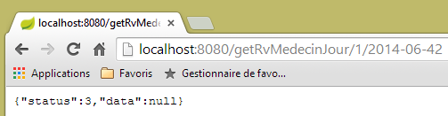 |
oder auch diese mit einem falschen Arzt:
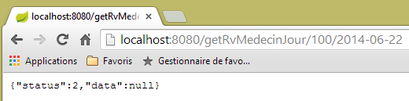 |
2.12.11. URL [/getAgendaMedecinJour/{idMedecin}/{jour}]
Die URL und [/getAgendaMedecinJour/{idMedecin}/{jour}] werden vom Controller [RdvMedecinsController] wie folgt verarbeitet:
@RequestMapping(value = "/getAgendaMedecinJour/{idMedecin}/{jour}", method = RequestMethod.GET)
public Reponse getAgendaMedecinJour(@PathVariable("idMedecin") long idMedecin, @PathVariable("jour") String jour) {
// Anwendungsstatus
if (messages != null) {
return new Reponse(-1, messages);
}
// Das Datum wird überprüft
Date jourAgenda = null;
SimpleDateFormat sdf = new SimpleDateFormat("yyyy-MM-dd");
sdf.setLenient(false);
try {
jourAgenda = sdf.parse(jour);
} catch (ParseException e) {
return new Reponse(3, new String[] { String.format("jour [%s] invalide", jour) });
}
// Den Arzt abrufen
Reponse réponse = getMedecin(idMedecin);
if (réponse.getStatus() != 0) {
return réponse;
}
Medecin médecin = (Medecin) réponse.getData();
// seinen Terminkalender abrufen
AgendaMedecinJour agenda = null;
try {
agenda = application.getAgendaMedecinJour(médecin.getId(), jourAgenda);
} catch (Exception e1) {
return new Reponse(4, Static.getErreursForException(e1));
}
// OK
return new Reponse(0, Static.getMapForAgendaMedecinJour(agenda));
}
}
- In Zeile 30 wird ein Objekt vom Typ List<Map<String,Object> zurückgegeben.
Die Methode [Static.getMapForAgendaMedecinJour] lautet wie folgt:
// AgendaMedecinJour --> Karte
public static Map<String, Object> getMapForAgendaMedecinJour(AgendaMedecinJour agenda) {
// Gibt es etwas zu tun?
if (agenda == null) {
return null;
}
// Wörterbuch <String,Object>
Map<String, Object> hash = new HashMap<String, Object>();
hash.put("medecin", agenda.getMedecin());
hash.put("jour", new SimpleDateFormat("yyyy-MM-dd").format(agenda.getJour()));
List<Map<String, Object>> créneaux = new ArrayList<Map<String, Object>>();
for (CreneauMedecinJour créneau : agenda.getCreneauxMedecinJour()) {
créneaux.add(getMapForCreneauMedecinJour(créneau));
}
hash.put("creneauxMedecin", créneaux);
// Das Wörterbuch wird zurückgegeben
return hash;
}
Das erstellte Dictionary hat drei Felder:
- [medecin]: der Arzt, dem der Terminkalender gehört. Diese Information wurde beibehalten, da sie nur einmal vorkommt, während sie in den vorherigen Fällen in jeder Zeichenkette JSON wiederholt wurde;
- [jour]: der Tag des Terminkalenders;
- [creneauxMedecin]: die Liste der Zeitfenster des Arztes mit einem eventuellen Termin in diesem Zeitfenster;
Die in Zeile 13 verwendete Methode [getMapForCreneauMedecinJour] lautet wie folgt:
// CreneauMedecinJour --> Map
public static Map<String, Object> getMapForCreneauMedecinJour(CreneauMedecinJour créneau) {
// Was ist zu tun?
if (créneau == null) {
return null;
}
// Wörterbuch <String,Object>
Map<String, Object> hash = new HashMap<String, Object>();
hash.put("creneau", getMapForCreneau(créneau.getCreneau()));
hash.put("rv", getMapForRv(créneau.getRv()));
// Das Wörterbuch wird zurückgegeben
return hash;
}
- Zeilen 9–10: Es werden die bereits behandelten Wörterbücher für die Typen [Creneau] und [Rv] verwendet, die daher kein Objekt [Medecin] enthalten;
Die erhaltenen Ergebnisse lauten wie folgt:
|
oder diese, falls das Datum falsch ist:
 |
oder diese, wenn die Arztnummer ungültig ist:
 |
2.12.12. Die URL [/getMedecinById/{id}]
URL und [/getMedecinById/{id}] werden vom Prüfer [RdvMedecinsController] wie folgt verarbeitet:
@RequestMapping(value = "/getMedecinById/{id}", method = RequestMethod.GET)
public Reponse getMedecinById(@PathVariable("id") long id) {
// Anwendungsstatus
if (messages != null) {
return new Reponse(-1, messages);
}
// Den Arzt abrufen
return getMedecin(id);
}
Zeile 8: Die Methode [getMedecin] lautet wie folgt:
private Reponse getMedecin(long id) {
// Den Arzt abrufen
Medecin médecin = null;
try {
médecin = application.getMedecinById(id);
} catch (Exception e1) {
return new Reponse(1, Static.getErreursForException(e1));
}
// Arzt vorhanden?
if (médecin == null) {
return new Reponse(2, null);
}
// ok
return new Reponse(0, médecin);
}
Die erzielten Ergebnisse lauten wie folgt:
|
oder diese, falls die Arztnummer falsch ist:
 |
2.12.13. URL [/getClientById/{id}]
URL [/getClientById/{id}] wird vom Controller [RdvMedecinsController] wie folgt verarbeitet:
@RequestMapping(value = "/getClientById/{id}", method = RequestMethod.GET)
public Reponse getClientById(@PathVariable("id") long id) {
// Anwendungsstatus
if (messages != null) {
return new Reponse(-1, messages);
}
// Kunde wird abgerufen
return getClient(id);
}
Zeile 8: Die Methode [getClient] lautet wie folgt:
private Reponse getClient(long id) {
// Kunde wird abgerufen
Client client = null;
try {
client = application.getClientById(id);
} catch (Exception e1) {
return new Reponse(1, Static.getErreursForException(e1));
}
// Kunde vorhanden?
if (client == null) {
return new Reponse(2, null);
}
// ok
return new Reponse(0, client);
}
Die erzielten Ergebnisse lauten wie folgt:
|
oder diese, falls die Kundennummer falsch ist:
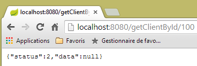 |
2.12.14. URL [/getCreneauById/{id}]
URL [/getCreneauById/{id}] wird durch die folgende Methode des Controllers [RdvMedecinsController] verarbeitet:
@RequestMapping(value = "/getCreneauById/{id}", method = RequestMethod.GET)
public Reponse getCreneauById(@PathVariable("id") long id) {
// Anwendungsstatus
if (messages != null) {
return new Reponse(-1, messages);
}
// Termin wird abgerufen
Reponse réponse = getCreneau(id);
if (réponse.getStatus() == 0) {
réponse.setData(Static.getMapForCreneau((Creneau) réponse.getData()));
}
// Ergebnis
return réponse;
}
Zeile 8: Die Methode [getCreneau] lautet wie folgt:
private Reponse getCreneau(long id) {
// Zeitfenster wird abgerufen
Creneau créneau = null;
try {
créneau = application.getCreneauById(id);
} catch (Exception e1) {
return new Reponse(1, Static.getErreursForException(e1));
}
// Zeitfenster vorhanden?
if (créneau == null) {
return new Reponse(2, null);
}
// OK
return new Reponse(0, créneau);
}
Die erzielten Ergebnisse lauten wie folgt:
|
oder diese, falls die Zeitfensternummer falsch ist:
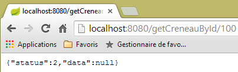 |
2.12.15. URL [/getRvById/{id}]
Die URL [/getRvById/{id}] wird durch die folgende Methode des Controllers [RdvMedecinsController] verarbeitet:
@RequestMapping(value = "/getRvById/{id}", method = RequestMethod.GET)
public Reponse getRvById(@PathVariable("id") long id) {
// Anwendungsstatus
if (messages != null) {
return new Reponse(-1, messages);
}
// Termin wird abgerufen
Reponse réponse = getRv(id);
if (réponse.getStatus() == 0) {
réponse.setData(Static.getMapForRv2((Rv) réponse.getData()));
}
// Ergebnis
return réponse;
}
Zeile 8: Die Methode [getRv] lautet wie folgt:
private Reponse getRv(long id) {
// Rv wird abgerufen
Rv rv = null;
try {
rv = application.getRvById(id);
} catch (Exception e1) {
return new Reponse(1, Static.getErreursForException(e1));
}
// Rv vorhanden?
if (rv == null) {
return new Reponse(2, null);
}
// OK
return new Reponse(0, rv);
}
In Zeile 10 lautet die Methode [Static.getMapForRv2] wie folgt:
// Rv --> Karte
public static Map<String, Object> getMapForRv2(Rv rv) {
// Muss etwas getan werden?
if (rv == null) {
return null;
}
// Wörterbuch <String,Object>
Map<String, Object> hash = new HashMap<String, Object>();
hash.put("id", rv.getId());
hash.put("idClient", rv.getIdClient());
hash.put("idCreneau", rv.getIdCreneau());
// Das Wörterbuch wird zurückgegeben
return hash;
}
Die erhaltenen Ergebnisse lauten wie folgt:
|
oder diese, falls die Terminnummer falsch ist:
 |
2.12.16. URL [/ajouterRv]
URL [/ajouterRv] wird durch die folgende Methode des Controllers [RdvMedecinsController] verarbeitet:
@RequestMapping(value = "/ajouterRv", method = RequestMethod.POST, consumes = "application/json; charset=UTF-8")
public Reponse ajouterRv(@RequestBody PostAjouterRv post) {
// Anwendungsstatus
if (messages != null) {
return new Reponse(-1, messages);
}
// Die gesendeten Werte werden abgerufen
String jour = post.getJour();
long idCreneau = post.getIdCreneau();
long idClient = post.getIdClient();
// Das Datum wird überprüft
Date jourAgenda = null;
SimpleDateFormat sdf = new SimpleDateFormat("yyyy-MM-dd");
sdf.setLenient(false);
try {
jourAgenda = sdf.parse(jour);
} catch (ParseException e) {
return new Reponse(6, null);
}
// Zeitfenster abrufen
Reponse réponse = getCreneau(idCreneau);
if (réponse.getStatus() != 0) {
return réponse;
}
Creneau créneau = (Creneau) réponse.getData();
// Der Kunde wird abgerufen
réponse = getClient(idClient);
if (réponse.getStatus() != 0) {
réponse.incrStatusBy(2);
return réponse;
}
Client client = (Client) réponse.getData();
// Der Termin wird hinzugefügt
Rv rv = null;
try {
rv = application.ajouterRv(jourAgenda, créneau, client);
} catch (Exception e1) {
return new Reponse(5, Static.getErreursForException(e1));
}
// die Antwort wird zurückgegeben
return new Reponse(0, Static.getMapForRv(rv));
}
Das ist nichts, was wir nicht schon gesehen hätten. In Zeile 41 wird der Termin zurückgegeben, der in Zeile 36 hinzugefügt wurde.
Die Ergebnisse sehen beim Client [Advanced Rest Client] wie folgt aus:
 |
oder so, wenn man beispielsweise eine nicht vorhandene Terminnummer angibt:
 |
|
2.12.17. URL [/supprimerRv]
URL [/supprimerRv] wird von der folgenden Methode des Controllers [RdvMedecinsController] verarbeitet:
@RequestMapping(value = "/supprimerRv", method = RequestMethod.POST, consumes = "application/json; charset=UTF-8")
public Reponse supprimerRv(@RequestBody PostSupprimerRv post) {
// Anwendungsstatus
if (messages != null) {
return new Reponse(-1, messages);
}
// die übermittelten Werte werden abgerufen
long idRv = post.getIdRv();
// Rv abrufen
Reponse réponse = getRv(idRv);
if (réponse.getStatus() != 0) {
return réponse;
}
// Rv wird gelöscht
try {
application.supprimerRv(idRv);
} catch (Exception e1) {
return new Reponse(3, Static.getErreursForException(e1));
}
// OK
return new Reponse(0, null);
}
Die erhaltenen Ergebnisse lauten wie folgt:
 |
oder diese, falls die Terminnummer nicht existiert:
 |
Damit sind wir mit dem Controller fertig. Nun sehen wir uns an, wie das Projekt konfiguriert wird.
2.12.18. Konfiguration des Webdienstes
 |
Die Konfigurationsklasse [AppConfig] sieht wie folgt aus:
package rdvmedecins.web.config;
import org.springframework.boot.autoconfigure.EnableAutoConfiguration;
import org.springframework.context.annotation.ComponentScan;
import org.springframework.context.annotation.Import;
import rdvmedecins.config.DomainAndPersistenceConfig;
@EnableAutoConfiguration
@ComponentScan(basePackages = { "rdvmedecins.web" })
@Import({ DomainAndPersistenceConfig.class })
public class AppConfig {
}
- Zeile 9: Wir wechseln in den Modus [AutoConfiguration], damit Spring Boot das Projekt anhand der Archive konfigurieren kann, die es im Classpath des Projekts findet;
- Zeile 10: Es wird festgelegt, dass die Spring-Komponenten im Paket [rdvmedecins.web] und dessen Unterpaketen gesucht werden sollen. Auf diese Weise werden die Komponenten
- [@RestController RdvMedecinsController] im Paket [rdvmedecins.web.controllers];
- [@Component ApplicationModel] im Paket [rdvmedecins.web.models];
- Zeile 11: Die Klasse [DomainAndPersistenceConfig] wird importiert, die das Projekt [rdvmedecins-metier-dao] konfiguriert, um Zugriff auf die Beans dieses Projekts zu erhalten;
2.12.19. Die ausführbare Klasse des Webdienstes
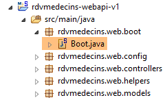 |
Die Klasse [Boot] lautet wie folgt:
package rdvmedecins.web.boot;
import org.springframework.boot.SpringApplication;
import rdvmedecins.web.config.AppConfig;
public class Boot {
public static void main(String[] args) {
SpringApplication.run(AppConfig.class, args);
}
}
In Zeile 10 wird die statische Methode [SpringApplication.run] mit der Projektkonfigurationsklasse [AppConfig] als erstem Parameter aufgerufen. Diese Methode führt die automatische Konfiguration des Projekts durch, startet den in den Abhängigkeiten enthaltenen eingebetteten Tomcat-Server und stellt dort den Controller [RdvMedecinsController] bereit.
Die Protokolle bei der Ausführung lauten wie folgt:
- Zeile 17: Der Tomcat-Server wird gestartet;
- Zeilen 23–31: Die [métier, DAO, JPA]-Schichten werden initialisiert;
- Zeile 34: Die Methode, die URL [/getRvMedecinJour/{idMedecin}/{jour}] verarbeitet, wurde erkannt. Dieser Prozess der Erkennung der Controller-Methoden wiederholt sich bis Zeile 44;
- Zeile 52: Das Spring-Servlet MVC [DispatcherServlet] ist bereit, Anfragen von Web-Clients zu beantworten;
Wir verfügen nun über einen betriebsbereiten Webdienst, der über einen Webclient abgefragt werden kann. Als Nächstes befassen wir uns mit der Absicherung dieses Dienstes: Wir möchten, dass nur bestimmte Personen die Arzttermine verwalten können. Dazu werden wir das Spring Security-Framework verwenden, einen Teil des Spring-Ökosystems.
2.13. Einführung in Spring Security
Wir werden erneut ein Spring-Handbuch importieren, indem wir die folgenden Schritte 1 bis 3 befolgen:
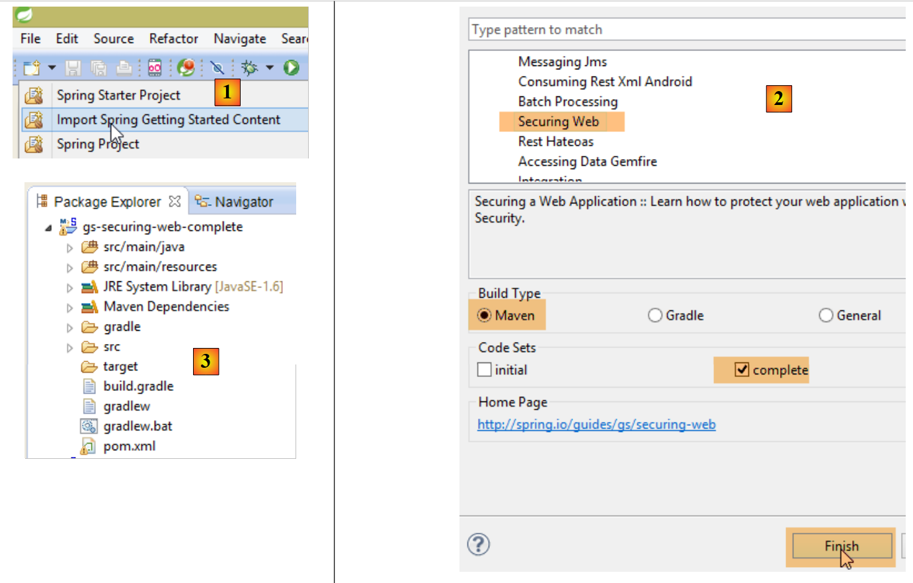 |
 |
Das Projekt besteht aus folgenden Elementen:
- Im Ordner „[templates]“ befinden sich die Seiten „HTML“ des Projekts;
- [Application]: ist die ausführbare Klasse des Projekts;
- [MvcConfig]: ist die Spring-Konfigurationsklasse MVC;
- [WebSecurityConfig]: ist die Spring-Security-Konfigurationsklasse;
2.13.1. Maven-Konfiguration
Das Projekt [3] ist ein Maven-Projekt. Sehen wir uns die Datei [pom.xml] an, um die Abhängigkeiten zu ermitteln:
<parent>
<groupId>org.springframework.boot</groupId>
<artifactId>spring-boot-starter-parent</artifactId>
<version>1.1.1.RELEASE</version>
</parent>
<dependencies>
<dependency>
<groupId>org.springframework.boot</groupId>
<artifactId>spring-boot-starter-thymeleaf</artifactId>
</dependency>
<dependency>
<groupId>org.springframework.boot</groupId>
<artifactId>spring-boot-starter-security</artifactId>
</dependency>
</dependencies>
- Zeilen 1–5: Das Projekt ist ein Spring-Boot-Projekt;
- Zeilen 8–11: Abhängigkeit vom Framework [Thymeleaf], mit dem dynamische HTML-Seiten erstellt werden können. Dieses Framework kann die JSP-Seiten (Java Server Pages) ersetzen, die bis vor kurzem standardmäßig verwendet wurden, sowie das Spring-View-Framework MVC;
- Zeilen 12–15: Abhängigkeit vom Spring Security-Framework;
2.13.2. Die Thymeleaf-Ansichten
 |
Die Ansicht [home.html] sieht wie folgt aus:
 |
<!DOCTYPE html>
<html xmlns="http://www.w3.org/1999/xhtml"
xmlns:th="http://www.thymeleaf.org"
xmlns:sec="http://www.thymeleaf.org/thymeleaf-extras-springsecurity3">
<head>
<title>Spring Security Example</title>
</head>
<body>
<h1>Welcome!</h1>
<p>
Click <a th:href="@{/hello}">here</a> to see a greeting.
</p>
</body>
</html>
- Die Attribute [th:xx] sind Thymeleaf-Attribute. Sie werden von Thymeleaf interpretiert, bevor die Seite HTML an den Client gesendet wird. Der Client sieht sie nicht;
- Zeile 12: Das Attribut [th:href="@{/hello}"] generiert das Attribut [href] des Tags <a>. Der Wert [@{/hello}] generiert den Pfad [<context>/hello], wobei [context] der Kontext der Webanwendung ist;
Der generierte Code HTML lautet wie folgt:
- Zeile 10: Der Anwendungskontext ist das Stammverzeichnis /;
Die Ansicht [hello.html] lautet wie folgt:
 |
<!DOCTYPE html>
<html xmlns="http://www.w3.org/1999/xhtml"
xmlns:th="http://www.thymeleaf.org"
xmlns:sec="http://www.thymeleaf.org/thymeleaf-extras-springsecurity3">
<head>
<title>Hello World!</title>
</head>
<body>
<h1 th:inline="text">Hello [[${#httpServletRequest.remoteUser}]]!</h1>
<form th:action="@{/logout}" method="post">
<input type="submit" value="Sign Out" />
</form>
</body>
</html>
- Zeile 9: Das Attribut [th:inline="text"] generiert den Text des Tags <h1>. Dieser Text enthält einen $-Ausdruck, der ausgewertet werden muss. Das Element [[${#httpServletRequest.remoteUser}]] ist der Wert des Attributs [RemoteUser] der aktuellen Abfrage HTTP. Es handelt sich dabei um den Namen des angemeldeten Benutzers;
- Zeile 10: ein Formular HTML. Das Attribut [th:action="@{/logout}"] generiert das Attribut [action] des Tags [form]. Der Wert [@{/logout}] generiert den Pfad [<context>/logout], wobei [context] der Kontext der Webanwendung ist;
Der generierte Code HTML lautet wie folgt:
- Zeile 8: die Übersetzung von „Hello [[${#httpServletRequest.remoteUser}]]!“;
- Zeile 9: die Übersetzung von @{/logout};
- Zeile 11: ein verstecktes Feld mit dem Namen (Attribut name) _csrf;
Die letzte Ansicht [login.html] sieht wie folgt aus:
 |
<!DOCTYPE html>
<html xmlns="http://www.w3.org/1999/xhtml"
xmlns:th="http://www.thymeleaf.org"
xmlns:sec="http://www.thymeleaf.org/thymeleaf-extras-springsecurity3">
<head>
<title>Spring Security Example</title>
</head>
<body>
<div th:if="${param.error}">Invalid username and password.</div>
<div th:if="${param.logout}">You have been logged out.</div>
<form th:action="@{/login}" method="post">
<div>
<label> User Name : <input type="text" name="username" />
</label>
</div>
<div>
<label> Password: <input type="password" name="password" />
</label>
</div>
<div>
<input type="submit" value="Sign In" />
</div>
</form>
</body>
</html>
- Zeile 9: Das Attribut [th:if="${param.error}"] sorgt dafür, dass das Tag <div> nur dann generiert wird, wenn das URL, das die Anmeldeseite anzeigt, den Parameter [error] (http://context/login?error) enthält;
- Zeile 10: Das Attribut [th:if="${param.logout}"] bewirkt, dass das Tag <div> nur dann generiert wird, wenn das URL, das die Anmeldeseite anzeigt, den Parameter [logout] (http://context/login?logout) enthält;
- Zeilen 11–23: ein Formular HTML;
- Zeile 11: Das Formular wird an URL [<context>/login] gesendet, wobei <context> der Kontext der Webanwendung ist;
- Zeile 13: ein Eingabefeld mit dem Namen [username];
- Zeile 17: ein Eingabefeld mit dem Namen [password];
Der generierte Code HTML lautet wie folgt:
In Zeile 21 ist zu beachten, dass Thymeleaf ein verstecktes Feld mit dem Namen [_csrf] hinzugefügt hat.
2.13.3. Spring-Konfiguration MVC
 |
Die Klasse [MvcConfig] konfiguriert das Spring-Framework MVC:
package hello;
import org.springframework.context.annotation.Configuration;
import org.springframework.web.servlet.config.annotation.ViewControllerRegistry;
import org.springframework.web.servlet.config.annotation.WebMvcConfigurerAdapter;
@Configuration
public class MvcConfig extends WebMvcConfigurerAdapter {
@Override
public void addViewControllers(ViewControllerRegistry registry) {
registry.addViewController("/home").setViewName("home");
registry.addViewController("/").setViewName("home");
registry.addViewController("/hello").setViewName("hello");
registry.addViewController("/login").setViewName("login");
}
}
- Zeile 7: Die Annotation [@Configuration] macht die Klasse [MvcConfig] zu einer Konfigurationsklasse;
- Zeile 8: Die Klasse [MvcConfig] erweitert die Klasse [WebMvcConfigurerAdapter], um bestimmte Methoden neu zu definieren;
- Zeile 10: Neudefinition einer Methode der übergeordneten Klasse;
- Zeilen 11–16: Die Methode [addViewControllers] ermöglicht es, URL mit Ansichten HTML zu verknüpfen. Dabei werden folgende Verknüpfungen hergestellt:
Ansicht | |
/templates/home.html | |
/templates/hello.html | |
/templates/login.html |
Die Endung [html] und der Ordner [templates] sind die von Thymeleaf verwendeten Standardwerte. Sie können über die Konfiguration geändert werden. Der Ordner [templates] muss sich im Stammverzeichnis des Classpaths des Projekts befinden:
 |
Oberhalb von [1] befinden sich die Ordner [main] und [resources], die beide Quellordner (source folders) sind. Das bedeutet, dass sich ihr Inhalt im Stammverzeichnis des Classpaths des Projekts befindet. In [2] befinden sich die Ordner [hello] und [templates] also im Stammverzeichnis des Classpaths.
2.13.4. Spring Security-Konfiguration
 |
Die Klasse [WebSecurityConfig] konfiguriert das Spring Security-Framework:
package hello;
import org.springframework.context.annotation.Configuration;
import org.springframework.security.config.annotation.authentication.builders.AuthenticationManagerBuilder;
import org.springframework.security.config.annotation.web.builders.HttpSecurity;
import org.springframework.security.config.annotation.web.configuration.WebSecurityConfigurerAdapter;
import org.springframework.security.config.annotation.web.servlet.configuration.EnableWebMvcSecurity;
@Configuration
@EnableWebMvcSecurity
public class WebSecurityConfig extends WebSecurityConfigurerAdapter {
@Override
protected void configure(HttpSecurity http) throws Exception {
http.authorizeRequests().antMatchers("/", "/home").permitAll().anyRequest().authenticated();
http.formLogin().loginPage("/login").permitAll().and().logout().permitAll();
}
@Override
protected void configure(AuthenticationManagerBuilder auth) throws Exception {
auth.inMemoryAuthentication().withUser("user").password("password").roles("USER");
}
}
- Zeile 9: Die Annotation [@Configuration] macht die Klasse [WebSecurityConfig] zu einer Konfigurationsklasse;
- Zeile 10: Die Annotation [@EnableWebSecurity] macht die Klasse [WebSecurityConfig] zu einer Spring-Security-Konfigurationsklasse;
- Zeile 11: Die Klasse [WebSecurity] erweitert die Klasse [WebSecurityConfigurerAdapter], um bestimmte Methoden neu zu definieren;
- Zeile 12: Neudefinition einer Methode der übergeordneten Klasse;
- Zeilen 13–16: Die Methode [configure(HttpSecurity http)] wird neu definiert, um die Zugriffsrechte auf die verschiedenen URL der Anwendung festzulegen;
- Zeile 14: Die Methode [http.authorizeRequests()] ermöglicht es, URL mit Zugriffsrechten zu verknüpfen. Dabei werden folgende Verknüpfungen hergestellt:
Regel | Code | |
Zugriff ohne Authentifizierung | | |
Zugriff nur nach Authentifizierung |
- Zeile 15: Legt die Authentifizierungsmethode fest. Die Authentifizierung erfolgt über ein Formular (URL, [/login]), das für alle zugänglich ist ([http.formLogin().loginPage("/login").permitAll()]). Die Abmeldung (Logout) ist ebenfalls für alle zugänglich.
- Zeilen 19–21: definieren die Methode [configure(AuthenticationManagerBuilder auth)] neu, die die Benutzer verwaltet;
- Zeile 20: Die Authentifizierung erfolgt mit fest definierten Benutzern [auth.inMemoryAuthentication()]. Ein Benutzer wird hier mit dem Login [user], dem Passwort [password] und der Rolle [USER] definiert. Benutzern mit derselben Rolle können die gleichen Rechte gewährt werden;
2.13.5. Ausführbare Klasse
 |
Die Klasse [Application] lautet wie folgt:
package hello;
import org.springframework.boot.autoconfigure.EnableAutoConfiguration;
import org.springframework.boot.SpringApplication;
import org.springframework.context.annotation.ComponentScan;
import org.springframework.context.annotation.Configuration;
@EnableAutoConfiguration
@Configuration
@ComponentScan
public class Application {
public static void main(String[] args) throws Throwable {
SpringApplication.run(Application.class, args);
}
}
- Zeile 8: Die Annotation [@EnableAutoConfiguration] weist Spring Boot (Zeile 3) an, die Konfiguration vorzunehmen, die der Entwickler nicht explizit vorgenommen hat;
- Zeile 9: macht die Klasse [Application] zu einer Spring-Konfigurationsklasse;
- Zeile 10: Fordert das Durchsuchen des Verzeichnisses der Klasse [Application] an, um nach Spring-Komponenten zu suchen. Die beiden Klassen [MvcConfig] und [WebSecurityConfig] werden somit erkannt, da sie die Annotation [@Configuration] tragen;
- Zeile 13: Die Methode [main] der ausführbaren Klasse;
- Zeile 14: Die statische Methode [SpringApplication.run] wird mit der Konfigurationsklasse [Application] als Parameter ausgeführt. Wir sind diesem Prozess bereits begegnet und wissen, dass der in den Maven-Abhängigkeiten des Projekts enthaltene eingebettete Tomcat-Server gestartet und das Projekt darauf bereitgestellt wird. Wir haben gesehen, dass vier URL von [/, /home, /login, /hello] verwaltet wurden und dass einige durch Zugriffsrechte geschützt waren.
2.13.6. Tests der Anwendung
Beginnen wir damit, die URL [/] abzufragen, die eine der vier akzeptierten URL ist. Sie ist mit der Ansicht [/templates/home.html] verknüpft:
 |
Die angeforderte URL [/] ist für alle zugänglich. Deshalb haben wir sie erhalten. Der Link [here] lautet wie folgt:
Die URL [/hello] wird angefordert, sobald man auf den Link klickt. Diese ist geschützt:
Regel | Code | |
Zugriff ohne Authentifizierung | | |
Zugriff nur nach Authentifizierung |
Um darauf zugreifen zu können, muss man authentifiziert sein. Spring Security leitet den Browser des Clients dann auf die Authentifizierungsseite weiter. Gemäß der angezeigten Konfiguration handelt es sich dabei um die Seite URL [/login]. Diese ist für alle zugänglich:
http.formLogin().loginPage("/login").permitAll().and().logout().permitAll();
Wir erhalten also [1]:
 |
Der Quellcode der erhaltenen Seite lautet wie folgt:
- In Zeile 7 erscheint ein verstecktes Feld, das auf der ursprünglichen Seite [login.html] nicht vorhanden ist. Es wurde von Thymeleaf hinzugefügt. Dieser Code mit der Bezeichnung CSRF (Cross-Site-Request-Forgery) dient dazu, eine Sicherheitslücke zu schließen. Dieses Token muss zusammen mit der Authentifizierung an Spring Security zurückgesendet werden, damit diese akzeptiert wird;
Wir erinnern uns, dass von Spring Security nur der Benutzer „user/password“ erkannt wird. Wenn wir in [2] etwas anderes eingeben, erhalten wir dieselbe Seite mit einer Fehlermeldung in [3]. Spring Security hat den Browser auf die Seite URL [http://localhost:8080/login?error] umgeleitet. Das Vorhandensein des Parameters [error] hat die Anzeige des Tags ausgelöst:
<div th:if="${param.error}">Invalid username and password.</div>
Geben wir nun die erwarteten Werte für „user/password“ ein: [4]:
 |
- in [4], melden wir uns an;
- bei [5] leitet uns Spring Security zu URL und [/hello] weiter, da wir URL angefordert hatten, als wir zur Anmeldeseite weitergeleitet wurden. Die Identität des Benutzers wurde in der folgenden Zeile von [hello.html] angezeigt:
Die Seite [5] zeigt das folgende Formular an:
<form th:action="@{/logout}" method="post">
<input type="submit" value="Sign Out" />
</form>
Wenn man auf die Schaltfläche [Sign Out] klickt, wird ein POST auf der Seite URL [/logout] erstellt. Diese ist ebenso wie die Dateien „URL“ und „[/login]“ für alle zugänglich:
http.formLogin().loginPage("/login").permitAll().and().logout().permitAll();
In unserer Zuordnung URL / Ansichten haben wir für die URL und [/logout] nichts definiert. Was wird passieren? Probieren wir es aus:
 |
- in [6] klicken wir auf die Schaltfläche [Sign Out];
- zu [7]: Wir sehen, dass wir zu URL [http://localhost:8080/login?logout] weitergeleitet wurden. Diese Weiterleitung wurde von Spring Security veranlasst. Das Vorhandensein des Parameters [logout] in URL hat dazu geführt, dass die folgende Zeile in der Ansicht angezeigt wurde:
<div th:if="${param.logout}">You have been logged out.</div>
2.13.7. Fazit
Im vorangegangenen Beispiel hätten wir die Webanwendung zunächst schreiben und anschließend sichern können. Spring Security ist nicht aufdringlich. Man kann die Sicherheit einer bereits geschriebenen Webanwendung nachträglich einrichten. Außerdem haben wir Folgendes festgestellt:
- Es ist möglich, eine Authentifizierungsseite zu definieren;
- Die Authentifizierung muss mit dem von Spring Security ausgegebenen Token CSRF erfolgen;
- Wenn die Authentifizierung fehlschlägt, wird man zur Authentifizierungsseite weitergeleitet, wobei zusätzlich ein „error“-Parameter im Token „URL“ enthalten ist;
- Wenn die Authentifizierung erfolgreich ist, wird man nach der Authentifizierung auf die angeforderte Seite weitergeleitet. Wenn die Authentifizierungsseite direkt aufgerufen wird, ohne eine Zwischenseite zu durchlaufen, leitet Spring Security uns zu URL [/] weiter (dieser Fall wurde nicht vorgestellt);
- die Abmeldung erfolgt durch Aufruf der Seite URL [/logout] mit einem POST. Spring Security leitet uns dann mit dem Parameter „logout“ im URL auf die Authentifizierungsseite weiter;
All diese Schlussfolgerungen basieren auf dem Standardverhalten von Spring Security. Dieses Verhalten lässt sich durch Konfiguration ändern, indem bestimmte Methoden der Klasse [WebSecurityConfigurerAdapter] neu definiert werden.
Das vorherige Tutorial wird uns im weiteren Verlauf kaum helfen. Wir werden nämlich Folgendes verwenden:
- eine Datenbank zum Speichern der Benutzer, ihrer Passwörter und ihrer Rollen;
- eine Authentifizierung über den Header HTTP;
Es gibt relativ wenige Tutorials für das, was wir hier umsetzen wollen. Die Lösung, die vorgeschlagen wird, ist eine Zusammenstellung von Code, der hier und da gefunden wurde.
2.14. Einrichtung der Sicherheit für den Termin-Webdienst
2.14.1. Die Datenbank
Die Datenbank [rdvmedecins] wird erweitert, um Benutzer, deren Passwörter und deren Rollen zu berücksichtigen. Es kommen drei neue Tabellen hinzu:

Tabelle [USERS]: die Benutzer
- ID: Primärschlüssel;
- VERSION: Spalte für die Versionsverwaltung der Zeile;
- IDENTITY: eine beschreibende Kennung des Benutzers;
- LOGIN: der Benutzername des Benutzers;
- PASSWORD: sein Passwort;
In der Tabelle USERS werden Passwörter nicht im Klartext gespeichert:
 |
Der Algorithmus, der die Passwörter verschlüsselt, ist der Algorithmus BCRYPT.
Tabelle [ROLES]: die Rollen
- ID: Primärschlüssel;
- VERSION: Versionsspalte der Zeile;
- NAME: Name der Rolle. Standardmäßig erwartet Spring Security Namen in der Form ROLE_XX, zum Beispiel ROLE_ADMIN oder ROLE_GUEST;
 |
Tabelle [USERS_ROLES]: Verknüpfungstabelle USERS / ROLES
Ein Benutzer kann mehrere Rollen haben, eine Rolle kann mehrere Benutzer umfassen. Es besteht eine Mehr-zu-Mehr-Beziehung, die durch die Tabelle [USERS_ROLES] dargestellt wird.
- ID: Primärschlüssel;
- VERSION: Versionsspalte der Zeile;
- USER_ID: ID eines Benutzers;
- ROLE_ID: ID einer Rolle;
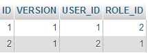 |
Da wir die Datenbank ändern, müssen alle Ebenen des Projekts [métier, DAO, JPA] angepasst werden:
 |
2.14.2. Das neue Eclipse-Projekt [métier, DAO, JPA]
Wir duplizieren das ursprüngliche Projekt [rdvmedecins-metier-dao] als [rdvmedecins-metier-dao-v2]:
 |
- in [1]: das neue Projekt;
- in [2]: Die durch die Berücksichtigung der Sicherheit vorgenommenen Änderungen wurden in einem einzigen Paket [rdvmedecins.security] zusammengefasst. Diese neuen Elemente gehören zu den Ebenen [JPA] und [DAO], aber der Einfachheit halber habe ich sie in einem einzigen Paket zusammengefasst.
2.14.3. Die neuen Elemente [JPA]
 |
Die Ebene JPA definiert drei neue Entitäten:
 |
Die Klasse [User] ist das Abbild der Tabelle [USERS]:
package rdvmedecins.entities;
import javax.persistence.Column;
import javax.persistence.Entity;
import javax.persistence.Table;
@Entity
@Table(name = "USERS")
public class User extends AbstractEntity {
private static final long serialVersionUID = 1L;
// Eigenschaften
private String identity;
private String login;
private String password;
// Hersteller
public User() {
}
public User(String identity, String login, String password) {
this.identity = identity;
this.login = login;
this.password = password;
}
// Identität
@Override
public String toString() {
return String.format("User[%s,%s,%s]", identity, login, password);
}
// Getter und Setter
....
}
- Zeile 9: Die Klasse erweitert die Klasse [AbstractEntity], die bereits für die anderen Entitäten verwendet wird;
- Zeilen 13–15: Es werden keine Spaltennamen angegeben, da diese denselben Namen wie die ihnen zugeordneten Felder tragen;
Die Klasse [Role] entspricht der Tabelle [ROLES]:
package rdvmedecins.entities;
import javax.persistence.Column;
import javax.persistence.Entity;
import javax.persistence.Table;
@Entity
@Table(name = "ROLES")
public class Role extends AbstractEntity {
private static final long serialVersionUID = 1L;
// Eigenschaften
private String name;
// Hersteller
public Role() {
}
public Role(String name) {
this.name = name;
}
// Identität
@Override
public String toString() {
return String.format("Role[%s]", name);
}
// Getter und Setter
...
}
Die Klasse [UserRole] ist das Abbild der Tabelle [USERS_ROLES]:
package rdvmedecins.entities;
import javax.persistence.Entity;
import javax.persistence.JoinColumn;
import javax.persistence.ManyToOne;
import javax.persistence.Table;
@Entity
@Table(name = "USERS_ROLES")
public class UserRole extends AbstractEntity {
private static final long serialVersionUID = 1L;
// Ein UserRole verweist auf einen User
@ManyToOne
@JoinColumn(name = "USER_ID")
private User user;
// Ein UserRole verweist auf eine Rolle
@ManyToOne
@JoinColumn(name = "ROLE_ID")
private Role role;
// Getter und Setter
...
}
- Zeilen 15–17: definieren den Fremdschlüssel von der Tabelle [USERS_ROLES] zur Tabelle [USERS];
- Zeilen 19–21: definieren den Fremdschlüssel von der Tabelle [USERS_ROLES] zur Tabelle [ROLES];
2.14.4. Änderungen an der Ebene [DAO]
 |
Die Ebene [DAO] wird um drei neue [Repository] erweitert:
 |
Die Schnittstelle [UserRepository] verwaltet den Zugriff auf die Entitäten [User]:
package rdvmedecins.repositories;
import org.springframework.data.jpa.repository.Query;
import org.springframework.data.repository.CrudRepository;
import rdvmedecins.entities.Role;
import rdvmedecins.entities.User;
public interface UserRepository extends CrudRepository<User, Long> {
// Liste der Rollen eines Benutzers, der durch seine ID identifiziert wird
@Query("select ur.role from UserRole ur where ur.user.id=?1")
Iterable<Role> getRoles(long id);
// Liste der Rollen eines Benutzers, der durch seinen Benutzernamen und sein Passwort identifiziert wird
@Query("select ur.role from UserRole ur where ur.user.login=?1 and ur.user.password=?2")
Iterable<Role> getRoles(String login, String password);
// Suche nach einem Benutzer anhand seines Logins
User findUserByLogin(String login);
}
- Zeile 9: Die Schnittstelle [UserRepository] erweitert die Schnittstelle [CrudRepository] von Spring Data (Zeile 4);
- Zeilen 12–13: Die Methode [getRoles(User user)] ermöglicht es, alle Rollen eines Benutzers abzurufen, der durch seine [id] identifiziert wird
- Zeilen 16–17: dasselbe, jedoch für einen Benutzer, der durch seinen Benutzernamen und sein Passwort identifiziert wird;
Die Schnittstelle [RoleRepository] verwaltet den Zugriff auf die Entitäten [Role]:
package rdvmedecins.security;
import org.springframework.data.repository.CrudRepository;
public interface RoleRepository extends CrudRepository<Role, Long> {
// Suche nach einer Rolle anhand ihres Namens
Role findRoleByName(String name);
}
- Zeile 5: Die Schnittstelle [RoleRepository] erweitert die Schnittstelle [CrudRepository];
- Zeile 8: Eine Rolle kann anhand ihres Namens gesucht werden;
Die Schnittstelle [userRoleRepository] verwaltet den Zugriff auf die Entitäten [UserRole]:
package rdvmedecins.security;
import org.springframework.data.repository.CrudRepository;
public interface UserRoleRepository extends CrudRepository<UserRole, Long> {
}
- Zeile 5: Die Schnittstelle [UserRoleRepository] erweitert lediglich die Schnittstelle [CrudRepository], ohne ihr neue Methoden hinzuzufügen;
2.14.5. Die Klassen zur Verwaltung von Benutzern und Rollen
 |
Spring Security schreibt die Erstellung einer Klasse vor, die die folgende Schnittstelle [UsersDetail] implementiert:
 |
Diese Schnittstelle wird hier durch die Klasse [AppUserDetails] implementiert:
package rdvmedecins.security;
import java.util.ArrayList;
import java.util.Collection;
import org.springframework.security.core.GrantedAuthority;
import org.springframework.security.core.authority.SimpleGrantedAuthority;
import org.springframework.security.core.userdetails.UserDetails;
public class AppUserDetails implements UserDetails {
private static final long serialVersionUID = 1L;
// Eigenschaften
private User user;
private UserRepository userRepository;
// Konstruktoren
public AppUserDetails() {
}
public AppUserDetails(User user, UserRepository userRepository) {
this.user = user;
this.userRepository = userRepository;
}
// -------------------------Schnittstelle
@Override
public Collection<? extends GrantedAuthority> getAuthorities() {
Collection<GrantedAuthority> authorities = new ArrayList<>();
for (Role role : userRepository.getRoles(user.getId())) {
authorities.add(new SimpleGrantedAuthority(role.getName()));
}
return authorities;
}
@Override
public String getPassword() {
return user.getPassword();
}
@Override
public String getUsername() {
return user.getLogin();
}
@Override
public boolean isAccountNonExpired() {
return true;
}
@Override
public boolean isAccountNonLocked() {
return true;
}
@Override
public boolean isCredentialsNonExpired() {
return true;
}
@Override
public boolean isEnabled() {
return true;
}
// Getter und Setter
...
}
- Zeile 10: Die Klasse [AppUserDetails] implementiert die Schnittstelle [UserDetails];
- Zeilen 15–16: Die Klasse kapselt einen Benutzer (Zeile 15) und das Repository, über das die Details dieses Benutzers abgerufen werden können (Zeile 16);
- Zeilen 22–25: Der Konstruktor, der die Klasse mit einem Benutzer und dessen Repository instanziiert;
- Zeilen 28–35: Implementierung der Methode [getAuthorities] der Schnittstelle [UserDetails]. Sie muss eine Sammlung von Elementen vom Typ [GrantedAuthority] oder einem abgeleiteten Typ erstellen. Hier verwenden wir den abgeleiteten Typ [SimpleGrantedAuthority] (Zeile 32), der den Namen einer der Rollen des Benutzers aus Zeile 15 kapselt;
- Zeilen 31–33: Die Liste der Benutzerrollen aus Zeile 15 wird durchlaufen, um eine Liste von Elementen vom Typ [SimpleGrantedAuthority] zu erstellen;
- Zeilen 38–40: Implementieren die Methode [getPassword] der Schnittstelle [UserDetails]. Das Passwort des Benutzers aus Zeile 15 wird zurückgegeben;
- Zeilen 38–40: Implementieren die Methode [getUserName] der Schnittstelle [UserDetails]. Der Benutzername des Benutzers aus Zeile 15 wird zurückgegeben;
- Zeilen 47–50: Das Benutzerkonto läuft nie ab;
- Zeilen 52–55: Das Benutzerkonto wird niemals gesperrt;
- Zeilen 57–60: Die Anmeldedaten des Benutzers verfallen nie;
- Zeilen 62–65: Das Benutzerkonto ist immer aktiv;
Spring Security schreibt außerdem vor, dass eine Klasse vorhanden sein muss, die die Schnittstelle [AppUserDetailsService] implementiert:
 |
Diese Schnittstelle wird von der folgenden Klasse [AppUserDetails] implementiert:
package rdvmedecins.security;
import org.springframework.beans.factory.annotation.Autowired;
import org.springframework.security.core.userdetails.UserDetails;
import org.springframework.security.core.userdetails.UserDetailsService;
import org.springframework.security.core.userdetails.UsernameNotFoundException;
import org.springframework.stereotype.Service;
@Service
public class AppUserDetailsService implements UserDetailsService {
@Autowired
private UserRepository userRepository;
@Override
public UserDetails loadUserByUsername(String login) throws UsernameNotFoundException {
// Suche nach einem Benutzer anhand seines Logins
User user = userRepository.findUserByLogin(login);
// Gefunden?
if (user == null) {
throw new UsernameNotFoundException(String.format("login [%s] inexistant", login));
}
// Die Benutzerdaten werden zurückgegeben
return new AppUserDetails(user, userRepository);
}
}
- Zeile 9: Die Klasse ist eine Spring-Komponente und steht daher in ihrem Kontext zur Verfügung;
- Zeilen 12–13: Die Komponente [UserRepository] wird hier injiziert;
- Zeilen 16–25: Implementierung der Methode [loadUserByUsername] der Schnittstelle [UserDetailsService] (Zeile 10). Der Parameter ist der Benutzername des Benutzers;
- Zeile 18: Der Benutzer wird anhand seines Logins gesucht;
- Zeilen 20–22: Wird er nicht gefunden, wird eine Ausnahme ausgelöst;
- Zeile 24: Ein Objekt vom Typ [AppUserDetails] wird erstellt und zurückgegeben. Es ist tatsächlich vom Typ [UserDetails] (Zeile 16);
2.14.6. Tests der Schicht [DAO]
 |
Zunächst erstellen wir eine ausführbare Klasse [CreateUser], die in der Lage ist, einen Benutzer mit einer Rolle anzulegen:
package rdvmedecins.security;
import org.springframework.context.annotation.AnnotationConfigApplicationContext;
import org.springframework.security.crypto.bcrypt.BCrypt;
import rdvmedecins.config.DomainAndPersistenceConfig;
import rdvmedecins.security.Role;
import rdvmedecins.security.RoleRepository;
import rdvmedecins.security.User;
import rdvmedecins.security.UserRepository;
import rdvmedecins.security.UserRole;
import rdvmedecins.security.UserRoleRepository;
public class CreateUser {
public static void main(String[] args) {
// Syntax: Login Passwort roleName
// Es sind drei Parameter erforderlich
if (args.length != 3) {
System.out.println("Syntaxe : [pg] user password role");
System.exit(0);
}
// Die Parameter werden abgerufen
String login = args[0];
String password = args[1];
String roleName = String.format("ROLE_%s", args[2].toUpperCase());
// Spring-Kontext
AnnotationConfigApplicationContext context = new AnnotationConfigApplicationContext(DomainAndPersistenceConfig.class);
UserRepository userRepository = context.getBean(UserRepository.class);
RoleRepository roleRepository = context.getBean(RoleRepository.class);
UserRoleRepository userRoleRepository = context.getBean(UserRoleRepository.class);
// Existiert die Rolle bereits?
Role role = roleRepository.findRoleByName(roleName);
// Wenn nicht, wird sie angelegt
if (role == null) {
role = roleRepository.save(new Role(roleName));
}
// Existiert der Benutzer bereits?
User user = userRepository.findUserByLogin(login);
// Falls nicht, wird er angelegt
if (user == null) {
// Das Passwort wird mit bcrypt gehasht
String crypt = BCrypt.hashpw(password, BCrypt.gensalt());
// Der Benutzer wird gespeichert
user = userRepository.save(new User(login, login, crypt));
// Die Verknüpfung mit der Rolle wird hergestellt
userRoleRepository.save(new UserRole(user, role));
} else {
// Der Benutzer existiert bereits – hat er die angeforderte Rolle?
boolean trouvé = false;
for (Role r : userRepository.getRoles(user.getId())) {
if (r.getName().equals(roleName)) {
trouvé = true;
break;
}
}
// Wenn nicht gefunden, wird die Verknüpfung mit der Rolle erstellt
if (!trouvé) {
userRoleRepository.save(new UserRole(user, role));
}
}
// Spring-Kontext schließen
context.close();
}
}
- Zeile 17: Die Klasse erwartet drei Argumente, die einen Benutzer definieren: dessen Login, dessen Passwort und dessen Rolle;
- Zeilen 25–27: Die drei Parameter werden abgerufen;
- Zeile 29: Der Spring-Kontext wird anhand der Konfigurationsklasse „[DomainAndPersistenceConfig]“ aufgebaut. Diese Klasse war bereits im vorherigen Projekt vorhanden. Sie muss wie folgt angepasst werden:
@EnableJpaRepositories(basePackages = { "rdvmedecins.repositories", "rdvmedecins.security" })
@EnableAutoConfiguration
@ComponentScan(basePackages = { "rdvmedecins" })
@EntityScan(basePackages = { "rdvmedecins.entities", "rdvmedecins.security" })
@EnableTransactionManagement
public class DomainAndPersistenceConfig {
....
}
- Zeile 1: Es muss angegeben werden, dass sich nun Komponenten vom Typ [Repository] im Paket [rdvmedecins.security] befinden;
- Zeile 4: Es muss angegeben werden, dass das Paket [rdvmedecins.security] nun Entitäten vom Typ JPA enthält;
Kehren wir zum Code zur Erstellung eines Benutzers zurück:
- Zeilen 30–32: Wir rufen die Referenzen der drei [Repository] ab, die uns beim Anlegen des Benutzers nützlich sein können;
- Zeile 34: Es wird geprüft, ob die Rolle bereits existiert;
- Zeilen 36–38: Ist dies nicht der Fall, wird sie in der Datenbank angelegt. Sie erhält einen Namen vom Typ [ROLE_XX];
- Zeile 40: Es wird geprüft, ob der Benutzername bereits existiert;
- Zeilen 42–49: Wenn der Benutzername nicht existiert, wird er in der Datenbank angelegt;
- Zeile 44: Das Passwort wird verschlüsselt. Hier wird die Klasse „[BCrypt]“ von Spring Security (Zeile 4) verwendet. Daher werden die Archive dieses Frameworks benötigt. Die Datei „[pom.xml]“ enthält eine neue Abhängigkeit:
<dependency>
<groupId>org.springframework.boot</groupId>
<artifactId>spring-boot-starter-security</artifactId>
</dependency>
- Zeile 46: Der Benutzer wird in der Datenbank gespeichert;
- Zeile 48: ebenso wie die Beziehung, die ihn mit seiner Rolle verbindet;
- Zeilen 51–57: Falls der Benutzer bereits existiert – wird geprüft, ob die Rolle, die ihm zugewiesen werden soll, bereits zu seinen Rollen gehört;
- Zeile 59–61: Wenn die gesuchte Rolle nicht gefunden wurde, wird ein Eintrag in der Tabelle [USERS_ROLES] angelegt, um den Benutzer mit seiner Rolle zu verknüpfen;
- Es wurde keine Absicherung gegen mögliche Ausnahmen vorgenommen. Es handelt sich um eine Hilfsklasse zum schnellen Anlegen eines Benutzers mit einer Rolle.
Wenn man die Klasse mit den Argumenten [x x guest] ausführt, erhält man in der Datenbank die folgenden Ergebnisse:
Tabelle [USERS]
 Tabelle |
Tabelle [ROLES]
 |
Tabelle [USERS_ROLES]
 |
Betrachten wir nun die zweite Klasse [UsersTest], bei der es sich um einen Test von JUnit handelt:
|
package rdvmedecins.security;
import java.util.List;
import org.junit.Assert;
import org.junit.Test;
import org.junit.runner.RunWith;
import org.springframework.beans.factory.annotation.Autowired;
import org.springframework.boot.test.SpringApplicationConfiguration;
import org.springframework.security.core.authority.SimpleGrantedAuthority;
import org.springframework.security.crypto.bcrypt.BCrypt;
import org.springframework.test.context.junit4.SpringJUnit4ClassRunner;
import rdvmedecins.config.DomainAndPersistenceConfig;
import com.google.common.collect.Lists;
@SpringApplicationConfiguration(classes = DomainAndPersistenceConfig.class)
@RunWith(SpringJUnit4ClassRunner.class)
public class UsersTest {
@Autowired
private UserRepository userRepository;
@Autowired
private AppUserDetailsService appUserDetailsService;
@Test
public void findAllUsersWithTheirRoles() {
Iterable<User> users = userRepository.findAll();
for (User user : users) {
System.out.println(user);
display("Roles :", userRepository.getRoles(user.getId()));
}
}
@Test
public void findUserByLogin() {
// Der Benutzer [admin] wird abgerufen
User user = userRepository.findUserByLogin("admin");
// Es wird überprüft, ob sein Passwort [admin] lautet
Assert.assertTrue(BCrypt.checkpw("admin", user.getPassword()));
// Die Rolle „admin / admin“ wird überprüft
List<Role> roles = Lists.newArrayList(userRepository.getRoles("admin", user.getPassword()));
Assert.assertEquals(1L, roles.size());
Assert.assertEquals("ROLE_ADMIN", roles.get(0).getName());
}
@Test
public void loadUserByUsername() {
// Der Benutzer [admin] wird abgerufen
AppUserDetails userDetails = (AppUserDetails) appUserDetailsService.loadUserByUsername("admin");
// Es wird überprüft, ob das Passwort „[admin]“ lautet
Assert.assertTrue(BCrypt.checkpw("admin", userDetails.getPassword()));
// Die Rolle „admin / admin“ wird überprüft
@SuppressWarnings("unchecked")
List<SimpleGrantedAuthority> authorities = (List<SimpleGrantedAuthority>) userDetails.getAuthorities();
Assert.assertEquals(1L, authorities.size());
Assert.assertEquals("ROLE_ADMIN", authorities.get(0).getAuthority());
}
// Hilfsfunktion – zeigt die Elemente einer Sammlung an
private void display(String message, Iterable<?> elements) {
System.out.println(message);
for (Object element : elements) {
System.out.println(element);
}
}
}
- Zeilen 27–34: Sichtprüfung. Es werden alle Benutzer mit ihren Rollen angezeigt;
- Zeilen 36–46: Es wird überprüft, ob der Benutzer [admin] das Passwort [admin] und die Rolle [ROLE_ADMIN] hat, wobei das Repository [UserRepository] verwendet wird;
- Zeile 41: [admin] ist das Passwort im Klartext. In der Datenbank ist es nach dem Algorithmus BCrypt verschlüsselt. Mit der Methode [ BCrypt.checkpw] lässt sich überprüfen, ob das verschlüsselte Passwort im Klartext tatsächlich mit dem in der Datenbank gespeicherten übereinstimmt;
- Zeilen 48–59: Es wird überprüft, ob der Benutzer [admin] das Passwort [admin] und die Rolle [ROLE_ADMIN] besitzt, wobei der Dienst [appUserDetailsService] verwendet wird;
Die Tests werden erfolgreich mit folgenden Protokollen ausgeführt:
2.14.7. Zwischenfazit
Das Hinzufügen der für Spring Security erforderlichen Klassen konnte mit nur wenigen Änderungen am ursprünglichen Projekt erfolgen. Zur Erinnerung:
- Hinzufügen einer Abhängigkeit zu Spring Security in der Datei [pom.xml];
- Erstellung von drei zusätzlichen Tabellen in der Datenbank;
- Erstellung der Entitäten JPA und der Spring-Komponenten im Paket [rdvmedecins.security];
Dieser sehr günstige Fall ergibt sich daraus, dass die drei in der Datenbank hinzugefügten Tabellen unabhängig von den bestehenden Tabellen sind. Man hätte sie sogar in einer separaten Datenbank unterbringen können. Dies war möglich, weil entschieden wurde, dass ein Benutzer unabhängig von Ärzten und Kunden existiert. Wären diese potenzielle Nutzer gewesen, hätte man Verknüpfungen zwischen der Tabelle [USERS] und den Tabellen [MEDECINS] sowie [CLIENTS] herstellen müssen. Dies hätte dann erhebliche Auswirkungen auf das bestehende Projekt gehabt.
2.14.8. Das Eclipse-Projekt der Schicht [web]
 |
Das vorherige Projekt [rdvmedecins-webapi] wurde in das Projekt [rdvmedecins-webapi-v2] [1] dupliziert:
 |
Die einzigen Änderungen sind im Paket [rdvmedecins.web.config] vorzunehmen, wo Spring Security konfiguriert werden muss. Wir sind bereits auf eine Spring-Security-Konfigurationsklasse gestoßen:
package hello;
import org.springframework.context.annotation.Configuration;
import org.springframework.security.config.annotation.authentication.builders.AuthenticationManagerBuilder;
import org.springframework.security.config.annotation.web.builders.HttpSecurity;
import org.springframework.security.config.annotation.web.configuration.WebSecurityConfigurerAdapter;
import org.springframework.security.config.annotation.web.servlet.configuration.EnableWebMvcSecurity;
@Configuration
@EnableWebMvcSecurity
public class WebSecurityConfig extends WebSecurityConfigurerAdapter {
@Override
protected void configure(HttpSecurity http) throws Exception {
http.authorizeRequests().antMatchers("/", "/home").permitAll().anyRequest().authenticated();
http.formLogin().loginPage("/login").permitAll().and().logout().permitAll();
}
@Override
protected void configure(AuthenticationManagerBuilder auth) throws Exception {
auth.inMemoryAuthentication().withUser("user").password("password").roles("USER");
}
}
Wir gehen nun genauso vor:
- Zeile 11: Definieren einer Klasse, die die Klasse [WebSecurityConfigurerAdapter] erweitert;
- Zeile 13: Definieren einer Methode [configure(HttpSecurity http)], die die Zugriffsrechte auf die verschiedenen URL des Webdienstes festlegt;
- Zeile 19: Definieren einer Methode [configure(AuthenticationManagerBuilder auth)], die die Benutzer und ihre Rollen festlegt;
Die Konfiguration von Spring Security erfolgt über die Klasse [SecurityConfig]:
package rdvmedecins.web.config;
import org.springframework.beans.factory.annotation.Autowired;
import org.springframework.boot.autoconfigure.EnableAutoConfiguration;
import org.springframework.http.HttpMethod;
import org.springframework.security.config.annotation.authentication.builders.AuthenticationManagerBuilder;
import org.springframework.security.config.annotation.web.builders.HttpSecurity;
import org.springframework.security.config.annotation.web.configuration.EnableWebSecurity;
import org.springframework.security.config.annotation.web.configuration.WebSecurityConfigurerAdapter;
import org.springframework.security.crypto.bcrypt.BCryptPasswordEncoder;
import rdvmedecins.security.AppUserDetailsService;
@EnableAutoConfiguration
@EnableWebSecurity
public class SecurityConfig extends WebSecurityConfigurerAdapter {
@Autowired
private AppUserDetailsService appUserDetailsService;
@Override
protected void configure(AuthenticationManagerBuilder registry) throws Exception {
// Die Authentifizierung erfolgt über die Bean [appUserDetailsService]
// Das Passwort wird mit dem Hash-Algorithmus Bcrypt verschlüsselt
registry.userDetailsService(appUserDetailsService).passwordEncoder(new BCryptPasswordEncoder());
}
@Override
protected void configure(HttpSecurity http) throws Exception {
// CSRF
http.csrf().disable();
// Das Passwort wird über den Header „Authorization: Basic xxxx“ übermittelt
http.httpBasic();
// Nur die Rolle ADMIN darf die Anwendung nutzen
http.authorizeRequests() //
.antMatchers("/", "/**") // alle URL
.hasRole("ADMIN");
}
}
- Zeilen 14–15: Die Annotationen aus dem Beispiel wurden übernommen;
- Zeilen 17–18: Die Klasse [AppUserDetails], die den Benutzern Zugriff auf die Anwendung gewährt, wird injiziert;
- Zeilen 20–21: Die Methode [configure(HttpSecurity http)] definiert die Benutzer und ihre Rollen. Sie erhält als Parameter einen Typ [AuthenticationManagerBuilder]. Dieser Parameter wird um zwei Informationen ergänzt:
- eine Referenz auf den Dienst [appUserDetailsService] aus Zeile 18, der registrierten Benutzern Zugriff gewährt. Dabei ist zu beachten, dass nicht ersichtlich ist, ob sie in einer Datenbank gespeichert sind. Sie könnten sich also in einem Cache befinden, von einem Webdienst bereitgestellt werden usw.
- die für das Passwort verwendete Verschlüsselungsart. Wir erinnern daran, dass wir den Algorithmus BCrypt verwendet haben;
- Zeilen 27–40: Die Methode [configure(HttpSecurity http)] definiert die Zugriffsrechte auf die URL des Webdienstes;
- Zeile 30: Wir haben im Einführungsprojekt gesehen, dass Spring Security standardmäßig ein CSRF-Token (Cross-Site-Request-Forgery) verwaltet, das der Benutzer, der sich authentifizieren möchte, an den Server zurücksenden muss. Hier ist dieser Mechanismus deaktiviert;
- Zeile 32: Der Authentifizierungsmodus über den Header HTTP wird aktiviert. Der Client muss den folgenden Header HTTP senden:
wobei „code“ die Base64-Kodierung der Zeichenfolge „login:password“ ist. Beispielsweise lautet die Base64-Kodierung der Zeichenfolge „admin:admin“ „YWRtaW46YWRtaW4=“. Ein Benutzer mit dem Login „[admin]“ und dem Passwort „[admin]“ sendet also zur Authentifizierung den folgenden Header „HTTP“:
- Zeilen 34–36: Geben an, dass alle URL des Webdienstes für Benutzer mit der Rolle [ROLE_ADMIN] zugänglich sind. Das bedeutet, dass ein Benutzer ohne diese Rolle keinen Zugriff auf den Webdienst hat;
Die Klasse [AppConfig], die die gesamte Anwendung konfiguriert, entwickelt sich wie folgt:
 |
package rdvmedecins.web.config;
import org.springframework.boot.autoconfigure.EnableAutoConfiguration;
import org.springframework.context.annotation.ComponentScan;
import org.springframework.context.annotation.Import;
import rdvmedecins.config.DomainAndPersistenceConfig;
@EnableAutoConfiguration
@ComponentScan(basePackages = { "rdvmedecins.web" })
@Import({ DomainAndPersistenceConfig.class, SecurityConfig.class })
public class AppConfig {
}
- Die Änderung erfolgt in Zeile 11: Es wird angegeben, dass nun zwei Konfigurationsdateien zu verwenden sind: [DomainAndPersistenceConfig] und [SecurityConfig].
2.14.9. Tests des Webdienstes
Wir werden den Webdienst mit dem Chrome-Client [Advanced Rest Client] testen. Dazu müssen wir den Authentifizierungsheader HTTP angeben:
wobei [code] der Base64-Code der Zeichenfolge [login:password] ist. Zur Generierung dieses Codes kann das folgende Programm verwendet werden:
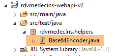 |
package rdvmedecins.helpers;
import org.springframework.security.crypto.codec.Base64;
public class Base64Encoder {
public static void main(String[] args) {
// Es werden zwei Argumente erwartet: Login und Passwort
if (args.length != 2) {
System.out.println("Syntaxe : login password");
System.exit(0);
}
// Die beiden Argumente werden abgerufen
String chaîne = String.format("%s:%s", args[0], args[1]);
// Die Zeichenfolge wird kodiert
byte[] data = Base64.encode(chaîne.getBytes());
// die Base64-Kodierung wird angezeigt
System.out.println(new String(data));
}
}
Wenn wir dieses Programm mit den beiden Argumenten [admin admin] ausführen:
 |
erhalten wir folgendes Ergebnis:
Da wir nun wissen, wie man den Authentifizierungs-Header HTTP generiert, starten wir den nun gesicherten Webdienst. Anschließend fordern wir mit dem Chrome-Client [Advanced Rest Client] die Liste aller Ärzte an:
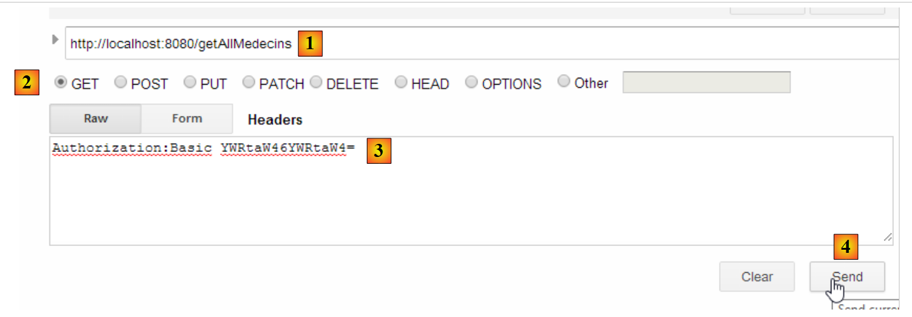 |
- In [1] fordern wir die URL der Ärzte an;
- in [2] mit der Methode GET;
- in [3] geben wir den Header HTTP für die Authentifizierung an. Der Code [YWRtaW46YWRtaW4=] ist die Base64-Kodierung der Zeichenfolge [admin:admin];
- Bei [4] senden wir den Befehl HTTP;
Die Antwort des Servers lautet wie folgt:
 |
- in [1], der Authentifizierungsheader HTTP;
- in [2] sendet der Server eine Antwort mit der Kennung JSON zurück;
- in [3] die Liste der Ärzte.
Versuchen wir nun eine Anfrage HTTP mit einem falschen Authentifizierungsheader. Die Antwort lautet dann wie folgt:
 |
- in [1] und [3]: der Authentifizierungsheader HTTP;
- in [2]: die Antwort des Webdienstes;
Versuchen wir es nun mit dem Benutzer „user / user“. Dieser existiert zwar, hat aber keinen Zugriff auf den Webdienst. Wenn wir das Base64-Kodierungsprogramm mit den beiden Argumenten [user user] ausführen:
 |
erhalten wir folgendes Ergebnis:
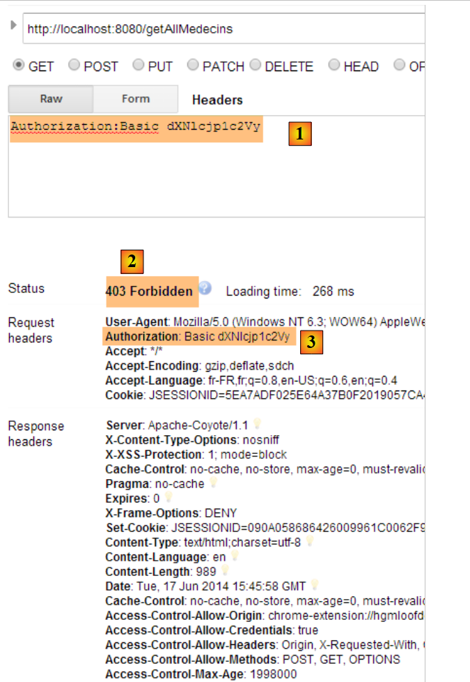 |
- in [1] und [3]: den Authentifizierungsheader HTTP;
- in [2]: die Antwort des Webdienstes. Sie unterscheidet sich von der vorherigen, die [401 Unauthorized] lautete. Diesmal hat sich der Benutzer zwar erfolgreich authentifiziert, verfügt jedoch nicht über ausreichende Rechte, um auf URL zuzugreifen;
2.15. Conclusion
Zur Erinnerung: Die Gesamtarchitektur unserer Client-Server-Anwendung sieht wie folgt aus:
 |
Ein gesicherter Webdienst ist nun betriebsbereit. Wir werden sehen, dass er aufgrund von Problemen, die sich beim Aufbau des Angular-Clients JS zeigen werden, angepasst werden muss. Wir werden jedoch abwarten, bis das Problem auftritt, um es dann zu beheben. Wir werden nun den Angular-Client erstellen, der eine Weboberfläche zur Verwaltung der Arzttermine bereitstellen wird.